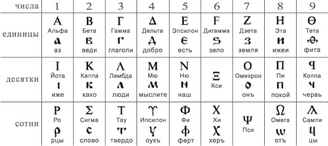

Авало́н — мифический остров в дошедших до нас во французских и английских обработках кельтских легенд. На Авалоне был перезахоронен легендарный король Артур; в других вариантах легенды: Авалон — место пребывания Феи Морганы (персонаж английских легенд артуровского цикла, целительница, волшебница). В честь нее названо явление фата-моргана (оптический мираж). Согласно хронике Гальфрида, на этом острове был выкован меч Артура, а затем сам король был увезён туда для исцеления после своей последней битвы. Согласно современному толкованию, миф об Авалоне — отголосок дохристианских сказаний о «стране блаженства», ассоциировавшейся с полуостровом Авалон в Уэльсе, священном для кельтов.
Авва́кум Петро́в (1620 — 1682) — священник Русской церкви, протопоп, один из первых духовных вождей старообрядчества и духовный писатель, которому приписывают несколько десятков сочинений. Противник церковной реформы, начатой патриархом Никоном и царём Алексеем Михайловичем, идеолог и наиболее видный деятель старообрядчества в период его возникновения. За свою религиозную деятельность был сослан, заточён в тюрьму и в итоге казнён.
Ибн Си́на, известный на Западе как
Авице́нна (980 - 1037) — средневековый персидский учёный, философ и врач, представитель восточного аристотелизма. Был придворным врачом саманидских эмиров и дайлемитских султанов, некоторое время был визирем в Хамадане. Самый известный и влиятельный философ-учёный средневекового исламского мира. «Книга исцеления». Множество медицинских трактатов.
«Адвокат дьявола» — калька латинского «advocatus diaboli», что в действительности переводится как «защитник дьявола». В римской католической церкви этим выражением называли должность, которая официально именовалась «укрепитель веры». Она была введена в 1587 году папой Сикстом V и официально отменена в 1983 году Иоанном Павлом II. Функция заключалась в том, чтобы собрать и привести все возможные аргументы, которые могли бы помешать канонизации или беатификации праведника. Официальное лицо, выполнявшее противоположную функцию (то есть защиту претендента), называлось «защитник Бога» (лат. advocatus Dei).
Адрианов вал — укрепление, возведенное римлянами для защиты от набегов пиктов и бригантов.
Акрости́х — литературная форма: стихотворение, в котором некоторые буквы каждой строки составляют осмысленный текст
Согласно мифу, однажды
Актеон во время охоты случайно подошёл к месту, где Артемида купалась со своими нимфами в реке. Заметив наблюдавшего за ними охотника, разгневанная богиня превратила его в оленя, который попытался убежать, но был настигнут и разорван 50 охотничьими собаками самого Актеона.
Александрийская библиотека была сожжена в ходе боевых действий. Её наследница — Библиотека Александри́на — открыта в 2002 году, и во время египетской революции ей тоже угрожали поджогом. Конструкция крыши напоминает зеркало маяка, направляющее свет. Александрийский маяк был одним из семи чудес света.
Александровская слобода — резиденция опричнины Ивана Грозного, которую народ прозвал "неволей".
Алиса в стране чудес (Кэрролл, 1865 год). Белый кролик, кроличья нора, рассказ о Вильгелье Завоевателе, уменьшается и вырастает в жилище Кролика, Гусеница, кусочек гриба - метаморфозы, Чеширский кот, крокет (фламинго в качестве клюшек, ежей вместо мячей), Безумное чаепитие, где пытается разгадать загадки, Карточные стражи, Черепаха Квази и грифон, Герцогиня, Мартовский заяц, Червонная королева как антагонист. «почему ворон похож на письменный стол?»
Алиса в Зазеркалье (1871 год). Мир – шахматная доска. Из зазеркальной комнаты Алиса попадает в зазеркальный сад говорящих цветов, где встречает Чёрную Королеву и становится Белой Пешкой. Затем она на поезде проезжает третью клетку и оказывается в лесу, в котором пропали все имена. Там у близнецов Траляля и Труляля она узнает, что всё происходящее есть сон Чёрного Короля. Встреча с Белой Королевой заканчивается в лавке, где она покупает яйцо, превратившееся в Шалтая-Болтая. Стих про Бармаглота — вероятно, самая известная попытка ввести в язык несуществующие слова, подчиняющиеся, тем не менее, всем законам языка.
Алмазная сутра — сутра цикла «Праджняпарамиты», основополагающий текст буддизма махаяны, созданный приблизительно в III веке н. э., но не позднее середины IV века. В сутре описываются поведение, речь и образ мыслей Будды, которые стремятся постигнуть ставшие на путь бодхисаттв.
Альбедо — характеристика отражательной способности поверхности, астероид с низким альбедо будет выглядеть практически чёрным.
Альтами́ра (La cueva de Altamira) — пещера в Испании с полихромной каменной живописью эпохи верхнего палеолита (Солютрейская культура). Находится на одноимённом лугу в 2 км от центра городка Сантильяна-дель-Мар в Кантабрии, Испания, в 30 км западнее Сантандера. Альтамира является естественной пещерой в породе, а рисунки в ней — один из самых важных сохранившихся живописных и художественных циклов первобытного искусства. С момента своего открытия в 1868 году пещера была исследована всеми ведущими специалистами-палеонтологами каждого из периодов палеолита. «Сикстинская капелла» первобытного искусства
Амалте́я — в древнегреческой мифологии — легендарная коза, вскормившая своим молоком младенца Зевса на острове Крите. Ей принадлежал рог изобилия.
«Американская готика» (англ. American Gothic) — картина американского художника Гранта Вуда, созданная в 1930 году. В реальности для картины на провинциальную тематику позировали сестра художника и его дантист, причём сделали это по отдельности.
Иди Амин (президент Уганды 1971/79) рассматривается критиками как создатель одного из самых жестоких тоталитарных режимов в Африке. Иди Амин считается одним из самых курьёзных, одиозных и эпатажных государственных лидеров XX века. Одним из самых абсурдных решений Амина считается его эфемерное объявление однодневной войны Соединённым Штатам Америки в 1975 году. Диктатор Уганды объявил войну только для того, чтобы на следующий день объявить себя победителем.
А́миши они же аманиты или амманиты — религиозное движение, зародившееся как самое консервативное направление в меннонитстве(разновидность анабаптизма) и затем ставшее отдельной протестантской религиозной деноминацией. Амиши отличаются простотой жизни и одежды, нежеланием принимать многие современные технологии и удобства. В настоящее время большинство амишей проживают в США и Канаде.
Анатомический театр (лат. theatrum anatomicum) — помещение для анатомических работ, исследований и чтения лекций. Исторически — специфическое явление культуры эпохи барокко: театрализованное вскрытие трупов врачами в парадных костюмах. Анатомические театры появились в Италии в XV—XVI веках. Старейший анатомический театр открыт в Падуе в 1490 году. В России анатомические театры появились после «Великого посольства» Петра I в Голландию в Лейдене в 1698 году.
Анте́й («обращённый против») в греческой мифологии — великан, получивший необоримую силу от соприкосновения с матерью Геей — землёй. Царь Ливии.
Анубис - древнеегипетский бог погребальных ритуалов и мумификации, «страж весов» на суде Осириса в царстве мёртвых, знаток целебных трав) изображается с головой шакала, а святой Христофор – с головой собаки.
А́ншлюс — включение Австрии в состав Германии, состоявшееся 12—13 марта 1938 года.
Апостол Пётр считается привратником Рая
Аппарат Илизарова (1950) — это универсальная динамическая конструкция, позволяющих создавать оптимальные медико-биологические и механические условия как для костного сращения, так и для анатомо-функционального восстановления опорно-двигательного аппарата. Аппарат представляет собой металлические «кольца», на которых крепятся «спицы», проходящие через костную ткань. Гавриил Илизаров - советский хирург-ортопед, изобретатель
А́ппиева доро́га — самая значимая из античных общественных дорог Рима. Дорога, проложенная в 312 году до н. э. при цензоре Аппии Клавдии Цеке, проходила из Рима в Капую, позднее была проведена до Брундизия. Через неё было налажено сообщение Рима с Грецией, Египтом и Малой Азией.
Ара́бский алфави́т (также арабское письмо, ара́бица, арабская вязь – на письме) — алфавит, используемый для записи арабского языка и некоторых других языков. Состоит из 28 букв и используется для письма справа налево.
А́ргус — персонаж древнегреческой мифологии. Многоглазый великан, в связи с чем получил эпитеты «Всевидящего» и «Многоглазого» или «Панопта».Множество глаз, из которых одна часть спала, а другая бодрствовала, делало его идеальным стражем. Именно ему Гера дала задание охранять, превращённую в корову, возлюбленную Зевса Ио. Зевс поручил своему сыну Гермесу освободить свою любовницу. Гермесу с большим трудом удалось усыпить Аргуса, после чего он убил многоокого великана. После смерти Гера либо превратила Аргуса в павлина, либо поместила его глаза на павлиний хвост. В античности Аргуса воспринимали как персонификацию звёздного неба. В Новое время сюжет мифа нашёл отображение на картинах многих художников, в том числе П. П. Рубенса и К. Лоррена.
Аристофа́н — древнегреческий комедиограф, отец комедии. Древние называли Аристофана просто Комиком, подобно тому, как Гомер был известен под именем Поэта.В комедии Аристофана «Лягушки» соревнуются Еврипид и Эсхил, читая свои произведения
Арлингтонское национальное кладбище — американское военное кладбище в Арлингтоне, пригороде Вашингтона. На территории кладбища захоронены участники войн, президенты, председатели Верховного суда и астронавты.
Арха́нгел (др.-греч. «главный, старший» + «вестник, посланец, ангел») — в христианском вероучении одна из высших категорий (чинов) ангелов. В системе ангельской иерархии Псевдо-Дионисия Ареопагита это восьмой из девяти чинов ангельских. В канонических книгах Библии архангелом непосредственно назван только лишь Михаил (Послание Иуды:9), но, согласно традициям Церкви, архангелов восемь. В Православной церкви встречается упоминание о восьми архангелах: Михаиле (поставлен над лучшею частью людей, – над избранным народом), Гаврииле (поставлен над змеями, и над раем, и над херувимами), Рафаиле, Урииле, Селафииле, Иегудииле, Варахииле и Иеремииле.
Архимед, возможно, использовал зеркала, действующие вместе, как параболический отражатель солнечного света, чтобы сжечь корабли, атакующие Сиракузы. Полная теория рычага. Зако́н Архиме́да — один из законов статики жидкостей и газов. Архимед построил планетарий или «небесную сферу». Аксиома Архимеда (математика). Матанализ. Сделал множество открытий в области геометрии. Заложил основы механики, гидростатики, был автором ряда важных изобретений.
Атака лёгкой бригады (англ. The Charge of the Light Brigade) — героическая, но катастрофическая по последствиям атака для британской кавалерии под командованием лорда Д. Кардигана на позиции Русской армии во время Балаклавского сражения 25 октября 1854 года в ходе Крымской войны. «Это великолепно, но это не война: это безумие». Мотив использован в сцене атаки кавалерии гондорцев на Осгилиат — фильм «Властелин колец: Возвращение короля». Атака вошла в историю также благодаря стихотворению Альфреда Теннисона
Согласно мифам,
Афина вышла из головы Зевса, причем в полном боевом облачении.Афина Паллада — в древнегреческой мифологии богиня мудрости, военной стратегии и тактики, одна из наиболее почитаемых богинь Древней Греции, включавшаяся в число двенадцати великих олимпийских богов, эпоним города Афины.
Афи́нский Акро́поль — акрополь в городе Афины, представляющий собой 156-метровый скалистый холм с пологой вершиной (ок. 300 м в длину и 170 м в ширину). Это было главное место для нахождения царя. Акрополь также называют «Кекропия» (Cecropia) или «Кекропс» (Kekrops) — в честь Кекропса, который по легенде был первым царем Афин и основателем Акрополя. Парфенон - главный храм Акрополя.
Афо́н (в греческих источниках официально именуется Святая Гора) — название горы (высота 2033 м) и полуострова в Греческой Македонии на севере Восточной Греции. На Афоне используется юлианский календарь, в том числе в административных документах. Для православных всего мира — одно из главных святых мест, почитается как земной Удел Богородицы. Одним из самых известных обычаев монашеской горы Афон является запрет на въезд женщинам и самкам животных. Присутствие русских иноков на Афоне достоверно относят к началу XI века
Балдуин IV Прокажённый — король Иерусалима с 1174 года. На страницах хроники его наставника приводится тревожный эпизод из жизни юного короля — во время игры со сверстниками, которые в шутку щипали друг друга, Балдуин не чувствовал боли. Гийом Тирский первым увидел в потере чувствительности кожи симптом тяжёлого заболевания, но в полной мере болезнь проявилась через несколько лет. Маска не имеет документального подтверждения.
Балто — угольно-чёрный сибирский хаски, ездовая собака из упряжки, перевозившей медикаменты во время эпидемии дифтерии в 1925 году в городах штата Аляски, США. Был назван в честь норвежского исследователя Сэмюэля Балто.
Бальдр — любимый сын Одина, бог весны и света. Бальдр — самый светлый среди асов, с его приходом на земле пробуждается жизнь, и всё становится краше. Слейпнир («скользящий» или «живой, проворный, шустрый») — в германо-скандинавской мифологии восьминогий конь Одина, порождение Локи. Скандинавы верили, что возрождение Бальдра произойдёт после дня Рагнарёк (гибель богов), когда из моря поднимется новая зелёная земля.
Банши – дух из британских преданий. По легенде её крик предвещает смерть.
Барон Суббота — в религии вуду одна из форм Барона (Baron), лоа (дух в религии вуду), связанное со смертью, мёртвыми, а также с сексуальностью и рождением детей. Барон Суббота изображается в виде скелета или человека в чёрном фраке и чёрном цилиндре (одежда похоронных дел мастера). Основные его символы — гроб и крест. Первая могила на новом кладбище посвящается Барону Суббота. Считается, что человек, в которого вселился Барон Суббота, проявляет невоздержанность в питье и пище, курении и сексе. Праздник Дня мёртвых на Гаити — это прежде всего праздник Барона Субботы.
Ла́ймен Ба́ум — американский писатель, создатель волшебной страны Оз. Известный классик детской литературы, чьи книги были десятки раз экранизированы, породили множество подражаний и пародий. Увлекался птицеводством и театром. Имя Оз родилосьвечером 1898 года, когда в гостиной собралась детвора и хозяин дома рассказывал одну из своих сказок. «Где же всё это было, мистер Баум?» — спросил детский голосок. «А было это в стране под названием… — взгляд рассказчика, обежав комнату в поисках подсказки, упал случайно на старинное бюро в углу с ящиками для домашней картотеки, на верхнем значились буквы A — N, на нижнем O — Z. — …Оз!» Так получил имя сказочный мир.
Бауха́ус — учебное заведение, существовавшее в Германии с 1919 по 1933 год, а также художественное объединение, возникшее в рамках этого заведения, и соответствующее направление в архитектуре. «Функционализм», то есть что утилитарно, удобно, то и красиво.
Баязи́д I Молниено́сный (1354—1403) — 4-й правитель и 2-й султан Османской империи (1389—1402), сын султана Мурада I. Баязид известен своими военными успехами и получил прозвище Молниеносный за быстроту перемещения войск. Баязид участвовал в битве на Косовом поле, где погиб его отец, султан Мурад. Баязид захватил все бейлики (феод бея) Малой Азии, а в Европе закончил покорение Болгарии и дважды держал Константинополь в осаде. Византийский император был вынужден стать вассалом Баязида. Султан раздвинул границы Османской империи до Дуная на северо-западе и Евфрата — на востоке. В Азии интересы Баязида столкнулись с интересами Тамерлана. Конфликт двух завоевателей привёл к битве при Анкаре, где султан был разбит и пленён. Через год в плену Баязид умер.Итогом правления Баязида стал крах его империи, разделённой Тамерланом.
Беатифика́ция (лат. beatus — счастливый, благословенный) — обряд причисления умершего к лику блаженных в католической церкви. Беатификацию следует отличать от канонизации, в ходе которой происходит причисление праведника к лику святых: беатификация понимается как этап, предваряющий канонизацию.
Карл Бе́де́кер (1801 — 1859) — немецкий издатель, основал в 1827 году в Кобленце издательство путеводителей по разным городам и странам. Известным при жизни его сделали непревзойдённая достоверность и издательское качество путеводителей, носящих его имя («бедекеров»), быстро ставшее нарицательным для изданий такого вида.
Бедла́м (от англ. Bethlehem — Вифлеем), первоначальное название — госпиталь святой Марии Вифлеемской, психиатрическая больница в Лондоне (с 1547). Название Бедлам стало именем нарицательным, вначале — синонимом сумасшедшего дома, а позже — словом для обозначения крайней неразберихи из-за творившегося там в XVI веке беспорядка.
Белый слон — английская идиома. Означает некое имущество, которое хозяин вынужден содержать, но взамен не получает от него никакой пользы. Примерный русский аналог — «чемодан без ручки». В биржевой практике выражение «белый слон» обозначает операцию, при которой расходы заведомо превышают ожидаемую прибыль.Значение термина уходит корнями к сакральным белым слонам юго-восточной Азии, которых содержали монархи Бирмы, Таиланда, Лаоса и Камбоджи.
Бе́овульф («пчелиный волк», то есть «медведь») — англосаксонская эпическая поэма, действие которой происходит в Ютландии, до переселения англов в Британию. Названа по имени главного героя. Считается, что эпос создан в конце VII или в начале VIII века. Несмотря на обоснованную сомнительность её подлинности, это произведение считают древнейшей эпической поэмой «варварской» (германской) Европы, сохранившейся в полном объёме. Основное содержание заключается в сказаниях о победе Беовульфа над страшными чудовищами Гренделем и его матерью, и над опустошавшим страну драконом, к чему прибавлено несколько побочных эпизодов. Поэма прославляет языческие добродетели — бесстрашие в бою, верность племени и вождю, беспощадную месть врагам.
Берсерки – воины, впадавшие в неистовство во время битвы
Альфонс Бертильо́н (1853 — 1914) — французский юрист, изобретатель системы бертильонажа — системы идентификации преступников по их антропометрическим данным.Дактилоскопия, имея гораздо более надёжную систему регистрации, и положила конец антропометрическому методу Бертильона.
Генри Бессемер — английский изобретатель, разработавший процесс выплавки стали, названный его именем, который на протяжении почти ста лет с 1856 по 1950 был главным способом изготовления стали .
Бессеребреник — бескорыстный человек, не преследующий богатство.
Билл У. (Уильям Уилсон) — один из создателей первого сообщества Анонимных алкоголиков, вместе с Робертом Смитом, которое впоследствии разрослось до более чем 100 тыс. групп во всех странах мира, включающих в себя более 2 млн человек. После смерти Уилсона в 1971 году его имя было включено в список 100 величайших людей XX века по версии журнала Time. Сначала Уилсон из-за пьянки попал в больницу и не пил полгода. Познакомился с доктором Бобом Смитом (тоже алкоголик). Возникла идея, что, живя по определенным духовным принципам они могут противостоять недугу и передавать свое знание другим алкоголикам. 10 июня 1935 года доктор Боб Смит выпил последний раз спиртосодержащий напиток (бутылку пива). 10 июня 1935 года является днём создания сообщества АА. Уилсон так и не бросил курить до конца жизни.
Боб Бимон — американский легкоатлет (прыжки в длину). Бимон вошёл в историю лёгкой атлетики своим феноменальным прыжком на 8,90 м в финале Олимпиады 1968 года в Мехико. Этот результат, названный «прыжком в XXI век», на 55 см превышал прежний рекорд Ральфа Бостона и был превзойдён лишь спустя 23 года американским прыгуном Майком Пауэллом на чемпионате мира 1991 года в Токио на 5 см. Результат Бимона уже полвека остаётся олимпийским рекордом и третьим результатом в истории прыжков в длину.
«Битва бастардов», одно из важнейших событий в цикле произведений Джорджа Мартина «Песнь Льда и Пламени», состоялась в 303 году после Высадки Эйгона, на которой базируется хронология романов.
Битва на Сомме — битва на французском театре Первой мировой войны армий Британской империи и Французской республики против Германской империи. Состоялась с 1 июля по 18 ноября 1916 года на обоих берегах реки Сомма. Битва при Сомме — одна из крупнейших битв в ходе Первой мировой войны, в которой было убито и ранено более 1 000 000 человек, что делает её одной из самых кровопролитных битв в истории человечества. Битва показала важность военно-воздушных сил. Впервые в мире на Сомме были применены танки.
Бифи́теры (англ. Beefeater от beef «говядина» + eater «едок») — неофициальное название церемониальных стражей лондонского Тауэра. Официальным (кратким) английским названием является Yeomen Warders («Йоменская Стража»).Бифитеры были сформированы в 1485 году новым королём Генрихом VII, первым монархом из династии Тюдоров. Роза Тюдоров, геральдическая эмблема династии, и сейчас часть эмблемы бифитеров.
Блетчли-парк (англ. Bletchley Park), также известный как Station X — особняк, расположенный в Блетчли (в городе Милтон Кинс). В период Второй мировой войны в Блетчли-парке располагалось главное шифровальное подразделение Великобритании — Правительственная школа кодов и шифров. Энигма Тьюринга. «Колосс» — одна из первых в мире ЭВМ.
«Deus ex machina» (с лат. —
«Бог из машины») — выражение, означающее неожиданную, нарочитую развязку той или иной ситуации, с привлечением внешнего, ранее не действовавшего в ней фактора. В русском языке есть близкое по значению выражение «рояль в кустах». Широко использован в кино (особенно вестерны), литературе (Голдинг Диккенс Булгаков Стругацкие и тд). В античном театре боги зачастую будто бы спускались с небес. Используемый для создания такого эффекта кран назывался машиной.
Жан Бока́сса, Бокасса I (22 февраля 1921 — 3 ноября 1996) — президент и император ЦАР. Людоед
«Большая Берта» – 420-мм мортира, названная так в честь тогдашней владелицы концерна Крупп, самый что ни на есть настоящий «молот ведьм». В годы Первой мировой войны немцы успешно применяли «Берты» для обстрела хорошо укрепленных французских и бельгийских фортов, и крепости Верден. Наши союзники на Западном фронте называли 420-мм мортиру «убийца фортов». Всего было построено девять таких орудий.
Боре́й — в греческой мифологии олицетворение северного бурного ветра.
Boston Dynamics — инженерная компания, специализирующаяся в робототехнике. Известна разработкой по заказу DARPA для военных целей четвероногого робота BigDog.
Бостонский брак (англ. Boston marriage) — историческое название совместного долгосрочного проживания двух женщин. Термин берёт своё начало от романа американского писателя Генри Джеймса «Бостонцы» (1886) . Появление этого термина в Новой Англии пришлось на время, когда женщины получили право на образование и когда появились различные женские колледжи.
Бо́стонское чаепи́тие — акция протестa американских колонистов 16 декабря 1773 года в ответ на действия британского правительства, в результате которой в Бостонской гавани был уничтожен груз чая, принадлежавший Английской Ост-Индской компании.
Бо́удикка (неточная римская передача Боадицея, лат. Boadicea) — возглавила антиримское восстание бриттов в 61 году. Боудикка управляла своими войсками с колесницы. Фигура была окружена своеобразным романтическим культом при английских королевах Елизавете и Виктории — не в последнюю очередь потому, что её имя значит «победа» (как и имя Виктория). В викторианский период появляются многочисленные скульптурные изображения свободолюбивой предводительницы иценов. Парадокс состоит в том, что образ «туземной» воительницы, которая принесла себя в жертву борьбе с величайшей империей своего времени, был переосмыслен как символ Британской империи — крупнейшей империи в истории человечества.
Ти́хо Бра́ге (16 век) — датский астроном, астролог и алхимик эпохи Возрождения. Первым в Европе начал проводить систематические и высокоточные астрономические наблюдения, на основании которых Кеплер вывел законы движения планет. В апреле 1566 года он прибыл в знаменитый Виттенбергский университет, оплот протестантской культуры. Но в результате эпидемии чумы он был вынужден срочно уехать в Росток. Там Браге в ходе дуэли с дальним родственником лишился верхней части носа, в результате чего был вынужден всю оставшуюся жизнь носить протез (золотой нос). Существует легенда, что Тихо Браге, следуя придворному этикету, не мог выйти из-за королевского стола во время обеда, и умер в результате разрыва мочевого пузыря. Браге назвал свою обсерваторию «Ураниборг» («Замок Урании») в честь музы астрономии Урании; часто это название переводится как «Небесный замок».
Брандер — судно, нагруженное легковоспламеняющимися, либо взрывчатыми веществами, используемое для поджога или подрыва вражеского корабля с целью его уничтожения.
О́рден ме́ньших
бра́тьев капуци́нов (лат. Ordo Fratrum Minorum Capuccinorum; кратко — капуци́ны) — монашеский орден, ветвь францисканцев; первоначально насмешливое прозвище, относившееся к остроконечному капюшону (итал. cappuccio), носимому членами этого ордена. Основан Маттео Басси в 1525 году как ветвь францисканского ордена. В 1535 году был основан Второй (женский) орден капуцинов.
Бре́стский мир — сепаратный мирный договор, подписанный 3 марта 1918 года в городе Брест-Литовск представителями Советской России и Центральных держав, обеспечивший выход РСФСР из Первой мировой войны. Факт заключения сепаратного мира и условия Брест-Литовского мирного договора вызвали резкую реакцию как среди внутрироссийской оппозиции большевикам, так и на международной арене и привели к обострению Гражданской войны. Россия заключила договор с Германией отдельно от союзников по Антанте - пример сепаратного мира (без ведома и согласия союзников).
«Булы́жник — ору́жие пролетариа́та» — знаменитая скульптура, выполненная советским скульптором И. Д. Шадром в 1927 году из гипса и в 1947 году отлитая в бронзе. Гипсовая версия хранится в Третьяковской галерее. Герой скульптуры представляет собой обобщённый образ пролетария начала XX века, борца за революционные идеалы и свободу. «Булыжник — оружие пролетариата» является одним из самых ярких явлений реалистического искусства XX века.
Никола́ Бурбаки́ — коллективный псевдоним группы французских математиков (позднее в неё вошли несколько иностранцев), созданной в 1935 году.
Бурида́нов осёл — философский парадокс, названный по имени Жана Буридана, несмотря на то, что был известен ещё из трудов Аристотеля, где был поставлен вопрос: как осёл, которому предоставлены два одинаково соблазнительных угощения, может всё-таки рационально сделать выбор?
Бутылка Клейна (или Кляйна) — неориентируемая (односторонняя) поверхность, впервые описанная в 1882 году немецким математиком Ф. Клейном. Она тесно связана с лентой Мёбиуса и проективной плоскостью. В отличие от ленты Мёбиуса, бутылка Клейна является замкнутым многообразием, то есть компактным многообразием без края.
Бык Фаларида, также известный как медный или сицилийский бык, древнее орудие казни. Он представлял собой полое медное изваяние быка в натуральную величину. Внутрь быка сажали казнимого, закрывали, а затем разводили костёр под брюхом статуи. Согласно дошедшим описаниям, из ноздрей быка при этом исходил дым, а акустическое внутреннее устройство изваяния позволяло слышать стоны жертв, которые походили на рёв быка. Создателем быка считается афинский медник Перилай (или Перилл), он же, по приказу Фалариса, стал первой жертвой медного быка. Сам Фаларис, после свержения вследствие восстания, также был казнён посредством сожжения в медном быке. Позже Византийская империя унаследовала данный способ сожжения, помещая приговорённых к смерти в пустые медные цистерны и разжигая огонь снаружи.
Строительство
Вавилонской башни было прервано Богом, который заставил людей заговорить на разных языках, из-за чего они перестали понимать друг друга, не могли продолжать строительство города и башни и рассеялись по всей земле. В европейской живописи наиболее знаменитой картиной на этот сюжет является полотно Питера Брейгеля Старшего «Вавилонское столпотворение» (1563). Громкие крики птиц на острове, открытом исследователем Мэтью Флиндерсом 9 февраля 1798 года, напомнили ему историю о Вавилонском столпотворении, поэтому он дал ему название Бабел (рус. Вавилон). Другое название — Этеменанки, что в переводе означает Дом краеугольного камня неба и земли. Археологи при проведении раскопок смогли обнаружить огромный фундамент этой постройки. Это оказался типичный для Месопотамии зиккурат. Нимрод — горделивый царь и охотник, который соперничал с Богом и которому приписывается строительство Вавилонской башни.
Вага́нты — творческие люди в Средние века в Западной Европе, способные к сочинительству и к исполнению песен или, реже, прозаических произведений.
«Ва́за» (также «Ва́са», швед. Vasa) — шведский боевой корабль, спущенный на воду летом 1628 года. В 1961 году корабль был поднят, законсервирован, подвергнут реставрации и в настоящее время экспонируется в специально построенном для него музее. «Ваза» — единственный в мире сохранившийся парусный корабль начала XVII века.
Валаамова ослица — картина голландского художника Рембрандта, созданная в 1626 году. Она относится к так называемому Лейденскому периоду — времени, когда Рембрандт ван Рейн работал в этом городе с 1625 по 1631 год. Царь Моава, соседней к Ханаану страны, не имея достаточно сил для отражения агрессии израильтян с Моисеем во главе, просит некоего Валаама напустить на врагов своих проклятия. Прорицатель после долгих уговоров соглашается и отправляется в путь на ослице. Впоследствии дорогу преграждает видимый только животному ангел, которого послал Бог (Яхве). Валаам стал избивать ослицу, после чего она заговорила и донесла до него волеизъявление Бога. Невзирая на многочисленные просьбы Царя Моава, прорицатель Валаам не только не проклял народ израильский, но и трижды благословил его.
Вальпу́ргиева ночь Ночь ведьм — ночь с 30 апреля на 1 мая. Во многих странах Западной Европы в эту ночь отмечается праздник весны, восходящий к дохристианским традициям. В средние века существовало поверье, что Вальпургиева ночь является ночью пиршества ведьм во всей Германии и Скандинавии. Ведьмы садились верхом на метлы и слетались на горные вершины, где проводили время в диких пирах, плясках и совокуплении с демонами и дьяволом.
Варфоломе́евская ночь — массовое убийство гугенотов (французских протестантов) во Франции, устроенное католиками в ночь на 24 августа 1572 года, в канун дня святого Варфоломея. Традиционно считается, что Варфоломеевская ночь была спровоцирована Екатериной Медичи, матерью французского короля Карла IX, под давлением итальянских советников. По различным оценкам, в Париже в этот день погибло около 2000 человек, а по всей Франции в погромах было убито около 30 тысяч гугенотов.Считается, что сигнал к началу резни прозвучал с колокольни церкви Сен-Жермен-л'Оксеруа.
«Варя́г» — бронепалубный крейсер. Участник боя у Чемульпо (1904). На общем собрании офицеров крейсера было принято решение затопить корабль (после эвакуации команды), чтобы тот не попал в руки врага. Подвигу экипажей крейсера «Варяг» и канонерской лодки «Кореец» посвящены песни «Врагу не сдаётся наш гордый „Варяг“»,"Плещут холодные волны". На сопках Манчжурии – вальс.
"Вассал моего вассала — не мой вассал" — принцип, которого придерживалась средневековая Европа
Велиза́рий (ок. 505 — 13 марта 565) — византийский военачальник времён императора Юстиниана Великого. Консул 535 года. Один из величайших полководцев византийской истории. Под конец жизни в 562 году Велизарий подвергся опале: его имения были конфискованы. Но в 563 году Юстиниан оправдал и освободил полководца, вернув все конфискованные имения и ранее пожалованные титулы, хотя и оставил его в безвестности. Тем не менее, эта опала впоследствии в XII веке подала повод к возникновению легенды об ослеплении Велизария.
Вели́кая депре́ссия (англ. Great Depression) — мировой экономический кризис, начавшийся в октябре 1929 года с биржевого краха в США. 1930-е годы в целом считаются периодом Великой депрессии.
Великий баньян — дерево с самой большой в мире площадью кроны.Находится в Индийском ботаническом саду в Хауре.
Великий пожар в Лондоне — именование пожара, охватившего центральные районы Лондона в 1666 году. Пожар также помог избавиться от Великой чумы.
Вели́кий понти́фик (букв. — «Великий строитель мостов») — верховный жрец, глава коллегии понтификов. Первоначально высшая жреческая должность в Древнем Риме была пожизненной. Так как Великий понтифик формально не был магистратом, он не носил тогу с пурпурной каймой — отличительным его знаком был железный жертвенный нож (лат. secespita). Позже Великими (Верховными) понтификами стали называться римские папы, начиная со Льва I (440 г.). Таким образом, титул великого понтифика можно считать самым древним непрерывно присваиваемым титулом в Европе.
Великий чикагский пожар продолжался с 8 октября по 10 октября 1871 года. Пожар уничтожил большую часть города Чикаго, при этом сотни жителей города погибли.
«Вене́ра в меха́х» — повесть австрийского писателя Леопольда фон Захера-Мазоха, которая ныне является его самым известным сочинением.1869 год. Главный герой по имени Северин одержим эротической фантазией о женщине, которая будет его унижать. Свой идеал властной и прекрасной дамы он называет "Венерой в мехах". Благодаря повести Захер-Мазоха склонность получать удовольствие, испытывая унижения и насилие получила название мазохизма.
Вене́рина мухоло́вка — вид хищных растений из монотипного рода Дионея семейства Росянковые. Венерина мухоловка - растение болотистых областей восточного побережья Соединенных Штатов Америки. Венерина мухоловка ловит своих жертв с помощью специализированного ловчего аппарата, образованного из краевых частей листьев.
По английской традиции, при свадьбе в королевской семье создается
вензель из первых букв имён жениха и невесты.
В «Божественной комедии» проводником Данте в аду был римский поэт
Вергилий.
Влади́мир Верна́дский — российский учёный-естествоиспытатель, мыслитель и общественный деятель конца XIX века — первой половины XX века. Академик Петербургской академии наук (1908). Создатель научных школ и науки биогеохимии. Один из представителей русского космизма. Лауреат Сталинской премии I степени (1943). В круг его научных интересов входили: минералогия, кристаллография, геохимия, геология, почвоведение, радиогеология, биология, палеонтология, биогеохимия, метеоритика, философия и история науки. Кроме того, занимался организаторской и общественной деятельностью. Понятие перехода человечества из биосферы в ноосферу.
Франсуа́ Вие́т (16 век) — французский математик, основоположник символической алгебры. Формулы Виета. Виет также известен тем, что ввел в оборот запись неизвестных в уравнениях с помощью латинских букв.
Вильге́льм Завоеватель погиб от раны, полученной из-за пары неловких шагов — королевский конь, проезжая по пожарищу, наступил на горячие угли, опрокинулся, и рожок седла ранил в живот Вильгельма. Подобно легендарной смерти Олега, описанной, в частности, Пушкиным, Вильгельм принял смерть от своего коня. Легенда о смерти от змеиного укуса. По преданию, волхвы предсказали князю, что он умрёт от своего любимого коня. Олег приказал увести коня и вспомнил о предсказании только через четыре года, когда конь уже давно умер. Олег посмеялся над волхвами и захотел посмотреть на кости коня, встал ногой на череп и сказал: «Его ли мне бояться?» Однако в черепе коня жила ядовитая змея, смертельно ужалившая князя.
Ви́нланд — название территории Северной Америки, данное исландским викингом Лейфом Эрикссоном примерно в 1000 году. В настоящий момент среди учёных достигнуто согласие, что викинги среди европейцев действительно первыми открыли Северную Америку.
«Ви́тязь в тигро́вой шку́ре» — эпическая поэма, написанная на грузинском языке Шота Руставели, в XII веке, вероятнее всего между 1189—1212 годами. Фабула поэмы: именитый, но пожилой царь Аравии — Ростеван, не имея сына-наследника, возводит на престол свою единственную дочь — прелестную и умную Тинатину, которая питала любовь к юному полководцу по имени Автандил
«Витязь на распутье» — картина Виктора Васнецова.Карандашные наброски и эскизы к картине появились в начале 1870-х годов. В 1877 году Васнецов с младшего брата Аполлинария пишет этюд «Воин в шлеме с кольчужкой». Сюжет картины возник под впечатлением былины «Илья Муромец и разбойники». Сюжет «Витязя на распутье» воспроизведён на надгробии художника
«Водружение флага над Иводзимой» — историческая фотография, сделанная 23 февраля 1945 года Джо Розенталем. Она изображает пятерых морских пехотинцев США и санитара ВМС США, поднимающих флаг Соединённых Штатов на вершине горы Сурибати во время битвы за Иводзиму во Второй мировой войне.Позднее она стала единственной фотографией, которая получила Пулитцеровскую премию за выдающуюся фотографию в год публикации кадра. В США снимок стал одним из наиболее значимых и узнаваемых образов войны, а также, вероятно, стал наиболее часто воспроизводимой в репродукциях фотографией всех времён. Из шести человек, изображённых на фотографии, трое были убиты во время боя; трое оставшихся в живых (Гарольд Шульц, Рене Ганьон и Айра Хейз) стали знаменитостями после установления их личностей по фотографии. До 2016 года по ошибке считалось, что на фотографии был изображен не Гарольд Шульц, а Джон Брэдли.
Война́ А́лой и Бе́лой ро́зы — серия вооружённых династических конфликтов между группировками английской знати в 1455—1485 годах в борьбе за власть между сторонниками двух ветвей династии Плантагенетов — Ланкастеров (алая) и Йорков (белая). Несмотря на установившиеся в исторической литературе хронологические рамки конфликта (1455—1485), отдельные связанные с войной столкновения имели место как до, так и после войны. Война завершилась победой Генриха Тюдора из боковой ветви дома Ланкастеров, основавшего династию, правившую Англией и Уэльсом в течение 117 лет. Война принесла значительные разрушения и бедствия населению Англии, в ходе конфликта погибло большое число представителей английской феодальной аристократии. Если Белая роза, символизирующая Богородицу, использовалась как отличительный знак ещё первым герцогом Йоркским Эдмундом Лэнгли в XIV веке, то про употребление Алой розы ланкастерцами до начала войны ничего не известно. Возможно, она была изобретена по контрасту с эмблемой врага.
«Война бюстов» — соперничество Джины Лоллобриджиды и Софи Лорен.
Война Судного дня - четвёртая арабо-израильская война— военный конфликт между коалицией арабских государств с одной стороны и Израилем с другой. Началась 6 октября 1973 года с нападения Египта и Сирии и завершилась через 18 дней; при этом обе стороны понесли значительные потери.
Волапю́к, или воляпюк («мировой язык»), — международный искусственный социализованный язык (см. плановый язык), созданный в 1879 году немецким католическим священником Иоганном Мартином Шлейером. Изобилует умлаутами (фонетическое явление, напр, в германских языках - Mann — Männer)
Во́лго-Донско́й судохо́дный кана́л — канал (строили заключенные, именем Ленина, запуск в 1952 году), соединяющий реки Волгу и Дон в месте их максимального сближения на волгодонском перешейке и одновременно обеспечивающий связь Каспийского моря (самое большое бессточное озеро либо как море) с Мировым океаном. Каспийское море на арабском называлось Хазарским (гидроним). Территории (крупнейший порт – Баку) России, AZ, Казахстан, Туркмения, Иран.
Волошин (1877-1932, Коктебель) любил литературные мистификации. Вспомните, например, образ поэтессы Черубины де Габриак. 23 марта 1905 года в Париже стал масоном, 22 ноября 1909 года между Волошиным и Н. Гумилёвым состоялась дуэль на Чёрной речке.
Волхвы принесли младенцу три дара: золото, ладан и смирну (миро или мирра). Согласно апостолу Матфею, волхвы увидели в небе звезду и поняли, что она является знамением. Последовав за её движением по небосводу, они пересекли несколько государств и прибыли в Иерусалим. Там они обратились к правящему государю Ироду, с вопросом, где они могут увидеть только что родившегося Царя Иудейского. Ирод встревожился, но вида не показал и проводил волхвов из дворца, попросив их, когда они найдут Царя, сообщить ему, где он находится, «чтобы и мне пойти поклониться Ему». Путешественники покинули Иерусалим и последовали дальше за путеводной звездой, которая привела их в Вифлеем. Там они нашли Марию с младенцем, поклонились ему и принесли дары.После этого волхвам во сне было дано откровение, что к Ироду возвращаться с вестью об успехе не стоит. Не дождавшись их, разгневанный Ирод устроил избиение младенцев.
«Во́рон» (англ. The Raven) — самое известное стихотворение Эдгара Аллана По, впервые опубликованное 29 января 1845 года в нью-йоркской ежедневной газете Evening Mirror. Отличающееся музыкальностью, художественной выразительностью и мистической атмосферой, оно повествует о таинственном визите говорящего ворона к убитому горем молодому человеку, потерявшему свою возлюбленную. В ответ на вопросы, полные отчаяния и надежды, ворон повторяет слово «nevermore» («больше никогда»), чем усугубляет душевные муки героя.
Название
"воронье гнездо" укрепилось за позицией наблюдательного пункта на корабле, откуда матрос мог, например, прокричать: "Земля!".
Воро́та И́штар — восьмые ворота стен Вавилона, посвящённые богине Иштар (богиня плодородия и плотской любви, войны и распри, астральное божество, центральное в аккадской мифологии) , построены в 575 году до н. э. по приказу царя Навуходоносора II в северной части города. Один из самых известных памятников архитектуры Вавилонского царства. С 1930 года Ворота Иштар находятся в экспозиции Музея Передней Азии.Ворота посвящены богине Иштар и сооружены из кирпича, покрытого ярко-голубой, жёлтой, белой и чёрной глазурью. Для получения сине-зеленого оттенка использовали медь. Раскопаны в 1899 году.
“Все мы вышли из гоголевской «Шинели»” – общеизвестная фраза, которая означает, что расцвет русской классической литературы XIX века во многом произошел благодаря творчеству Гоголя. Автором этой фразы традиционно считается Достоевский.
"Всего хорошего, и спасибо за рыбу!" — слова, которыми у Дугласа Адамса дельфины попрощались с человечеством в романе "Автостопом по Галактике"
Га́бсбурги — одна из наиболее могущественных монарших династий Европы на протяжении Средневековья и Нового времени. Представители династии известны как правители Австрии (c 1342 года), трансформировавшейся позднее в многонациональные Австрийскую (1804—1867) и Австро-Венгерскую империи (1867—1918), а также как императоры Священной Римской империи, чей престол Габсбурги занимали с 1438 по 1806 годы (с кратким перерывом в 1742—1745 годах). Габсбургская губа была отличительной чертой европейских правителей из династии Габсбургов.
Газель — строфа арабского стихосложения, является самой распространённой формой стихосложения на Ближнем и Среднем Востоке.
12 апреля 1961 года
Юрий Гагарин полетел в космос. Его позывной - Кедр. Корабль - Восток. Полет корабля длился всего 108 минут, за которые он успел сделать один оборот вокруг нашей планеты.
Эвари́ст Галуа́(1811 — 1832, Париж, Франция) — французский математик, основатель современной высшей алгебры. Радикальный революционер-республиканец, был застрелен на дуэли в возрасте двадцати лет.
Луи́джи Гальва́ни (18 век) — итальянский врач, анатом, физиолог и физик, один из основателей электрофизиологии и учения об электричестве, основоположник экспериментальной электрофизиологии. Первым исследовал электрические явления при мышечном сокращении. Опыты с лягушками
Га́мельнский крысоло́в, гамельнский дудочник — персонаж средневековой немецкой легенды. Согласно ей, музыкант, обманутый магистратом города Гамельна, отказавшимся выплатить вознаграждение за избавление города от крыc, c помощью колдовства увёл за собой городских детей, сгинувших затем безвозвратно.
Кнут Га́мсун (1859—1952) — норвежский писатель, лауреат Нобелевской премии по литературе за 1920 год. В 1890 году у Гамсуна выходит новаторский психологический роман «Голод» (норв. Sult), принёсший ему славу.В 1920 году Гамсуну присуждается Нобелевская премия по литературе за монументальный труд «Соки земли». В 1943 году Гамсун передал свою медаль нобелевского лауреата министру пропаганды Третьего Рейха Геббельсу. Во время своего визита в Германию в 1943 году Гамсун, встретившись с Гитлером, потребовал от него избавить Норвегию от Квислинга и Тербовена, чем привёл фюрера в ярость. После смерти Гитлера Гамсун написал некролог, в котором назвал нацистского лидера «борцом за права народов», хотя близкие отговаривали его от этого шага.
Ганимед был похищен превратившимся в орла Зевсом и стал виночерпием для богов-олимпийцев.
Поль Гаше́ (1828-1909) — французский врач, последний лечащий врач Винсента ван Гога во время его пребывания в Овер-сюр-Уаз. Также известен как большой ценитель импрессионистского искусства. «Портрет доктора Гаше» кисти ван Гога, написанный в двух вариантах.
Гвельфы — политическое течение в Италии XII—XVI веков, представители которого выступали за ограничение власти императора Священной Римской империи в Италии и усиление влияния папы римского. Гибелли́ны — враждовавшая с гвельфами политическая группировка XII—XIV веков, приверженцы императора.
«Где Уолли?» — это серия детских книг, развивающих внимательность. В ней собраны картинки, на которых требуется отыскать главного героя Уолли среди множества других людей.
Гейдельбе́ргская бо́чка — самая большая бочка для вина, хранящаяся в подвалах Гейдельбергского замка. Она сделана из высококачественного дуба известным немецким мастером М. Вернером для выдержки вина, которое поставлялось ко двору высокопоставленных вельмож. Бочка была изготовлена в 1751 году из 130 дубовых стволов. Её ёмкость — 212 422 литра. Образ гейдельбергской бочки как бездонного сосуда в одном из своих стихотворений использовал Генрих Гейне.
Генри Геймлих — американский врач и общественный деятель второй половины XX века, получивший широкую известность как изобретатель метода поддиафрагмальных толчков в случае, если в горло пациента попал инородный предмет, а также разнообразными изобретениями и предложениями в области медицины.
Гека́та — древнегреческая богиня лунного света, преисподней, всего таинственного, магии и колдовства. Древние греки иногда отождествляли её с богиней Луны Селеной.
Гекзаметр – древнейшая форма стиха в античной европейской поэзии.Считается, что его изобрела Фемоноя, дочь Аполлона и первая дельфийская пифия.
Карикатура с
генералом Морозом появилась в 1812 году в Англии. В ноябре 1864 года генерал Шерман начал свое наступление — "марш к морю", и на карикатурах появился американский "генерал мороз", возглавивший армию северян.
«Генетика — продажная девка империализма» — фраза, приписываемая академику Лысенко. Реальное авторство принадлежит писателю-сатирику Александру Хазину, фраза содержится в его пьесе «Волшебники живут рядом» (1964).
Лу Гериг (1903-1941), прозванный за выносливость «Железный конь» — защитник первой базы Главной лиги бейсбола. На протяжении всей своей 17-летней карьеры он играл за Нью-Йорк Янкиз. Гериг установил несколько рекордов лиги. Он также провел наибольшее количество «Грэнд Слэм» ударов.В США и Канаде боковой амиотрофический склероз (БАС) больше известен как болезнь Лу Герига. В 1942 году по мотивам жизни Лу Герига был снят фильм «Гордость янки», в котором роль бейсболиста сыграл Гэри Купер
Геркуле́совы столбы́ — название, использовавшееся в Античности для обозначения высот, обрамляющих вход в Гибралтарский пролив. Если верить Платону, мифическая Атлантида располагалась за Геркулесовыми столбами, что фактически, помещало ее в царство неизвестного. В «Божественной комедии» Данте Алигьери упоминает путешествие Одиссея к Геркулесовым столбам.
Бомбардировка
Герни́ки — воздушный налёт немецкого «Легиона Кондор» на город Герни́ка в ходе гражданской войны в Испании 26 апреля 1937 года. Дерево Герни́ки — дуб, символизирующий традиционные свободы басков. Герни́ка — исторический и культурный центр Страны Басков. Вследствие бомбардировки возник пожар, который уничтожил большую часть города. Вскоре появилась знаменитая картина Пикассо «Герника». Главными фигурами на картине «Герни́ка» являются агонизирующая от смертельных ран лошадь в центре и бык в углу, своими очертаниями отсылающий нас к образу Минотавра.
Геростра́т — житель древнегреческого города Эфеса, который сжёг храм Артемиды в своём родном городе летом 356 года до н. э. По рассказу древнегреческого историка Феопомпа, Герострат сознался во время пытки, что поджёг храм для того, чтобы его имя помнили потомки. Эфесцы приговорили его к казни и постановили никогда не упоминать его имя. Однако Феопомп, рассказавший о преступлении Герострата, сохранил таким образом его имя для потомков. Выражение «геростратова слава» стало крылатым. В ночь пожара родился Александр Македонский
Герцог Веллингтон, наследственный титул в Великобритании. Первым носителем титула был Артур Уэлсли, первый герцог Веллингтон (1769—1852), известный военный и политический деятель ирландского происхождения. Его главным военным достижением стала, совместно с Гебхардом Леберехтом Блюхером, победа над Наполеоном при Ватерлоо в Брабанте.
Гетерохромия (от греч. ἕτερος — «иной», «различный», χρῶμα — цвет) — различный цвет радужной оболочки правого и левого глаза или разная окраска различных участков радужной оболочки одного глаза
Отличительный признак
Гефеста — хромота. Гефест — покровитель кузнечного ремесла, изобретений, строитель всех зданий на Олимпе, изготовитель молний Зевса.
Гигантома́хия — битва олимпийских богов с гигантами, произошедшая на Флегрейских полях. К событиям гигантомахии в своих произведениях обращались Гомер («Одиссея»), Гигин («Poetica Astronomica») и Павсаний.Боги победили гигантов, а впавшая в ярость Гея родила порождающего ужас Тифона — самого главного противника богов и самого ужасного из детей Геи и Тартара.
Ганс Гигер известен иллюстрациями, изображающими разных уродливых созданий, например, к фильму "Чужой". Спроектировал и тщательно проработал микрофонную стойку для концертных выступлений и съёмок в клипах вокалиста группы Korn.
Гильгаме́ш — правитель шумерского города Урука, правил в конце XXVII — начале XXVI веков до н. э. Стал персонажем шумерских сказаний и аккадского эпоса — одного из величайших произведений литературы Древнего Востока. В некоторых мифах известен как «Царь героев Гильгамеш».
Гингема вызвала ураган, который принёс Элли и Тотошку из Канзаса, и сама же погибла от удара домиком.
Гинекей — в Древней Греции — женские покои в доме, занимавшие его заднюю часть или второй этаж. Гинекей сообщался с мужской залой посредством особой двери и состоял обычно из спальни для супругов, комнаты, где помещались дочери, и комнат, где работала женская прислуга.
Гиноид София — человекоподобный робот в виде женщины (гиноид), разработанный гонконгской компанией Hanson Robotics (англ.) С Софией проводилось множество встреч по всему миру. В октябре 2017 года она стала подданной Саудовской Аравии и первым роботом, получившим гражданство какой-либо страны.
Гипотеза Геи — спорное предположение, первоначально выдвинутое в 1970 году британским климатологом Джеймсом Лавлоком в сотрудничестве с американским микробиологом Линн Маргулис, согласно которой все живые существа на Земле образовывают огромный суперорганизм — называемый «Гея», по имени богини древнегреческой мифологии, олицетворяющей Землю. Одним из последователей теории Лавлока был Айзек Азимов. В основу сюжета фильма режиссёра Джеймса Кэмерона «Аватар» легла идея о том, что Эйва — это душа биосферного сверхорганизма планеты Пандора.
Гиппа́рх Нике́йский — древнегреческий астроном, механик, географ и математик II века до н. э., часто называемый величайшим астрономом античности. Главной заслугой Гиппарха считается то, что он привнёс в греческие геометрические модели движения небесных тел предсказательную точность астрономии Древнего Вавилона.
Гиппокра́т (около 400 года до н. э) — «отец медицины». Возникновение клятвы значительно древнее времени жизни Гиппократа: согласно преданию, клятва восходит к прямым потомкам Асклепия, она переходила в устном виде как семейная традиция из рода в род. Согласно легендам, Гиппократ по отцу являлся потомком древнегреческого бога медицины Асклепия, а по матери — Геракла. Имя связано с разнородной коллекцией медицинских трактатов, известной как Гиппократовский корпус. Гиппократу медицина обязана появлением учения о темпераменте человека. Согласно его учению, общее поведение человека зависит от соотношения четырёх соков (жидкостей), циркулирующих в организме, — крови, желчи, чёрной желчи и слизи. В Древней Греции времён Гиппократа существовал запрет на вскрытие человеческого тела. Гиппократ также известен как выдающийся хирург древности. Рассматривая болезнь как развивающееся явление, он ввёл понятие стадии болезни. Термин «маска Гиппократа» стал крылатым, обозначая лицо умирающего больного. Противоположное излечивается противоположным. Медицина — благороднейшая из всех наук. Не навреди. Врач лечит, природа исцеляет.
«Глокая куздра ште́ко будлану́ла бо́кра и кудря́чит бокрЁнка» — фраза академика Щербы, показывающая, что даже при вымышленных корнях русская фраза сохраняет определённый смысл.
Гобелен из Байё (иногда ковёр из Байё) — памятник средневекового искусства, представляющий собой вышивку по льняному полотну шириной около 19 дюймов (48÷53 см) и длиной 231 фут (около 70 м). Изображает сцены подготовки нормандского завоевания Англии и битвы при Гастингсе (1066 год), создан в конце XI века.
Год без ле́та — прозвище 1816 года, в котором в Западной Европе и Северной Америке была необычайно холодная погода. До сегодняшнего дня он остаётся самым холодным годом с начала документирования погодных наблюдений. В США его также прозвали «тысяча восемьсот насмерть замёрзший» (eighteen hundred and froze to death).Изменение климата связано с извержением вулкана Тамбора на находящемся в Южном полушарии индонезийском острове Сумбава, наиболее сильным когда-либо наблюдаемым извержением вулкана, непосредственно стоившим жизни 71 тысячи человек, что является наибольшим числом погибших от извержения вулкана за всю историю человечества.
Годи́ва — англосаксонская графиня (11 век), жена Леофрика, эрла Мерсии, которая, согласно легенде, проехала обнажённой по улицам города Ковентри в Англии ради того, чтобы граф, её муж, снизил непомерные налоги для своих подданных.Скорее всего, это легенда и она никак не связана с реальными событиями. Согласно некоторым версиям легенды, лишь один житель города, «Подглядывающий Том», решился взглянуть из окна на обнажённую всадницу — и в тот же миг ослеп. В 1678 году жители Ковентри учредили ежегодное празднование в честь леди Годивы. Главным образом это карнавал, где много музыки, песен, а вечером фейерверк. Участники карнавала одеваются в костюмы XI века.
Гола́нские высо́ты — спорная территория на Ближнем Востоке. Бо́льшая её часть в настоящее время контролируется Израилем, а восточная часть — Сирией. Как Израиль, так и Сирия считают Голанские высоты частью своей территории. Совет безопасности ООН признаёт эту территорию сирийской.
Голем — глиняный великан, которого, по легенде, создал праведный раввин Лёв для защиты еврейского народа. Исполнив своё задание, голем превращается в прах. Создание голема народная легенда приписывает знаменитому талмудисту и каббалисту — главному раввину Праги, Махаралю Йехуде Бен Бецалелю, который оживил истукана, вложив ему в рот т. н. шем, или тетраграмматон.четырёхбуквенное непроизносимое имя Бога YHWH. Голем будто бы возрождается к новой жизни каждые 33 года.
Князь
Васи́лий Голи́цын — русский боярин, дипломат, государственный деятель и фаворит царевны Софьи Алексеевны. Фактический глава русского правительства во время регентства царевны Софьи Алексеевны (1682—1689) в звании воеводы
«Голова́ профе́ссора До́уэля» — научно-фантастический роман русского советского писателя-фантаста Александра Беляева (1925).Парижский профессор-хирург Керн втайне проводит успешные работы по оживлению человеческой головы. Под руководством головы Доуэля Керн проводит ряд успешных операций — оживляет другие головы погибших людей, а также дает одной из них новое тело. Заканчивается самоубийством Керна
Головоломка про волка, козу и капусту. Сначала необходимо перевезти на другой берег козу, потом вернуться за капустой, а козу забрать обратно. Оставив козу на исходном берегу, следует перевезти к капусте волка и только потом вернуться за козой-путешественницей.
Голодомор - го́лод на Украи́не (укр. Голод в Україні) — массовый голод, охвативший в 1932—1933 годах всю территорию Украинской ССР в существовавших на тот период границах и повлёкший многомиллионные человеческие жертвы.В 2006 году Верховная рада Украины объявила голодомор актом геноцида украинского народа
Голуба́я ле́нта Атла́нтики — переходящий приз, присуждаемый океанским лайнерам за рекорд скорости при пересечении Северной Атлантики.
«Голубой» и «розовый» периоды в творчестве Пикассо (“Девочка на шаре” – переходный)
Голубой флаг — международная награда, ежегодно вручаемая с 1987 года пляжам и причалам, вода в которых отвечает высоким стандартам качества и пригодна для безопасного купания.
Гонки на лафетах — пятилетка пышных похорон в СССР. Начал этот «марафон» всемогущий главный идеолог страны М. А. Суслов (1982), потом, 10 ноября 1982 года, умер Сам горячо любимый Леонид Ильич Брежнев – и пошло-поехало: Ю. В. Андропов, А. Н. Косыгин, А. Я. Пельше, Д. Ф. Устинов, К. У. Черненко. Лафе́т — специальное приспособление, опора, на котором закрепляется ствол орудия с затвором.
Граи — богини старости в древнегреческой мифологии — владели на троих одним глазом и одним зубом.
Грегери́я — очень короткий художественный текст — одно, иногда два предложения, — напоминающий одновременно афоризм и образное определение; непременными составляющими грегерии являются юмор и метафора. Жанр грегерии создал Рамон Гомес де ла Серна. Реки не знают своих имён. Пещера — зевок горы.Труднее всего всаднику удержаться на отражении коня в реке. Мёд всегда краденый. Старые зеркала ядовиты — они пропитаны взглядами мёртвых.
Гре́ческий алфавит и кириллица 
Гре́ческий ого́нь (или жидкий огонь) — горючая смесь, применявшаяся в военных целях во времена Средневековья. Впервые была использована византийцами в морских битвах. Применялся в византийской армии в морских боях и при осаде крепостей. Для метания использовались медные трубы, ручные сифоны, «пламенные рога». Наиболее вероятными компонентами были негашёная известь, сера и сырая нефть или асфальт. Греческий огонь нельзя было потушить водой
Григориа́нский календа́рь — система исчисления времени, основанная на циклическом обращении Земли вокруг Солнца; средняя продолжительность года принята равной 365,2425 суток; содержит 97 високосных лет на 400 лет. Впервые григорианский календарь был введён папой римским Григорием XIII в католических странах 4 октября 1582 года взамен прежнего юлианского: следующим днём после четверга 4 октября стала пятница 15 октября. В литературе также применяется название — Новый стиль. В момент введения григорианского календаря разница между ним и юлианским календарём составляла 10 дней. Однако эта разница увеличивается из-за разного количества високосных годов. В XX—XXI веках разница между календарями составляет 13 дней.
Гром-ка́мень — мегалит, ставший основой пьедестала Медного всадника, в Санкт-Петербург очень долго доставляли из окрестностей деревни Конная Ла́хта
Полиция США использует фильм
«Грязный Гарри» в качестве наглядного пособия того, как не должен вести себя американский полицейский.
Пегги Гуггенхайм — американская галеристка, меценат и коллекционер искусства XX века. Дочь богатого промышленника Бенджамина Гуггенхайма, погибшего 15 апреля 1912 году на «Титанике». Она покровительствовала творчеству Джексона Поллока
Ро́берт Гук (1635 — 1703) — английский естествоиспытатель и изобретатель. Член Лондонского королевского общества (1663). Гука смело можно назвать одним из отцов физики. К числу открытий Гука принадлежат: закон Гука (упругость), волнообразное распространение света, открытия в акустике, постоянство температур таяния льда и кипения воды, термин "клетка". Изобретения: пружина для механизма часов, оптический телеграф, усовершенствовал микроскоп и барометр. Гук был главным помощником Кристофера Рена при восстановлении Лондона после великого пожара 1666. В сотрудничестве с Реном построил в качестве архитектора множество зданий.
Гэта — японские деревянные сандалии в форме скамеечки. В настоящее время их носят во время отдыха или в ненастную погоду. Гэта остаются частью профессионального костюма гейш.
Дагер(р)оти́пия — ранний фотографический процесс, основанный на светочувствительности йодистого серебра. Первая в мире работоспособная технология фотографии, использовавшаяся в течение двух десятилетий и вытесненная во второй половине XIX века более дешёвыми и удобными процессами. Получаемые с помощью этой технологии дагеротипы напоминают не современные фотоснимки, а отражение в зеркале. Их изображение состоит из амальгамы, образующейся при взаимодействии серебра и ртути, поэтому дагеротипия часто называлась «зеркалом с памятью». Дагер в конце 1820-х вместе с Жозефом Ньепсом работал над созданием метода фотографии.
Основатель
дадаизма поэт Тристан Тцара обнаружил в словаре слово «дада». «Это могло быть и воспроизведением бессвязного младенческого лепета. Во всяком случае — нечто совершенно бессмысленное, что отныне и стало самым удачным названием для всего течения». Зародилось во время Первой мировой войны в нейтральной Швейцарии, в Цюрихе (Кабаре Вольтер). Существовало с 1916 по 1923 годы
Да́леки — внеземная раса мутантов из британского научно-фантастического телесериала «Доктор Кто». В сериале далеки представляют собой полукиборгов с планеты Скаро, созданных учёным Давросом во время последних лет тысячелетней войны между народами каледов и талов.
Дали́ла — женщина, предавшая Самсона. Вызвав своей красой его беззаветную любовь и преданность, и выдав секрет богатырской силы Самсона, Далила предала его злейшим врагам, филистимлянам. «И усыпила его [Далила] на коленях своих, и призвала человека, и велела ему остричь семь кос головы его. И начал он ослабевать, и отступила от него сила его», после чего Самсон был схвачен филистимлянами и ослеплён.
Кроме балетных сцен («Голубые танцовщицы»),
Эдгар Дега (1834 — 1917)рисовал скаковых лошадей, а Пауль Клее в последний период жизни создал около 80 ангелов.
«День, когда умерла музыка» (англ. The Day the Music Died) — название авиационной катастрофы, произошедшей во вторник, 3 февраля 1959 года, в которой погибли три американских рок-музыканта: Бадди Холли, Ричи Валенс и Биг Боппер, а также пилот Роджер Питерсон. Позже певец Дон Маклин назвал эту трагедию «Днём, когда умерла музыка», написав о ней песню «American Pie»
«Декамеро́н» («Десятиднев») — собрание ста новелл итальянского писателя Джованни Боккаччо, одна из самых знаменитых книг раннего итальянского Ренессанса, написанная приблизительно в 1352—1354 годы. Большинство новелл этой книги посвящено теме любви, начиная от её эротического и заканчивая трагическим аспектами.
Де́ло Бе́йлиса — судебный процесс по обвинению еврея Бейлиса в ритуальном убийстве 12-летнего ученика (1911 год). Обвинение было инициировано активистами черносотенных организаций и поддержано рядом крайне правых политиков и чиновников, включая министра юстиции Ивана Щегловитова. Бейлис был оправдан в 1913 году. Исследователи считают, что истинными убийцами были скупщица краденого Вера Чеберяк и уголовники из её притона. Дело Бейлиса стало самым громким судебным процессом в дореволюционной России
Де́ло Дре́йфуса — судебный процесс в декабре 1894 года во Франции и последовавший за ним социальный конфликт (1896—1906) по делу о шпионаже в пользу Германской империи офицера французского генерального штаба, еврея родом из Эльзаса (на тот момент территории Германии) капитана Альфреда Дрейфуса (1859—1935), разжалованного военным судом и приговорённого к пожизненной ссылке при помощи фальшивых документов и на волне сильных антисемитских настроений в обществе. Дело получило большой общественный резонанс и сыграло значительную роль в истории Франции и Европы конца XIX — начала XX веков.Открытое письмо Золя «Я обвиняю». 12 июля 1906 года новый процесс признал Дрейфуса полностью невиновным.
Де́мон Ма́ксвелла — мысленный эксперимент 1867 года британского физика Джеймса Максвелла с целью проиллюстрировать кажущийся парадокс Второго начала термодинамики. Предположим, сосуд с газом разделён непроницаемой перегородкой на две части: правую и левую. В перегородке есть отверстие с устройством (так называемый демон Максвелла), которое позволяет пролетать быстрым (горячим) молекулам газа только из левой части сосуда в правую, а медленным (холодным) молекулам — только из правой части сосуда в левую. Тогда через большой промежуток времени «горячие» (быстрые) молекулы окажутся в правом сосуде, а «холодные» останутся в левом. Таким образом, получается, что демон Максвелла позволяет нагреть правую часть сосуда и охладить левую без дополнительного подвода энергии к системе. Энтропия для системы, состоящей из правой и левой части сосуда, в начальном состоянии больше, чем в конечном, что противоречит термодинамическому принципу неубывания энтропии в замкнутых системах
Дени́сова пещера — природный и археологический памятник на Алтае. Там были найдены не только останки недавно открытого вида людей — “денисовцев” — но и кроманьонцы с неандертальцами, что свидетельствует о том, что пещеру в разное время населяли люди всех известных видов.
«Десять дней, которые потрясли мир» — книга американского журналиста Джона Рида об Октябрьской революции 1917 года в России, свидетелем которой он был сам. Джон Рид умер в 1920 году, вскоре после того, как книга была закончена (он является одним из немногих американцев, похороненных в некрополе у Кремлёвской стены).
«Десять казней египетских» — описанные в Пятикнижии бедствия, постигшие египтян за отказ египетского фараона освободить порабощённых сынов Израилевых. Привели к Исходу евреев из Древнего Египта. Согласно книге Исход, Моисей именем Бога требует от фараона отпустить его народ, обещая, что в противном случае Бог накажет Египет. Фараон не послушался, и на Египет были обрушены 10 бедствий, причём каждый раз после нового отказа фараона отпустить евреев следовало очередное бедствие: Наказание кровью. Нашествие жаб. Нашествие кровососущих насекомых (мошки, пухоеды, вши, клопы). Наказание пёсьими мухами. Мор скота. Язвы и нарывы. Гром, молнии и огненный град. Нашествие саранчи. Необычная темнота (тьма египетская). Смерть первенцев.
Децима́ция — казнь каждого десятого по жребию, высшая мера дисциплинарных наказаний в римской армии.
Дословно слово
«дженга» переводится с языка суахили как «строй». Игроки по очереди достают блоки из основания башни и кладут их наверх, делая башню всё более высокой и всё менее устойчивой (нельзя перекладывать верхние три ряда).
Эдвард Дженнер (1749 — 1823) — английский врач, разработал первую в мире вакцину (90е 18-го века) — против натуральной оспы, прививая неопасный для человека вирус коровьей оспы. Первый руководитель ложи оспопрививания в Лондоне (1803).
Кэтрин Дженовезе ( 7 июля 1935, Нью-Йорк — 13 марта 1964, Нью-Йорк) — американка, проживавшая в Нью-Йорке. Её имя вошло в историю и в учебники социальной психологии в связи с тем, что убийца забил её до смерти на глазах нескольких свидетелей, ни один из которых не посчитал нужным вмешаться. Подобное явление получило название «эффект свидетеля» («синдром Дженовезе»).
Деда́л — персонаж древнегреческой мифологии, выдающийся художник и инженер, считавшийся изобретателем разных инструментов, а также построивший Кносский лабиринт на острове Крит.
Jeopardy! – аналог Своей Игры
Американские десантники в момент прыжка из самолета выкрикивают имя индейского вождя
"Джеронимо". Клич “Джеронимо”. Джеронимо (Гоятлай (Goyaałé), «Тот, кто зевает»; 16 июня 1829 — 17 февраля 1909) — легендарный военный предводитель чирикауа-апачей, который в течение 25 лет возглавлял борьбу против вторжения США на землю своего племени. В 1886 году был вынужден сдаться американской армии.
Дени́ Дидро́ — французский писатель, философ-просветитель и драматург (18 век), основавший «Энциклопедию, или Толковый словарь наук, искусств и ремёсел».
Депо крови - органы, в которых изолированно от общего кровотока может содержаться около 50% всей крови организма
Дефенестрация — акт выбрасывания кого-либо или чего-либо из окна. Чешский исторический и политический феномен, событие, имеющее далеко идущие последствия. В истории Чехии как минимум два события известны как Пражская дефенестрация: первое в 1419 году, второе в 1618 году. Обе послужили толчком к продолжительным конфликтам в Чехии и соседних странах.
Диле́мма заключённого (англ. Prisoner's dilemma, реже употребляется название «дилемма банди́та») — фундаментальная проблема в теории игр, согласно которой рациональные игроки не всегда будут сотрудничать друг с другом, даже если это в их интересах. В дилемме заключённого предательство строго доминирует над сотрудничеством, поэтому единственное возможное равновесие — предательство обоих участников. Проще говоря, каким бы ни было поведение другого игрока, каждый выиграет больше, если предаст.
Дипломатия канонерок — военно-политический курс, при осуществлении которого используется демонстративная проекция силы с применением военно-морского флота. Канонерки — небольшие корабли с серьёзным артиллерийским вооружением — широко применялись во флоте США в начале XIX века. Дипломатию канонерок применяли США в Китае при подавлении боксёрского восстания в начале XX века, в ходе которого контроль над китайскими реками осуществлялся американскими и английскими канонерками, а также в Латинской Америке.
"Доктор Ливингстон, я полагаю?" - эта фраза принадлежит Генри Стэнли - путешественнику, приветствовавшему таким образом найденного им близ озера Танганьика миссионера Дэвида Ливингстона (1871). В этот момент в радиусе тысячи миль вокруг точки встречи не находилось ни одного белого человека, а тем более того, в ком можно было заподозрить доктора.
Доллары США. В обращении находятся 7 денежных купюр, на которых запечатлены портреты:1$ - первый президент Джордж Вашингтон (100% голосов, борьба за независимость с Британией, отец нации, Конституция, 2$ - третий президент страны Томас Джефферсон (разделение церкви и государства, Декларация независимости). 5$ - шестнадцатый президент США Авраам Линкольн (демократия, отмена рабства). 10$ - Александр Гамильтон (первый министр финансов США, основал Центральный Банк, единственная банкнота с ракурсом портрета в левую сторону). 20$ - седьмой президент США Эндрю Джексон (дипломатия с индейцами). 50$ - восемнадцатый президент США, герой гражданской войны Уиллис Грант (равноправие, независимо от цвета кожи). 100$ - Бенджамин Франклин (участвовал в разработках Конституции и Декларации независимости).«Доллар» происходит от слова «Йоахимсталер», названия монеты XVI века, которую чеканили возле серебряной шахты в Йоахимстале, на территории современной Чехии. «Йоахимсталь» означает «дол (долина) Йоахима». «Йоахимсталер» позже было сокращено до «талер», слова, в итоге нашедшего отражение в названиях датских и шведских далеров и тд, а в английском языке — долларов
Дом Инвалидов в Париже — архитектурный памятник, строительство которого было начато по приказу Людовика XIV от 24 февраля 1670 года как дом призрения заслуженных армейских ветеранов («инвалидов войны»). Это был один из первых инвалидных домов в Европе. Сегодня он по-прежнему принимает инвалидов, а также в нём располагаются несколько музеев и некрополь военных.
Дом Мельникова — одноквартирный жилой дом, всемирно известный памятник архитектуры советского авангарда в архитектуре. Был построен в 1927—1929 годах в Кривоарбатском переулке в Москве по проекту выдающегося советского архитектора Константина Мельникова для себя и своей семьи.
Дом Па́влова (Дом Солдатской Славы) — 4-этажный жилой дом, расположенный на площади Ленина в Волгограде, в котором во время Сталинградской битвы в течение 58 дней героически держала оборону группа советских бойцов. Захвату и обороне этого дома посвящена одна миссия из игры Call of Duty.
Дон Кихо́т — роман испанского писателя Мигеля де Сервантеса Сааведра (1547—1616) о приключениях одноимённого героя. Был опубликован в двух томах. Первый вышел в 1605 году, второй — в 1615 году. Роман задумывался как пародия на рыцарские романы. Дон Кихот Ламанчский – рыцарь печального образа
DoS (аббр. англ. Denial of Service «отказ в обслуживании») — хакерская атака на вычислительную систему с целью довести её до отказа. Группа Anonymus. Одна из первых была организована экологическими активистами.
Дофи́н — с XIV века титул наследника французского престола (но только потомка правящего короля). Титул известен во Франции с раннего Средневековья. На гербе графа Гига IV Вьеннского был изображён дельфин (фр. dauphin), и граф получил прозвище «Le Dauphin». Первым дофином Франции (наследником французской короны) стал будущий король Франции Карл V, сын Жана II Доброго. Титул сохранялся до 1791 года, когда был после введения во Франции недолговечной конституционной монархии 1791—1792 гг. заменён на титул «королевский принц» (Prince Royal). Титул жены наследника — Дофина (фр. Dauphine).
Собор Дуомо - одно из самых известных сооружений Милана
Дуриа́н (лат. Durio) — род растений растущих в дождевых тропических лесах Юго-Восточной Азии. «Ад снаружи, рай внутри». Острые колючки и ужасный запах. Вкус «фрукта № 1 в мире». Англичане-путешественники в XIX веке так описывали свои ощущения от знакомства с запахом дуриана: «Это может быть похоже на поедание тухлой селедки с плесневым сыром над открытым канализационным люком». Плоды дуриана запрещено проносить в гостиницы, брать с собой на борт самолёта или в автобус. На плантациях, где выращивают дуриан, введены усиленные меры по защите работников: специальные сетки для «ловли» плодов, крепкие шлемы для головы, респираторы, спецкостюмы. Дело в том, что созревший дуриан должен упасть с ветки непременно сам, а учитывая немалый вес и крепкую шкурку с шипами, это представляет для людей серьёзную опасность.
Надежда Дурова – первая в русской армии женщина-офицер и, по распространённой версии, прототип героини пьесы "Давным-давно" и фильма "Гусарская баллада". На могильном памятнике она названа "российской Жанной Д'Арк".
Дыхание Чейна-Стокса – прерывистое дыхание. Известность получило упоминание «периодического (Чейн — Стоксова) дыхания» в бюллетене о состоянии здоровья Иосифа Сталина от 2 часов ночи 5 марта 1953 года.
Елизавета I (7 сентября 1533 — 24 марта 1603) стала известна как королева-девственница, так и не родившая наследника престола. Последняя из династии Тюдоров. Дочь короля Англии Генриха VIII Тюдора от брака с Анной Болейн. Время правления Елизаветы иногда называют «золотым веком Англии» в связи с расцветом культуры (т. н. «елизаветинцы»: Шекспир, Марлоу, Бэкон и др.) и с возросшим значением Англии на мировой арене (разгром Непобедимой армады, Дрейк, Рейли, Ост-Индская компания). Мать - Анна Болейн была казнена в 1536 году. Анна Болейн воспринималась как героиня английской Реформации, мученица, пострадавшая от заговора сторонников Марии Тюдор и её матери.
Железная Маска, он же Человек в железной маске — таинственный узник под номером 64489001 эпохи короля Людовика XIV, арестованный в 1669 или 1670 году и содержавшийся в ряде французских тюрем, в том числе в Бастилии и Пиньероль. На протяжении 34 лет его охранником был один и тот же человек, Бенинь Доверн де Сен-Мар. Много теорий.
Жёлтая звезда или Лата — особый отличительный знак, который по приказу нацистов должны были носить евреи на подконтрольной властям Германии территории в период Холокоста. Дания была единственной подконтрольной нацистам страной, где ношение жёлтой звезды не вводилось (вопреки легендам о Кристиане X, короле Дании)
Жена Лота, нарушив запрет, оглянулась посмотреть на Содом и Гоморру и превратилась в соляной столб.
Жирондисты — одна из политических партий в эпоху Великой Французской революции. Своё название партия получила от департамента Жиронда (с главным городом Бордо). Именно у этой политической группировки отняли власть Жан-Поль Марат и Робеспьер в ходе восстания 1793 года.
Жуайёз или Меч Карла Великого — персональное оружие короля франков, а также меч, использовавшийся при коронационных мероприятиях монархов Франции. В настоящее время — экспонат Лувра.
Задача коммивояжёра — одна из самых известных задач комбинаторной оптимизации, заключающаяся в поиске самого выгодного маршрута, проходящего через указанные города хотя бы по одному разу с последующим возвратом в исходный город.
«Закат Европы» (в 2000-е годы иногда издаётся под названием «Закат Западного мира») — философский труд Освальда Шпенглера, опубликованный в 1918 году.
Запад есть Запад, Восток есть Восток — им не сойтись никогда. До самых последних дней Земли, до Страшного Суда!. «Баллада Востока и Запада» - это стихотворение Редьярда Киплинга (1889). Другое известное стихотворение Киплинга - "Бремя белого человека". Его название стало нарицательным обозначением миссии империалистов в колониальных владениях.
Звёздная палата — существовавший в 1487—1641 годах чрезвычайный суд при короле Англии. Создан Генрихом VII для судов над дворянами после Войны Алой и Белой розы.
«Зелёная книга» — путеводитель, в котором были перечислены гостиницы Юга США, куда могли заселиться афроамериканцы. Со второй половины шестидесятых её актуальность стала сходить на нет, а важную роль в этом сыграло судебное решение, согласно которому требование «Сердца Атланты» было признано незаконным. Фамилия автора «Зелёной книги» — Грин.
Земельные Гонки (Land rush) — исторические события, в ходе которых проводилась распределение (или продажа) незаселённой государственной земли на ранее приобретённых США территориях, большей частью бывшей Французской Луизианы (большинство — на землях Индейской территории будущего штата Оклахома). Распределение проводилось после заезда (гонки) по принципу «кто быстрее доберётся до участка» (из-за огромного числа желающих). Также иногда земля продавалась первому желающему, победителю лотереи, или по иному принципу. 90-е года 19 века
Зено́н Эле́йский — древнегреческий философ, ученик Парменида, представитель Элейской школы. Знаменит своими апори́ями, которыми он пытался доказать противоречивость концепций движения, пространства и множества. Ахилле́с и черепа́ха — одна из апорий древнегреческого философа Зенона. Быстроногий Ахиллес никогда не догонит неторопливую черепаху, если в начале движения черепаха находится впереди Ахиллеса. Допустим, Ахиллес бежит в десять раз быстрее, чем черепаха, и находится позади неё на расстоянии в тысячу шагов. За то время, за которое Ахиллес пробежит это расстояние, черепаха в ту же сторону проползёт сто шагов и тд.
Зеркало Урании, или вид Небес (англ. Urania’s Mirror) представляет собой набор из 32 карточек созвездий, впервые опубликованный в ноябре 1824 года. Карточки основаны на иллюстрациях из A Celestial Atlas Александра Джеймисона, но с добавлением отверстий, так чтобы дать представление о виде созвездий, если держать карточку напротив света.
Роман Ме́лвилла «Моби Дик» начинается с того, что рассказчик представляется читателям:
«Зовите меня Измаил».
Золинген (город в округе Дюссельдорф) известен в мире как производитель высококачественных лезвий, ножей и других режущих инструментов. Его имя защищено в качестве торговой марки, а 19 марта 2012 года город получил официальное название «Золинген — город лезвий»
Золота́я бу́лла 1356 года (лат. Bulla Aurea) — законодательный акт Священной Римской империи, самый известный из документов, называвшихся «Золотая булла». Текст документа, составленный на латыни, был утвержден императором Карлом IV Люксембургским. Карл IV, озабоченный более всего укреплением своей власти в Чехии и расширением личных владений, закрепил политический распад империи, издав в 1356 году «Золотую буллу». Булла признавала полный суверенитет князей в их владениях, узаконивала войны между феодалами, вновь запретила союзы городов.
Пригодная для жизни зона, также известная как
«зона Златовласки», — это регион вокруг звезды, где средняя температура планеты позволяет существовать жидкой воде. Это название представляет собой отсылку к английской сказке «Три медведя». В сказке Златовласка пытается воспользоваться несколькими наборами из трёх однородных предметов, в каждом из которых один из предметов оказывается по какому-либо параметру избыточным (большим, твёрдым, горячим и т. п.), другой — недостаточным (маленьким, мягким, холодным…), а третий, промежуточный между ними, предмет приходится «в самый раз». Аналогично, для того, чтобы оказаться в обитаемой зоне, планета не должна находиться ни слишком далеко от звезды, ни слишком близко к ней, а на «правильном» удалении. Так же называется зоной обитаемости.
Иврит - нет гласных букв. Слова записываются одними согласными. Если же необходимо указать точно, какой звук идёт после написанной буквы, применяются огласовки (апострофы) . Ставятся они возле букв слова, обычно под, иногда рядом - слева посередине или слева вверху.
Иггдраси́ль — Мировое дерево в германо-скандинавской мифологии — исполинский ясень, в виде которого скандинавы представляли себе вселенную.
"Иду на Вы!" — легендарное выражение, приписываемое Святославу Игоревичу, которое он посылал с гонцами своим врагам, предупреждая их о своем походе.
Иерусалимский синдром — относительно редкое психическое расстройство, вид бреда величия и бреда мессианства, при котором турист или паломник, находящийся в Иерусалиме, воображает и чувствует, что он владеет божественными и пророческими силами и как будто является воплощением определённого библейского героя, на которого возложена пророческая миссия по спасению мира. Одним из наиболее тяжёлых по последствиям проявлений синдрома стало поведение христианского паломника из Австралии Денниса Рохана. 21 августа 1969 года он попытался поджечь мечеть Аль-Акса на Храмовой горе
Ийон Тихий — вымышленный персонаж, космонавт и исследователь, герой многих произведений польского писателя Станислава Лема.
Фраза
«Империя, над которой никогда не заходит Солнце» употреблялась для описания глобальных империй, которые были или являются настолько обширными, что всегда над какой-то частью их территории светит Солнце. Первоначально фраза касалась Испанской империи XVI—XVII вв., позже — Британской империи XIX и начала XX века. Начиная со 2-й половины XX века фраза применяется для обозначения Американского империализма.
«Имя мне — легион», «имя ему — легион», «имя им — легион» — крылатое выражение, обозначающее несметное количество чего-либо, причём с негативной оценкой исчисляемого.Легион — именование демонов, изгнанных Иисусом Христом из человека в Гадаре (одно из Чудес Христовых — «Исцеление бесноватых в стране Гадаринской»).
Индейские войны — серия вооружённых конфликтов между коренным населением Северной Америки и Соединёнными Штатами Америки и Канадой. Войны, начавшиеся с колониальных времён, продолжались до бойни на ручье Вундед-Ни и «закрытия» американского Фронтира в 1890 году. Их результатом стало покорение североамериканских индейцев и их ассимиляция либо насильственное переселение в индейские резервации.
Индекс бигмака — неофициальный способ определения паритета покупательной способности. Валютный курс должен уравнивать стоимость корзины товаров в разных странах (то есть отношение обменных валютных курсов), только вместо корзины берется один стандартный бургер, выпускаемый компанией McDonald’s повсеместно
«Индекс запрещённых книг» (лат. Index Librorum Prohibitorum) — список публикаций, которые были запрещены к чтению Римско-католической церковью под угрозой отлучения. Первый такой список был опубликован в Голландии в 1529 году. Последнее, 32-е издание списка вышло в 1948 году.
h-и́ндекс, или и́ндекс Хи́рша — наукометрический показатель, предложенный в 2005 году аргентино-американским физиком Хорхе Хиршем для оценки научной продуктивности физиков. Индекс Хирша является количественной характеристикой продуктивности учёного, группы учёных, научной организации или страны в целом, основанной на количестве публикаций и количестве цитирований этих публикаций
Индепенденс-холл ( Зал Независимости) — здание на площади Независимости в Филадельфии, штат Пенсильвания, США, известное как место, в котором обсуждали, согласовывали и подписали в 1776 году Декларацию независимости; место подписания Конституции США.
Инициа́ция (лат. initiatio «посвящение; совершение таинства») или посвящение — обряд, знаменующий переход индивидуума на новую ступень развития в рамках какой-либо общественной группы или мистического общества.
Инклюз — это ископаемые останки живого организма, попавшего в янтарь.
Инцита́т — конь, введённый императором Кали́гулой в Сенат Рима.
Пророка Иону по повелению Божию проглотил кит, и пробыл Иона во чреве кита три дня и три ночи.
«И́скра» — революционная нелегальная газета, основанная Лениным в 1900 году. Эпиграфом газеты стала фраза «Из искры возгорится пламя», взятая из стихотворения поэта-декабриста А. И. Одоевского. Печаталась за рубежом и тайком ввозилась. Имя газеты носят улицы. «Первый курьер» - фильм о ввозе газеты.
«Йеллоусто́нская кальде́ра — вулканическая кальдера в Йеллоустонском национальном парке на северо-западе США. После того как в научно-популярном документальном телесериале «Горизонт» (Horizon) на телеканале BBC в 2000 году было использовано слово «супервулкан», эту кальдеру часто называют Йеллоустонским супервулканом. Вулканологи из Портленда предполагают, что за 10 лет человечество сможет подготовиться к извержению супервулкана. Последнее извержение Йеллоустонского супервулкана имело место 630-640 тысяч лет назад.
Йом-Киппу́р — в иудаизме самый важный из праздников, день поста, покаяния и отпущения грехов. Согласно Талмуду, в этот день Бог выносит свой вердикт, оценивая деятельность человека за весь прошедший год.
Каа́ба — мусульманская святыня в виде кубической постройки во внутреннем дворе мечети Масджид аль-Харам (Запретная Мечеть) в Мекке. Это одно из основных мест, собирающее, согласно кораническим предписаниям, паломников во время хаджа. Кааба носит символическое имя «аль-Бэйт аль-Харам», что означает в переводе с арабского «священный дом». Чёрный ка́мень — камень яйцевидной формы, вмонтированный в одну из стен Каабы. Согласно исламскому преданию, Чёрный камень когда-то находился в раю.
Изречение
«Каждый солдат в своем ранце носит маршальский жезл» обычно приписывается Наполеону I. В действительности это «сводная цитата» из высказываний Наполеона, Жермены де Сталь и Людовика XVIII. Выражение было популярно и в посленаполеоновскую эпоху, во время Реставрации. Смысл выражения: каждый может достичь вершины в своем деле, надо только этого захотеть.
Каин - первый рождённый на Земле человек и первый убийца на Земле. Имя Каин стало нарицательным для злобного, завистливого человека, способного на подлости (необязательно на убийство) по отношению к самым близким людям. Восточнославянская народная этимология проводит параллель с именем Каина и глаголом др.-рус. окаяти в значении «проклясть», от которого произошло современное слово «окаянный». Согласно библейской легенде, бог начертал на лбу Каина символ, отметивший Каина как убийцу.
«Ка́левала» — карело-финский поэтический эпос. Состоит из 50 рун (песен). Обработкой исходного фольклорного материала занимался финский языковед и врач Элиас Лённрот (1802—1884), который сюжетно связал отдельные народные эпические песни. Сама по себе Калевала является страной, где живёт главный герой Вяйнямёйнен. Калевале традиционно противостоит Похъёла, куда герои Калевалы добираются по морю. Упомянуты и другие страны в том числе Эстония, Швеция
Алесса́ндро Калио́стро (граф Калиостро) , настоящее имя — Джузе́ппе Ба́льсамо (18 век) — известный мистик и авантюрист, называвший себя разными именами. Что он познал тайну создания философского камня и создал эссенцию вечной жизни. Что он множество веков путешествует по миру и был знаком с великими правителями древних веков.
И́мре Ка́льман (начало 20 века) — венгерский композитор, автор популярных оперетт: «Сильва», «Баядера», «Принцесса цирка», «Фиалка Монмартра» и других. Творчество Кальмана завершает период расцвета венской оперетты.
Ка́мера-обску́ра (лат. camera obscūra — «тёмная комната») — простейший вид устройства, позволяющего получать оптическое изображение объектов. Первые камеры-обскуры представляли собой затемнённые помещения (или большие ящики) с отверстием в одной из стен. В средние века камера-обскура неоднократно использовалась для астрономических наблюдений. Судя по всему, первым использовал камеру-обскуру для зарисовок с натуры Леонардо да Винчи. Один из романов Набокова носит название «Камера обскура». Глаза наутилуса (моллюска) работают по принципу камеры-обскуры.
Ка́мера Ви́льсона (она же туманная камера) — один из первых в истории приборов для регистрации следов (треков) заряженных частиц. Изобретена шотландским физиком Чарлзом Вильсоном между 1910 и 1912 г. Камера Вильсона сыграла огромную роль в изучении строения вещества. На протяжении нескольких десятилетий она оставалась практически единственным инструментом для визуального исследования ядерных излучений и исследования космических лучей. В 1927 году Вильсон получил за своё изобретение Нобелевскую премию по физике. Впоследствии камера Вильсона в качестве основного средства исследования радиации уступила место пузырьковым и искровым камерам. После наблюдения атмосферных явлений короны и глории в обсерватории на горе Бен-Невис Вильсон приступил к попыткам воспроизвести эти эффекты в лаборатории. Только в 1911 г. ему удалось усовершенствовать свою камеру и зарегистрировать фотографически следы отдельных альфа-частиц, бета-частиц и электронов.
Канале́тто (1697 — 1768, Венеция) — итальянский художник, глава венецианской школы ведутистов, мастер городских пейзажей в стиле академизма.
«Мы не отправимся в Каноссу – ни телом, ни духом!» – заявил Бисмарк, подразумевая, что Германия свободна от какого-либо внешнего вмешательства, в том числе и от римско-католической церкви. Хождение в Каноссу, или каносское унижение (нем. Gang nach Canossa, Canossagang; итал. l'umiliazione di Canossa) — датированный 1077 годом эпизод из истории средневековой Европы, связанный с борьбой римских пап с императорами Священной Римской империи.
Ка́перы, корса́ры, привати́ры — частные лица, которые с разрешения верховной власти воюющего государства использовали вооружённое судно (также называемое капером, приватиром или корсаром) с целью захвата торговых кораблей неприятеля (а иногда и судов нейтральных держав).
Отличием каперов является именно разрешительная грамота от властей, с одной стороны, позволяющая воевать приватному (отсюда приватир), то есть частному судну, а с другой — ограничивающая круг его целей только враждебными флагами. В отличие от них, арма́торы (фр. armateur) — это лица, которые снаряжали за свой счёт судно и получали часть дохода от захваченной добычи (и несли часть финансового риска). Одновременно арматор мог быть или не быть капером.Список наиболее известных каперов включает в себя следующие персоналии: Фрэнсис Дрейк (Британская империя) ван дер Ли (голландская империя) Парго (Испанская империя) Хайреддин Барбаросса (Османская империя)
Карбона́рии ( итал. carbonaro — «угольщик») — члены тайного, строго законспирированного общества в Италии в 1807—1832 годах. Название, возможно, связано с тем, что в обществе карбонариев наряду с другими обрядами существовал ритуал сожжения древесного угля, символизировавший духовное очищение членов общества.
Ка́рго-культ, или
культ ка́рго (от англ. cargo cult — поклонение грузу), также религия самолётопоклонников или культ Даров небесных — термин, которым называют группу религиозных движений в Меланезии. В культах карго верят, что западные товары созданы духами предков и предназначены для меланезийского народа. В наиболее известных культах карго из кокосовых пальм и соломы строятся «точные копии» взлётно-посадочных полос, аэропортов и радиовышек. Последователи культа строят их, веря в то, что эти постройки привлекут транспортные самолёты (которые считаются посланниками духов), заполненные грузом.
Кариати́да — статуя одетой женщины, введённая в употребление древнегреческим зодчеством для поддержки антаблемента, заменявшая собой колонну или пилястру.
Эд Карри вывел сорт перца
"Каролинский жнец", жгучесть которого может достигать 2 200 000 [двух миллионов двухсот тысяч] единиц по шкале СкОвилла (сравнительной оценки степени жгучести разных перцев). Фамилия у селекционера вполне подходящая для экспериментов с пряностями, ведь карри — одна из них.
Говард Картер — английский археолог и египтолог, совершивший в 1922 году в Долине Царей близ Луксора открытие гробницы Тутанхамона, признанное одним из решающих и наиболее известных событий в египтологии.
Катенька (100 рубле́й) — традиционная банкнота, а также, изредка, монета, России, Российской империи, СССР и многих государств и образований (в том числе Германии) на их территории номиналом 100 рублей. В царской России на банкноте изображалась императрица Екатерина II, от этого пошло народное название катенька.
Касте́ли (кат. castells) или «человеческие за́мки» — это башни из людей, традиционно возводимые во время фестивалей в Каталонии.
Касса́ндра — в древнегреческой мифологии троянская царевна, наделённая Аполлоном даром пророчества и предвидевшая гибель Трои. За отказ во взаимности Аполлону он сделал так, что предсказаниям Кассандры никто не верил.
Кастор и Полидевк были близнецами, но Кастор остался смертным, а Полидевк стал богом. Однако их дружба была настолько сильна, что в итоге Зевс разрешил им обоим половину времени проводить вместе на Олимпе, а половину — в Аиде.
Видкун Квислинг — глава норвежского правительства после оккупации Норвегии германскими войсками в период Второй мировой войны. Квислинг получил мировую известность за тесное сотрудничество с Фритьофом Нансеном в ходе организации гуманитарной помощи пострадавшим от массового голода в 1921 году в Поволжье. С 1 февраля 1942 по 1945 годы Квислинг занимал пост министра-президента. В его пронацистском марионеточном правительстве доминировали министры из партии Национальное единение. По приговору суда Квислинг был расстрелян 24 октября 1945 года у крепости Акерсхус в Осло. С этих пор слово «квислинг» стало синонимом слова «коллаборационист» или «предатель», поскольку действия Квислинга не одобряли обе стороны как при его жизни, так и после его смерти.
Кембрийский взрыв, взрыв скелетной фауны — условное название явления, результатом которого стало резкое увеличение количества ископаемых остатков живых существ в отложениях, соответствующих началу кембрийского периода (около 540 млн лет назад). Важнейшим фактором кембрийского взрыва была так называемая скелетная революция — появление у организмов экзоскелета, что во многом связано с фиксацией нового типа отношений в природе: «хищник — жертва». Кембрия - римское название Уэльса.
Кеннинг — разновидность метафоры, характерная для скальдической поэзии, а также для англосаксонской и кельтской. Принципы построения кеннингов и многочисленные примеры можно найти в Младшей Эдде. Кеннинг представляет собой описательное поэтическое выражение, состоящее как минимум из двух существительных и применяемое для замены обычного названия какого-либо предмета или персоны. Пример: «сын Одина» — Тор, «вепрь волн» — корабль, «волк пчёл» (то есть Беовульф) — медведь.
Кенота́ф - надгробный памятник в месте, которое не содержит останков покойного, своего рода символическая могила.
Керенский сбежал из Зимнего дворца в октябре 1917 года, переодевшись медсестрой (другой вариант — горничной).
Кесарю кесарево, а Божие Богу — новозаветная фраза, цитируемая обычно по апостолу Матфею. Как поговорка употребляется в значении «каждому своё, каждому — по заслугам».
Декомпрессио́нная, или
кессо́нная болезнь, также известна как болезнь водолазов — заболевание, возникающее, главным образом, из-за быстрого понижения давления вдыхаемой газовой смеси, в результате которого газы, растворенные в крови и тканях организма, начинают выделяться в виде пузырьков в кровь пострадавшего (происходит вспенивание крови) и разрушать стенки клеток и кровеносных сосудов, блокируют кровоток.
Кибу́ц — сельскохозяйственная коммуна в Израиле, характеризующаяся общностью имущества и равенством в труде и потреблении.
Ки́жский пого́ст, Ки́жи — архитектурный ансамбль расположенный на острове Кижи Онежского озера, состоящий из двух церквей и колокольни XVIII—XIX веков, окружённых единой оградой — реконструкцией традиционных оград погостов. «Кижи построены без единого гвоздя»
Кимирсенизм-кимчениризм — государственная революционная идеология Корейской Народно-Демократической Республики, принятая 11 апреля 2012 года на Четвертой конференции представителей Трудовой партии Кореи. В основу — идеи чучхе (нацгос идеология) и сонгун (политика Армия на первом месте) и названа она в честь основателя северокорейского государства Ким Ир Сена и его сына Ким Чен Ира
Kinder, Küche, Kirche (киндер, кюхе, кирхе; с нем. — «дети, кухня, церковь»), или 3 K, — немецкое устойчивое выражение, описывающее основные представления о социальной роли женщины в германской консервативной системе ценностей. Автором данной аллитерации принято считать кайзера Вильгельма II.
Ки́пу — древняя мнемоническая и счётная система инков и их предшественников, живших в горной системе Анды. Своеобразная письменность, представляющая собой сложные верёвочные сплетения и узелки, изготовленные либо из шерсти южноамериканских верблюдовых (альпака и лам), либо из хлопка. Может содержать различное количество свисающих нитей: от нескольких штук до 2500. Использовалось для передачи сообщений посыльными часки по специально проложенным имперским дорогам, а также в самых разных аспектах общественной жизни
На остров
Кирки был занесён во время своих блужданий по морю Одиссей. Когда часть спутников последнего, отправившаяся для исследования острова, была обращена Киркой в свиней, Одиссей отправился один к дому волшебницы и с помощью данного ему Гермесом чудесного растения победил чары богини, которая, признав в отважном госте Одиссея, предложила ему остаться с ней на острове и разделить её любовь. В «Улиссе» много параллелей с «Одиссеей».
Кита́йская ко́мната — мысленный эксперимент в области философии сознания и философии искусственного интеллекта, впервые опубликованный Джоном Сёрлом в 1980 году. Цель эксперимента состоит в опровержении утверждения о том, что цифровая машина, наделённая «искусственным интеллектом» путём её программирования определённым образом, способна обладать сознанием в том же смысле, в котором им обладает человек. Иными словами, целью является опровержение гипотезы так называемого «сильного» искусственного интеллекта и критика теста Тьюринга.
Клиффхэ́нгер — художественный приём в создании сюжетной линии, в ходе которой герой сталкивается со сложной дилеммой или последствиями своих или чужих поступков, но в этот момент повествование обрывается, таким образом, оставляя развязку открытой до появления продолжения
Ю́рий Кноро́зов (19 ноября 1922 года, Южный, Харьковский уезд, Харьковская губерния — 30 марта 1999 года, Санкт-Петербург) — советский и российский историк, этнограф, лингвист и эпиграфист, переводчик, основатель советской школы майянистики. Известен своей дешифровкой письменности майя, в продвижении математических методов исследования недешифрованных письменностей. Большой вклад в дешифровку письменности острова Пасхи. В 1960-е годы группа Кнорозова предложила дешифровку письменности долины Инда. Уже в зрелые годы он считал, что его лингвистические способности были результатом травмы (крокетный шар по голове в 5 лет), и шутил, что будущих дешифровщиков древних письменностей следует «лупить по башке» — дело только в правильном методе.
Княжна́ Тарака́нова — неизвестная, выдававшая себя за дочь императрицы Елизаветы Петровны и Алексея Разумовского. В 1774 году заявила о своих притязаниях на российский престол и на некоторое время нашла поддержку у сторонников Барской конфедерации. Похищена по приказу Екатерины II в Ливорно Алексеем Орловым и привезена в Санкт-Петербург. На следствии не признала вины и не раскрыла своего происхождения. Умерла в заключении в Петропавловской крепости. Картина Флавицкого 1864 года
Ко́бза́ — украинский лютнеподобный струнный щипковый музыкальный инструмент с 4 (и более) парными струнами. Классик украинской литературы Тарас Шевченко увековечил в своём творчестве образ кобзаря — народного сказителя, сопровождавшего свои песни-думы игрой на кобзе.
«Когда я слышу слово „культура“, моя рука тянется к пистолету» часто приписывается различным людям. Историк Дэвид Старки (David Starkey) в декабре 2007 приписал её Геббельсу. Автор - Йост в пьесе "Шлагетер" (1933).
Зако́ны Хаммура́пи, также
Ко́декс Хаммура́пи — законодательный свод старовавилонского периода, созданный при царе Хаммурапи в 1750-х годах до н. э. Один из древнейших правовых памятников в мире.Основной текст свода сохранился в виде клинописной надписи на аккадском языке, высеченной на конусообразной диоритовой стеле, которая была обнаружена французской археологической экспедицией в конце 1901 — начале 1902 года в ходе раскопок древнего города Сузы на территории Персии. Современные исследователи делят Законы на 282 параграфа, регулирующих вопросы судопроизводства, охраны различных форм собственности и брачно-семейных отношений, а также частного и уголовного права.
Андре́й Колмого́ров (урождённый Катаев, 12 (25) апреля 1903, Тамбов — 20 октября 1987, Москва) — советский математик, один из крупнейших математиков XX века. Колмогоров — один из основоположников современной теории вероятностей. Критерий согласия Колмогорова, используемый для проверки гипотезы о принадлежности выборки некоторому закону распределения. Под руководством А. Н. Колмогорова разработаны программы, созданы новые неоднократно издававшиеся впоследствии учебники по математике для средней школы: учебник геометрии, учебник алгебры и основ анализа (в 60-х).
«Ко́локол» — первая русская революционная газета, издававшаяся А. И. Герценом и Н. П. Огарёвым в эмиграции в Вольной русской типографии в 1857—1867 годах. Как продолжение закрытого «Колокола», в 1868 году на французском языке издавалась газета «Kolokol» («La cloche»), адресованная преимущественно европейскому читателю.
Колокол Свободы — колокол в Филадельфии, один из главных символов американской борьбы за независимость от Великобритании — его звон созвал жителей города на оглашение Декларации независимости (1776)
Коломби́на — традиционный персонаж итальянской народной комедии масок — служанка, участвующая в развитии интриги. Большую популярность получила во французском театре.
Колонна Траяна — колонна на форуме Траяна в Риме, созданная архитектором Аполлодором Дамасским в 113 году н. э. в честь побед Траяна над даками. Триумф императора запечатлён в форме скульптурного декора площади, изображающего дакийцев и военные трофеи, а также в форме рельефов колонны Траяна, повествующих о завоевании Дакии.
Колу́мбово яйцо́ — крылатое выражение, обозначающее неожиданно простой выход из затруднительного положения. По преданию, когда Колумб во время обеда у кардинала Мендосы рассказывал о том, как он открывал Америку, один из присутствующих сказал: «Что может быть проще, чем открыть новую землю?». В ответ на это Колумб предложил ему простую задачу: как поставить яйцо на стол вертикально? Когда ни один из присутствующих не смог этого сделать, Колумб, взяв яйцо, разбил его с одного конца и поставил на стол, показав, что это действительно было просто...В свою первую экспедицию Колумб снарядил три судна — каракка «Санта-Мария», «Пинта» и третьим было судно, которое часто называют «Нинья».
«Колыбель для кошки» (англ. Cat's Cradle) — роман Курта Воннегута (написан в 1963 году). Стал одним из самых популярных романов автора, вместе с «Бойней номер пять» принёс Воннегуту международную известность. Сюжет романа строится вокруг опаснейшего изобретения доктора Феликса Хониккера — вещества под названием «лёд-девять». Крошечный кристалл льда-девять, попав в любой водоём, так или иначе сообщающийся с мировыми водами, может привести к их стремительному превращению в лёд-девять и, таким образом, гибели жизни на Земле. Выражение «колыбель для кошки» (англ. Cat's Cradle) означает плетение с помощью нитки или бечёвки, надетой на пальцы, которая складывается в различные узоры. В данном контексте это англ. Cat's Cradle называется Лестница Иакова (англ. Jacob's ladder), она же представляет собой простейшие силки.
Колыбе́ль Ньютона (маятник Ньютона) — названная в честь Исаака Ньютона механическая система, предназначенная для демонстрации преобразования энергии различных видов друг в друга: кинетической в потенциальную и наоборот. При отклонении и последующем возврате к изначальному положению первого шарика данной системы его энергия и импульс передадутся без изменения через три средних шарика последнему, который приобретёт ту же скорость и поднимется на ту же высоту. Он, в свою очередь, передаст импульс и энергию по цепочке снова первому шарику. Крайние маятники будут колебаться, а промежуточные — оставаться неподвижными.
Кольцо рыбака (папское кольцо) — один из атрибутов папы римского. Ранее кольцо использовалось как печать, поэтому после смерти либо отречения папы кольцо уничтожают молотком, чтобы исключить возможность фальсификации документов в период конклава.
«Комеди́ Франсе́з» — единственный во Франции репертуарный театр, финансируемый правительством. Расположен в центре Парижа, в 1-м административном округе города, во дворце Пале-Рояль. Основан в 1680 году декретом короля Людовика XIV. Неофициальное название театра — «Дом Мольера», поскольку до учреждения «Комеди Франсез» во дворце Пале-Рояль выступала труппа Мольера (1661—1673 годы).
Комплекс Эле́ктры — понятие психоанализа, комплекс, проявляющийся у девочек в их отношении с отцом и матерью, аналог эдипова комплекса (сына к матери).
Конго — шимпанзе, который стал известным благодаря своим художественным способностям. Творческий талант обезьяны первым заметил зоолог и художник-сюрреалист Десмонд Моррис, когда двухлетнему шимпанзе предложили карандаш и бумагу. Его стиль описывали как «лирический абстрактный импрессионизм». 1954-64
Конец Британской империи - передача Гонконга Китаю в 1997 году
Огю́ст Конт (1798 — 1857) — французский философ. Родоначальник позитивизма. Основоположник социологии как самостоятельной науки. «Курс позитивной философии».
Ко́пи-лува́к — разновидность кофе, известная специфическим способом обработки. Этот кофе производится в промышленных масштабах в Индонезии, на Филиппинах. Копи Лувак — один из самых дорогих сортов кофе в мире: его стоимость порядка 550 евро / 700 долларов за килограмм. Процесс производства зёрен кофе копи-лювак состоит в том, что мусанги поедают спелые плоды кофейного дерева (кофейные вишни), переваривают окружающую кофейные зёрна мякоть и испражняют зёрнышки кофе, которые затем собираются людьми, моются и сушатся на солнце.
«Корабль дураков»(фр. La Nef des fous. 1490 примерно) — одна из наиболее известных картин нидерландского художника Иеронима Босха. Картина была верхней частью створки несохранившегося триптиха. Монах и монахиня с упоением распевают песни, не ведая, что Корабль Церкви превратился в свой антипод — Корабль Зла, влекущий души в Ад. Корабль представляет собой диковинное сооружение: мачтой ему служит живое, покрытое листьями дерево, сломанная ветка — рулём. Здесь верховодит шут; по замыслу его роль — сатирическое обличение обычаев и нравов того времени. Хранится в Лувре.
Корабль Тесея, парадокс Тесея — парадокс, который можно сформулировать так: «Если все составные части исходного объекта были заменены, остаётся ли объект тем же объектом?» Согласно греческому мифу, пересказанному Плутархом, корабль, на котором Тесей вернулся с Крита в Афины, ежегодно отправлялся со священным посольством на Делос. При починке в нём постепенно заменяли доски, до тех пор, пока среди философов не возник спор, тот ли это ещё корабль или уже другой, новый?
Костяные войны, также известные как «Великая гонка за динозаврами» (англ. Great Dinosaur Rush), — понятие, относящееся к периоду интенсивной спекуляции ископаемыми и палеонтологических открытий в течение позолоченного века в американской истории, отмеченное горячим соперничеством между Эдвардом Копом (Филадельфия) и Отниелом Маршем (Йелль). Каждый из двух палеонтологов использовал закулисные методы в попытках конкурировать с другим в поиске ископаемых, прибегая к взяточничеству, кражам и уничтожению костей. Конец 19 века.
Космический латте (англ. Cosmic Latte) — оттенок белого цвета, представляющий собой усреднённый цвет Вселенной.
Кот Баюн — персонаж русских волшебных сказок, огромный кот-людоед, обладающий волшебным голосом. Он заговаривает и усыпляет своими разговорами и пением подошедших путников и тех из них, у кого недостаточно сил противостоять его волшебству и кто не подготовился к бою с ним, кот-колдун убивает железными когтями.
Глеб Коте́льников (1872, Санкт-Петербург — 22 ноября 1944, Москва) — изобретатель авиационного ранцевого парашюта.
Кракелю́р (фр. craquelure) — трещина красочного слоя или лака в произведении живописи или любом другом лакокрасочном покрытии (например, на старинных автомобилях).
«Кра́сная капе́лла» — общее наименование, присвоенное гестапо самостоятельным группам антинацистского движения Сопротивления и разведывательных сетей, контактировавшим с СССР и действовавшим в европейских странах (Германия, Бельгия, Франция, Швейцария и других) во время Второй мировой войны.
«Красная книжечка» — краткий сборник ключевых изречений Мао Цзэдуна, впервые изданный правительством КНР в 1966 году.
Красная рука О́льстера (Красная рука Ирландии) — геральдический символ, обозначающий одну из четырёх традиционных провинций Ирландии, Ольстер, ассоциируемый с рукой сына Нуаду, бога солнца, Лабрайда Краснорукого.Согласно одной из легенд о происхождении символа, двое людей состязались за право главенства над землями, и условием состязания было — пересечь водный поток и первым коснуться рукой берега; для победы один из состязавшихся отрезал себе руку и кинул её на берег
«Красные бригады» — подпольная леворадикальная организация, действовавшая в Италии с 1970-го до конца 1980-х годов. Её члены ставили своей целью создание революционного государства в результате вооруженной борьбы и выход Италии из НАТО.
Красный гид Мишле́н (фр. Michelin, Le Guide Rouge), иногда также упоминаемый как «Красный путеводитель» — наиболее известный и влиятельный из ресторанных рейтингов на данный момент. Гид выпускается с 1900 года. Первый гид был выпущен в 1900 году Андре Мишленом, одним из основателей компании «Мишлен». От одной до трех звезд.Известно, что зачастую звёзды присуждаются шефам, а не ресторанам, таким образом, шеф может уйти и «прихватить» свою звезду в другой ресторан.
Креационизм - теологическая и мировоззренческая концепция, в рамках которой мир в целом рассматривается как созданный Богом.
Крестовый поход детей — принятое в историографии название народного движения 1212 года. В начале 1212 года тысячи крестьян (в том числе детей и подростков) из Германии и Франции собрались в войско для завоевания Гроба Господня в Иерусалиме. Море не расступилось - купцы предоставили им корабли не из милости, а сговорившись с мусульманскими работорговцами.
Криптони́т знаменит благодаря тому, что является единственной немагической слабостью Супермена и других криптонцев — он способен оказывать на них воздействие, которое разнится в зависимости от цвета минерала (чаще зеленый). Благодаря популярности Супермена слово «Криптонит» во многом стало распространённым аналогом выражения «ахиллесова пята»
Когда готовилось сражение при Саламине,
Ксеркс (персидский царь) приказал устроить понтонный мост, чтобы скорее перебросить свои воинские силы к месту битвы. Но поднялся ветер, мост был разрушен. Разъяренный царь приказал наказать море, и персидские палачи, бывшие при войске, высекли морскую воду. Море было «наказано».
«Куллинан» — крупнейший из когда-либо найденных алмазов (3106 карат) был найден в Южной Африке в 1905 году и назван именем южноафриканского магната алмазодобывающей промышленности. Расколот на 105 частей. Крупнейший осколок (Куллинан-I) назван «Большая Звезда Африки» (или «Звезда Африки»), весит 530,2 карата, огранён фирмой «Ашер» в Амстердаме в 1908 году. Украшает скипетр английского короля Эдуарда VII, хранящийся в сокровищнице лондонского Тауэра.
Кэдди - помощник, обычно мальчик, таскающий за гольфистом сумку с клюшками для игры.
Банка супа
«Кэмпбелл» получила мировую известность как арт-объект эпохи поп-арта, символ эпохи массового потребления, став источником вдохновения для серии работ американского художника Энди Уорхола. Крупнейший в мире производитель консервированных супов. Основана в 1869 году.
Кэндо́ — современное боевое искусство японского фехтования на бамбуковых мечах.
Жорж Кювье́ (1769—1832) — французский естествоиспытатель, натуралист. Считается основателем сравнительной анатомии и палеонтологии. Был членом Французского географического общества. Ввёл разделение царства животных на четыре типа.Исследования Кювье над ископаемыми животными парижского бассейна привели его к теории катастроф, по которой каждый геологический период имел свою фауну и флору и заканчивался громадным переворотом, катастрофой, при которой гибло всё живое или большая его часть на Земле, и на место старых видов приходили новые.Кювье по одной кости брался восстановить все доисторическое животное
Ламаркизм — эволюционная концепция, основывающаяся на теории, выдвинутой в начале XIX века Жаном Батистом Ламарком в трактате «Философия зоологии». Всех животных Ламарк распределил по шести ступеням, уровням (или, как он говорил, «градациям») по сложности их организации. Дальше всего от человека стоят инфузории, ближе всего к нему — млекопитающие. Совершенствуясь, организмы вынуждены приспосабливаться к условиям внешней среды. Для объяснения этого учёный сформулировал несколько «законов». Прежде всего, это «закон упражнения и неупражнения органов». Наибольшую известность из примеров, приведённых Ламарком, приобрёл пример с жирафами. Жирафам приходится постоянно вытягивать шею, чтобы дотянуться до листьев, растущих у них над головой. Поэтому их шеи становятся длиннее, вытягиваются. С другой стороны, кроту под землёй глаза только мешают, и они постепенно исчезают. Другой «закон» Ламарка — «закон наследования приобретённых признаков». Полезные признаки, приобретённые животным, по мнению Ламарка, передаются потомству. Жирафы передали потомкам вытянутую шею, муравьеды унаследовали длинный язык, и так далее. В стихотворении «Ламарк» Осип Мандельштам писал: «на подвижной лестнице Ламарка я займу последнюю ступень».
Жан де Лафонте́н (XVII век) — французский баснописец. В 1668 году появились первые шесть книг басен, под скромным заглавием: «Басни Эзопа, переложенные на стихи г-ном де Лафонтеном». Именно в первый сборник вошли знаменитые, переложенные впоследствии И. А. Крыловым «Ворона и Лисица» и «Стрекоза и Муравей».
Сеньор де Лаше́з (17 век) — французский иезуит, духовник Людовика XIV. Был более известен как папаша Лашез (Пер-Лашез, père Lachaise); давший своё имя самому большому парижскому кладбищу, поначалу бывшему просто Восточным кладбищем французской столицы.
Антони ван Ле́венгук (17 век)— конструктор микроскопов, основоположник научной микроскопии, исследовавший с помощью своих микроскопов структуру различных форм живой материи.
Ледяно́й дом — одна из забав императрицы Анны Иоанновны, которая была придумана камергером А. Д. Татищевым в 1740 году. Дом был построен для шутовской свадьбы князя М. А. Голицына и А. И. Бужениновой. Дом был построен на Неве между Адмиралтейством и Зимним дворцом. Для развлечения были привезены около 300 человек различных народов, одетых в национальные костюмы и игравших на музыкальных инструментах. «Свадьба» состоялась 6 (17) февраля 1740 года. Дом растаял в апреле 1740 года.
Ле́йденская ба́нка — первый электрический конденсатор, изобретённый голландским учёным Питером ван Мушенбруком и его учеником Кюнеусом в 1745 в Лейдене.Изобретение лейденской банки стимулировало изучение электричества
Ленд-лиз (от англ. lend — давать взаймы и lease [liːs] — сдавать в аренду, внаём) — государственная программа, по которой США поставляли своим союзникам во Второй мировой войне боевые припасы, технику и тд. Самым быстрым (и самым опасным) маршрутом были арктические конвои.
Ле́нта Мёбиуса — топологический объект, простейшая неориентируемая поверхность с краем, односторонняя при вложении в обычное трёхмерное евклидово пространство. Лист Мёбиуса служил вдохновением для скульптур и для графического искусства.
Ле́та (греч. «забвение») — в древнегреческой мифологии источник и одна из пяти рек (вместе со Стиксом, Ахероном, Кокитосом и Флегетоном), протекающих в подземном царстве Аида, река забвения. По прибытии в подземное царство умершие пили из этой реки и получали забвение всего прошедшего
Первой страной в Европе, которая использовала идею
летнего времени с целью сохранения угля во время войны, стала Германия (с 30 апреля 1916 года) и её союзники в Первой мировой войне.
«Лету́чий голла́ндец» — корабль-призрак, который не может пристать к берегу и обречён вечно бороздить моря. Обычно люди наблюдают такой корабль издалека, иногда в окружении светящегося ореола. Согласно легенде, когда «Летучий голландец» встречается с другим судном, его команда пытается передать на берег послания людям, которых давно уже нет в живых. В морских поверьях встреча с «Летучим голландцем» считалась плохим предзнаменованием. Легенда гласит, что в 1641 году голландский капитан возвращался из Ост-Индии и вёз на борту молодую пару. Капитану приглянулась девушка; он убил её суженого, а ей сделал предложение стать его женой, но девушка выбросилась за борт. При попытке обогнуть мыс Доброй Надежды корабль попал в сильный шторм. Капитан поклялся, что никто из команды не сойдёт на берег до тех пор, пока они не обогнут мыс,— даже если на это уйдёт вечность. Голос с неба сказал: «Да будет так!»
Ро́берт Ли — американский военный, генерал армии Конфедеративных Штатов Америки, командующий Северовирджинской армией и главнокомандующий армией Конфедерации. Один из самых известных американских военачальников XIX века.
Библиоте́ка Ива́на Гро́зного (также используются названия
Либере́я и Либери́я от лат. liber — «книга») — легендарное собрание книг и документов, последним владельцем которого предположительно был царь Иван IV Грозный. Считается, что она была утрачена или спрятана Грозным. Поиски библиотеки с перерывами безрезультатно велись несколько столетий.
Либре́тто — краткое содержание сюжета спектакля. Либретто пишется, как правило, в стихах, преимущественно рифмованных.
Лимб (лат. limbus — рубеж, край) — в католицизме место пребывания не попавших в рай душ, не совпадающее с адом или чистилищем.
Ли́мерик — стихотворный жанр английского происхождения, пятистишие абсурдистского содержания.Название лимерика происходит от ирландского города Лимерик.Наиболее известным автором английских лимериков считается Эдвард Лир. В первой строчке обычно говорится о герое и его месте обитания, а далее упоминается какая-то особенность героя.
Чарльз Ли́ндберг — американский лётчик, ставший первым, кто перелетел Атлантический океан в одиночку. 20 мая 1927 года в 7:52 Линдберг берёт старт с Рузвельт-Филд (Нью-Йорк) и 21 мая в 17:21 (по парижскому времени — в 22:21) приземляется в Ле-Бурже. Разработка аппарата искусственного кровообращения. Похитили и убили сына. История с похищением ребёнка Линдберга, в слегка изменённом виде, стала основой романа Агаты Кристи «Убийство в „Восточном экспрессе“» (1934). Первым и самым молодым лауреатом журнала Time как человек года Линдберг стал в 1927 году.
Карл Линней (жил в 18 веке)— создатель единой системы классификации растительного и животного мира, в которой были обобщены и в значительной степени упорядочены знания всего предыдущего периода развития биологической науки. Ещё при жизни Линнею давали метафорические имена - Princeps botanicorum (переводов на русский язык встречается несколько — «Первый среди ботаников», «Принц ботаников», «Князь ботаников»), «Северный Плиний» (в этом имени Линней сравнивается с Плинием Старшим, автором Естественной истории), «Второй Адам», а также «Повелитель рая» и «Давший имена миру животных». Открытые виды животных зоолог называл в честь своих любовниц, зашифровывая имена в биноминальных названиях
Иоганн Липперсгей (ок. 1570, Везель — сентябрь 1619, Мидделбург) — наиболее вероятный изобретатель телескопа. Использовал подзорную трубу для наблюдения за людьми, отсюда якобы ее английское название — spyglass, то есть "шпионское стекло".
Липограмма (от др.-греч. «пренебрегать буквой») — литературный приём, заключающийся в написании текста без использования в словах какой-то одной буквы. История такого рода произведений начинается в древней Греции; уже в VI веке до нашей эры Лас Гермионский создал гимн Деметре, не используя букву σ, так как затруднялся произносить соответствующий звук. По-русски липограммы писали Гавриил Державин и Сергей Довлатов. Во французской литературе в начале XX века липограммы стали популярны благодаря группе «УЛИПО», особенно её участникам Ж. Переку и Р. Кено. Так, Перек создал варианты-липограммы множества сонетов Бодлера и Малларме, а также написал 300-страничный роман фр. La disparition без использования буквы «e». По такому же принципу — без буквы «e» — книга была переведена на английский, немецкий и итальянский языки; в испанском переводе нет буквы «a» — наиболее употребительной гласной этого языка. В русском переводе отсутствует буква «о» — самая употребительная гласная в русском языке.
Великое
лиссабонское землетрясение произошло 1 ноября 1755 года. Оно превратило в руины Лиссабон — столицу Португалии, и стало одним из самых разрушительных и смертоносных землетрясений в истории, унеся жизни около 90 тысяч человек за 6 минут. За подземными толчками последовали пожар и цунами, причинившее особенно много бед в силу прибрежного расположения Лиссабона. Это первое изученное наукой землетрясение послужило толчком к зарождению современной сейсмологии. Концепция божественного вмешательства, хотя и существовала до 1755 года, была разработана в философии Иммануилом Кантом как часть его попыток осмыслить чудовищность землетрясения и цунами. Кант опубликовал три текста о лиссабонском землетрясении.
«Лисистра́та» — комедия древнегреческого комедиографа Аристофана, созданная около 411 г. до н. э., о женщине, которая смогла остановить войну между Спартой и Афинами хитроумным способом — с помощью женской «сексуальной забастовки».
Рой Ли́хтенштейн — американский художник, представитель поп-арта.Для картин Роя Лихтенштейна характерна журнальная графика и заполнение областей картин растром (точечная структура полутонового изображения). Картины - «Десятидолларовая купюра», 1956 «Электрический шнур», 1961 «Я вижу всю комнату… Но в ней никого нет!», 1961 и тд.
Никола́й Лобаче́вский (1792-1856) - российский математик, один из создателей неевклидовой геометрии, деятель университетского образования и народного просвещения. Известный английский математик Уильям Клиффорд назвал Лобачевского «Коперником геометрии». Лобачевский в течение 40 лет преподавал в Императорском Казанском университете
Лове́ц снов (неодушевлённая форма слова «паук», или более современный вариант «силки для снов») — индейский амулет, защищающий спящего от злых духов и болезней. По преданиям, плохие сны запутываются в паутине, а хорошие проскальзывают сквозь отверстие в середине. Амулет представляет собой паутину из суровых ниток или оленьих жил, натянутых на круг из ивовой ветви. Часто в ловец вплетают несколько перьев, украшают бисером, раковинами или бусинами. Амулет вешается над изголовьем спящего.
Лонги́н Со́тник — согласно христианскому преданию, римский воин, центурион, пронзивший копьём бок распятого Иисуса Христа. Православная церковь почитает Лонгина как мученика. Церковное предание сообщает, что он, кроме того что был в составе стражи при Кресте, охранял и Гроб Господень и был свидетелем воскресения Иисуса Христа. После этого он и другие воины уверовали во Христа и отказались лжесвидетельствовать о том, что тело Христа выкрали его ученики. По преданию, Лонгин страдал катарактой. Во время казни Христа кровь брызнула ему на глаза, и Лонгин исцелился. С этого момента он сам стал христианским подвижником.
Шуточным термином
"Лошадиная опера" (по аналогии с “мыльной”) называют полные штампов фильмы и сериалы в жанре вестерн. Одной из причин подобного названия считаются нередкие в таких фильмах сцены, где ковбой поёт для своего верного друга.
Лудди́ты — участники стихийных протестов первой четверти XIX века против внедрения машин в ходе промышленной революции в Англии. С точки зрения луддитов, машины вытесняли из производства людей, что приводило к технологической безработице.
«Лузитания» — британский трансатлантический пассажирский турбоход. Корабль был торпедирован германской субмариной U-20 7 мая 1915 года и затонул за 18 минут в 19 км от берегов Ирландии. Погибло 1198 человек из 1960 находившихся на борту. Потопление пассажирского лайнера настроило общественное мнение многих стран (и, тем более, США) против Германии. Лузитания - древнее название Португалии
Лурд — город во Франции. Один из наиболее важных в Европе центров паломничества. Необъяснимые исцеления.
«Луч света в тёмном царстве» это статья Добролюбова о пьесе Островского «Гроза»
Лю́си — скелет женской особи австралопитека афарского. Люси, которая по оценкам жила 3,2 млн лет назад и погибла в результате падения с высоты , — первый известный науке представитель своего вида.
Согласно распространённой версии, 31 октября 1517 года
Мартин Лютер прибил к дверям церкви в Виттенберге «95 тезисов». Ма́ртин Лю́тер — христианский богослов, инициатор Реформации, ведущий переводчик Библии на немецкий язык.
Лю́фтваффе — название германских военно-воздушных сил в составах рейхсвера, вермахта и бундесвера. В русском языке это название обычно применяется к ВВС вермахта периода Третьего рейха.
Бельгийский художник
Рене Магритт известен в частности картиной «Вероломство образов», на которой изображена курительная трубка и надпись «Это не трубка». Магри́тт (21 ноября 1898, Лессин — 15 августа 1967, Брюссель) — бельгийский художник-сюрреалист. Известен как автор остроумных и вместе с тем поэтически загадочных картин. "Сын человеческий" - лицо закрыто яблоком (1964).
«Мазаль тов» — фраза на иврите, которая используется для поздравления в честь какого-либо события в жизни человека.(букв. «хорошее везение»)
Ива́н Мазе́па (1639 - 1709) — гетман Войска Запорожского. Военный и политический деятель. Дипломат. Национальный герой Украины. Объединил под своей властью Левобережную и Правобережную Украину, ограничил политическую самостоятельность Запорожской Сечи.
Майорат (от лат. major — старший) — порядок наследования имущества при обычном праве, согласно которому оно целиком переходит к старшему в роду или семье. Принцип майората отлично иллюстрирует сказка «Кот в сапогах»
Макарони́зм (ср. названия вроде «кухонная латынь») — использование слов и словосочетаний различных языков в тексте. Ещё в поздней античности появляется макарони́ческая поэзия — род шуточных стихов, где эффект комизма достигается смешением слов и форм из различных языков.
Огю́ст Маке́ (13 сентября 1813, Париж — 8 января 1888, Сент-Мем) — французский романист и драматург, известный своим сотрудничеством с Александром Дюма-отцом. Как принято считать, всего в соавторстве было написано 18 романов.
Малкольм Икс (англ. Malcolm X) — афроамериканский исламский духовный лидер и борец за права чернокожих. Среди сторонников Икс известен как защитник прав чернокожего населения США, резкий критик американцев европейского происхождения, виновных, по его мнению, в преступлениях против афроамериканцев. Противники Икса обвиняли его в апологии расизма и насилия. Икс был назван одним из наиболее влиятельных афроамериканцев в истории. В феврале 1965 года Икс был убит одним из членов «Нации ислама». Detroit Red – прозвище
Мальстрём — водоворот в Норвежском море у северо-западного побережья Норвегии. Средневековые и даже нового времени литературные источники (По, Верн) нередко описывают Мальстрём как ужасающее по своей мощи явление, безусловно фатальное для любого попавшего в него корабля. В действительности опасность Мальстрёма сильно преувеличена.
То́мас Ма́льтус (1766—1834) — английский священник и учёный, демограф и экономист, автор теории, согласно которой неконтролируемый рост народонаселения должен привести к голоду на Земле.Из-за биологической потребности человека к продолжению рода, численность населения постоянно растет, пока есть для этого источники средств существования. Народонаселение строго ограничено средствами существования. Рост народонаселения может быть остановлен лишь встречными причинами, которые сводятся к нравственному воздержанию или несчастьям (войны, эпидемии, голод).За желание сократить вселенную на половину Клим Жуков называет Таноса неомальтузианцем.
Манкала — семейство настольных игр для двух игроков, распространённых по всему миру (особенно в Африке, Средней Азии, в некоторых областях Юго-Восточной Азии и Центральной Америки) и часто называемых игры в зёрна.
Ру́копись Во́йнича, или
Манускри́пт Войнича — иллюстрированный кодекс, написанный неизвестным автором на неизвестном языке с использованием неизвестного алфавита. Точное время изготовления рукописи остаётся неизвестным, но документально её история прослеживается с XVI века. В рукописи находится только одно реалистическое изображение города с крепостной стеной с зубцами типа «ласточкин хвост». Книга носит имя антиквара Вильфреда Войнича, который приобрёл её в 1912 году Общее впечатление, которое создают оставшиеся страницы манускрипта, позволяет предположить, что он предназначался для того, чтобы служить фармакопеей или отдельными темами книги средневековой или более ранней медицины. «Святой Грааль» криптографии.
«Проект Манхэттен» (англ. Manhattan Project) — кодовое название программы США по разработке ядерного оружия, осуществление которой началось 17 сентября 1943 года. В рамках проекта были созданы три атомные бомбы: плутониевая «Штучка» (Gadget) (взорвана при первом ядерном испытании), урановый «Малыш» (Little Boy) (сброшена на Хиросиму 6 августа 1945 года) и плутониевый «Толстяк» (Fat Man) (сброшена на Нагасаки 9 августа 1945 года). Руководили проектом американский физик Роберт Оппенгеймер и генерал Лесли Гровс.
Э́рих фон Манште́йн (1887 - 1973) — немецкий генерал-фельдмаршал, участник Первой и Второй мировых войн. Племянник фельдмаршала Гинденбурга. Имел репутацию наиболее одарённого стратега в Вермахте и был неформальным лидером немецкого генералитета.
Жан-Поль Мара́т — политический деятель эпохи Великой французской революции, врач, радикальный журналист, один из лидеров якобинцев. Известен под прозвищем «Друг народа», в честь газеты, которую он издавал с сентября 1789 года. Убит в ванной в 1793 году. Марат умер, успев лишь крикнуть: «A moi, ma chère amie!» (Ко мне, моя подруга!). Смерть Марата – картина Давида.
Марди Гра — вторник перед Пепельной средой и началом католического Великого поста, последний день карнавала. Праздник, который знаменует собой окончание семи «жирных дней». Жирный вторник подразумевает собой последнюю ночь до начала поста. Название распространено в основном во франкоговорящих странах и регионах.
Филиппо Маринетти — итальянский писатель, поэт, основатель футуризма. Автор первого манифеста футуризма (опубликован в парижской «Фигаро» 20 февраля 1909), один основоположников аэроживописи. Один из основателей итальянского фашизма, тесно сотрудничал с Муссолини. В 1942 воевал на территории СССР в составе итальянского экспедиционного корпуса. Был ранен под Сталинградом.
«Мария Cелеста» — парусный корабль (бригантина), покинутый экипажем по невыясненной причине и найденный 4 декабря 1872 года в 400 милях от Гибралтара кораблём «Деи Грация» («Божья Слава»). Классический пример корабля-призрака. После ремонта корабль использовался ещё в течение 12 лет. В августе 1884 года его капитаном стал Гилман Паркер. 3 января 1885 года корабль налетел на рифы у берегов Гаити; как выяснилось впоследствии, это было мошенничеством Паркера с целью получения страховки.
Мари́я I Стюарт (1542 — 1587; фр. Marie Stuart) — королева Шотландии с младенчества, фактически правила с 1561 года до низложения в 1567 году, а также королева Франции в 1559—1560 годах (как супруга короля Франциска II) и претендентка на английский престол. Именно она ввела в употребление офранцуженное написание имени династии Stuart, вместо ранее принятого Stewart. Война с Англией. Жизнь во Франции (получила великолепное образование). В 18 лет вернулась в Шотландию (протестанская революция). Вопрос об участии Марии Стюарт в организации убийства своего мужа — один из наиболее спорных в истории Шотландии. Бежала в Англию. Поддержала идею заговора с целью убийства Елизаветы I. Казнена. Останки Марии Стюарт перенесены в Вестминстерское аббатство, где были захоронены в непосредственной близости от могилы её вечной соперницы, королевы Елизаветы I.
Мари́я-Антуане́тта — королева Франции и Наварры, младшая дочь императора Франца I и Марии-Терезии. Супруга короля Франции Людовика XVI с 1770 года. После начала Французской революции была объявлена вдохновительницей контрреволюционных заговоров и интервенции. Осуждена Конвентом и казнена на гильотине.
Кри́стофер Марло был убит в 1593 году в драке с тремя собутыльниками в маленькой комнате, в кабаке. Марловиа́нцы — сторонники теории о том, что пьесы Шекспира были написаны Кристофером Марло. Они считают, что эта смерть была инсценирована, а в пьесе («Как вам это понравится»), написанной спустя почти десять лет, Марло вставил отсылку к этому эпизоду.
Марраны – так называли в Испании и Португалии евреев, принявших христианство. Инквизиция выявляла среди них тех, кто тайно исповедовал иудаизм, и наказанием за это могло стать даже аутодафе (публичное сожжение).
Массара́кш — распространённое ругательство, употребляемое жителями вымышленной планеты Саракш, дословно обозначающее «Мир наизнанку»[1]. Впервые описано в романе братьев Стругацких «Обитаемый остров», также упоминается в их романе того же цикла «Жук в муравейнике».
Матро́ним (иногда — ма́тчество) — часть родового имени, которая присваивается ребёнку по имени матери (раньше в Скандинавии, бастарды (внебрачные) на Руси). Матроним, передаваемый от матери, является противоположностью отчества (патронима), передаваемого от отца, а также текнонима (австронезийцы), основанного на имени ребёнка.
Мафуса́ил — один из праотцов человечества, сын Еноха, потомок Сифа; предок Ноя, прославившийся своим долголетием: он прожил 969 лет. Старейший человек, чей возраст указан в Библии.Его молитва за погибающее человечество, соединяясь с молитвой Ноя, отдаляла Всемирный потоп, который начался лишь после смерти Мафусаила
«Махабха́рата» — древнеиндийский эпос. Одно из крупнейших литературных произведений в мире. Авторство «Махабхараты» приписывается легендарному мудрецу Вьясе, который сам является действующим лицом сказания (дедом Пандавов и Кауравов). В основе эпоса лежит повествование о распре между двумя группами двоюродных братьев — пятью Пандавами (сыновьями царя Панду и царицы Кунти) и ста Кауравами (сыновьями царя Дхритараштры и царицы Гандхари). «Махабхарата» состоит из 18 парв (книг)
Ма́ятник Фуко́ — маятник, используемый для экспериментальной демонстрации суточного вращения Земли. Для демонстрации маятника Фуко весьма удобны высокие культовые сооружения, что и было успешно осуществлено, например, в Исаакиевском соборе. Но на экваторе, а город Кито находится почти возле него, плоскость колебаний маятника Фуко неподвижна. Первая публичная демонстрация была осуществлена уже в марте 1851 года в парижском Пантеоне. Так же роман Эко (1988), разделенный на 10 сфирот.
Медресе́ — мусульманское религиозно-просветительское и учебное заведение второй ступени. Выполняет функцию средней общеобразовательной школы и мусульманской духовной семинарии. Обучение в медресе раздельное и бесплатное.
Мейфлауэр («майский цветок») — aнглийское торговое судно, на котором англичане, основавшие одно из первых британских поселений в Северной Америке, в 1620 году пересекли Атлантический океан. Отцы́-пилигри́мы — название первых поселенцев, прибывших для создания новой колонии в Северной Америке. Плимутская колония (в настоящее время Плимут, штат Массачусетс), основанная в 1620 году, стала первым английским поселением с постоянным населением.
Йо́зеф Ме́нгеле — немецкий врач, проводивший медицинские опыты на узниках концлагеря Освенцим во время Второй мировой войны. Его жертвами стали десятки тысяч человек. После войны Менгеле бежал из Германии в Латинскую Америку, опасаясь преследований.
Мено́ра — золотой семирожковый светильник, или подсвечник на семь свечей (семисвечник). Является одним из древнейших символов иудаизма и еврейских религиозных атрибутов.
Ме́нса (лат. Mensa «стол») — крупнейшая, старейшая и самая известная организация для людей с высоким коэффициентом интеллекта. Это некоммерческая организация, открытая для всех, кто сдал стандартизованные тесты IQ лучше, чем 98% населения. Изначально названием общества планировалось назначить Mens (с лат.— «разум»), но, чтобы избежать разногласий, общество было названо Менса (с лат.— «стол, застолье»). На эмблеме организации изображён квадратный стол, так называемый Парсонс стол, у которого видны только три ножки. Роналд Беррил, австралийский барристер, и профессор Ланцелот Ваер, английский учёный и адвокат, основали Менсу в Англии в 1946 году.
Рамо́н Меркаде́р, также известный как Рамо́н Ива́нович Ло́пес; — испанский агент советских органов госбезопасности, известен как убийца Льва Троцкого, за что был удостоен звания Героя Советского Союза. В мае 1940 года было совершено неудачное покушение на жизнь Троцкого. Руководил покушением тайный агент НКВД Григулевич. Группу налётчиков возглавил мексиканский художник и убеждённый сталинист Сикейрос. Рано утром 20 августа 1940 года агент НКВД Рамон Меркадер, проникший ранее в окружение Троцкого как убеждённый его приверженец, пришёл к Троцкому, чтобы показать свою рукопись. Троцкий сел её читать, и в это время Меркадер нанёс ему удар по голове ледорубом
Ге́рард Мерка́тор (XVI век) — фламандский картограф. Меркатор наиболее известен как автор картографической проекции, носящей его имя. Меркатор впервые применил эту равноугольную цилиндрическую проекцию при составлении навигационной карты мира на 18 листах (1569 год). Проекция Меркатора отличается тем, что на картах не искажаются углы и формы, а расстояния сохраняются только на экваторе. В настоящее время она применяется для составления морских навигационных и аэронавигационных карт.
Джо́зеф Ме́ррик (5 августа 1862, Лестер — 11 апреля 1890, Лондон) — живший в Викторианской Англии человек, также известный как Человек-слон, который приобрёл популярность из-за чудовищно деформированного тела.
Месяцесло́в — православный церковный календарь, церковно богослужебная книга с указанием дней памяти святых, годового круга церковных праздников. Мартиролог — список святых в католической традиции, с датами празднования.
Ме́тоды Мо́нте-Ка́рло (ММК) — группа численных методов для изучения случайных процессов. Суть метода заключается в следующем: процесс описывается математической моделью с использованием генератора случайных величин, модель многократно обсчитывается, на основе полученных данных вычисляются вероятностные характеристики рассматриваемого процесса. В 1950-х годах метод использовался для расчётов при разработке водородной бомбы. Лос-Аламос, Ферми.
Илья́ Ме́чников (1845, Харьковская губерния — 1916, Париж) — русский и французский биолог. Лауреат Нобелевской премии в области физиологии и медицины (1908). Один из основоположников эволюционной эмбриологии, первооткрыватель фагоцитоза (процесс, при котором клетки захватывают и переваривают твёрдые частицы) и внутриклеточного пищеварения, создатель сравнительной патологии воспаления, основатель научной геронтологии.
Мида́с — имена нескольких фригийских царей. Ослиные уши (наделил Аполлон). Брадобрей Мидаса узнал об ослиных ушах и, не в силах держать в себе эту тайну, выкопал ямку и шёпотом рассказал в неё, что у царя Мидаса ослиные уши. Из ямки затем вырос тростник, который, по одной версии, прошелестел сказанное брадобреем, а согласно другой версии, из этого тростника мальчик сделал дудочку, которая поведала тайну. Другая легенда рассказывает, как Мидас приобрел «золотой дар» (награда Диониса). Мидас решил испытать свой дар: он коснулся ветви дуба, и она стала золотой; он взял камень, и произошло то же самое. Когда Мидас вернулся ко двору, он приказал приготовить пир в честь своего нового дара. Но, когда он взялся за еду и питье, они тоже превратились в золото, отчего он не мог ни есть ни пить. Мидас, боясь умереть с голоду, пришёл к Дионису и умолял его взять назад этот дар. Дионис сжалился над ним. Он приказал Мидасу искупаться в реке
Миелофо́н — вымышленный прибор, устройство для чтения мыслей в произведениях Кира Булычёва и их экранизациях.
Миланский эдикт — соглашение, достигнутое в 313 году, провозглашавшее религиозную терпимость на территории Римской империи.
Миньон (фр. mignon — малыш, крошка, милашка) — распространившееся в XVI веке во Франции обозначение фаворита, любимчика высокопоставленной особы.Миньон Людовика XIII Сен-Мар стоял во главе последнего заговора против Ришелье.
В начале XX века многие учёные ещё верили в теорию о
мировом эфире — среде, в которой распространяются электромагнитные волны.
Ми́рон — древнегреческий скульптор середины V в. до н. э. Скульптор эпохи, предшествовавшей непосредственно высшему расцвету греческого искусства. Древние характеризуют его как величайшего реалиста и знатока анатомии, не умевшего, однако, придавать лицам жизнь и выражение.
Мистраль — холодный северо-западный ветер, дующий с Севенн на средиземноморское побережье Франции в весенние месяцы и признанный настоящим бичом сельского хозяйства долины Роны и всего Прованса. Впрочем, именно он служит залогом безоблачной погоды, столь свойственной этому региону.
Про султана Махмуда рассказывали, что он с раннего возраста принимал яды, стремясь выработать невосприимчивость к ним. Тех, кто покушался на его жизнь, султан прощал и приглашал разделить с ним трапезу, вот только он при этом выживал, а сотрапезники частенько умирали. Подобную процедуру приобретения устойчивости к ядам приписывали понтийскому царю
Митридату Евпатору. Митридат решил свести счёты с жизнью, но отравиться он не мог из-за того, что всю жизнь принимал небольшие дозы ядов, чтобы выработать иммунитет. Царю пришлось попросить своего телохранителя, чтобы тот заколол его мечом.
Множество Мандельброта является одним из самых известных фракталов, в том числе за пределами математики, благодаря своим цветным визуализациям. Его фрагменты не строго подобны исходному множеству, но при многократном увеличении определённые части всё больше похожи друг на друга.
Молекулярная кухня — раздел трофологии (наука о пище), связанный с изучением физико-химических процессов, которые происходят при приготовлении пищи.
Молох – библейское божество, которому приносили в жертву детей моавитяне и аммонитяне
«Мо́лот ведьм» — трактат по демонологии и о надлежащих методах преследования ведьм. Основными задачами «Молота» было систематическое опровержение доводов об отсутствии колдовства, дискредитация тех, кто сомневался в его существовании, доказательство того, что женщины колдуют чаще мужчин, а также обучение магистратов способам обнаружения ведьм и процедурам доказательства их виновности. «Молот ведьм» был написан на латыни в 1486-1487 гг. католическим приором, доминиканским инквизитором Генрихом Крамером. В книге описано много случаев из практики инквизиции, методы распознавания сатанинских выходок, правила ведения допросов, методы, которые приводят к эффективным признаниям. Сама книга состоит из трёх частей, делящихся на разделы. Название каждого раздела представляет собой вопрос, далее чередуя размышления и ответы на вопросы.
Выражением
"Момент спутника" называют ситуацию, в которой одна страна осознает свое отставание в той или иной области, и стремится догнать конкурента. С середины 20 века.
«Монитор» (англ. Monitor — наблюдатель) — первый броненосец ВМС США, знаменитый прежде всего своим участием в первой в истории морских сражении битве броненосцев: битве у Хэмптон Роудс 9 марта 1862 года в ходе Гражданской войны в США. «Монитор» стал основателем нового класса судов. Со стороны конфедератов была "Вирджиния"
Моногра́мма — знак, составленный из соединённых между собой, поставленных рядом или переплетённых одна с другой начальных букв имени и фамилии или же из сокращения целого имени
Моногра́фия (от греч. μόνος — «один, единый» и γράφειν — «писать») — научный труд в виде книги с углублённым изучением одной темы или нескольких тесно связанных между собой тем.
Мари́я Монтессо́ри (1870 - 1952) — итальянский врач и педагог, наиболее известна своей уникальной педагогической системой, основанной на идее свободного воспитания, которая носит её имя. Её педагогическая система до настоящего времени используется во многих государственных и частных школах по всему миру.
Огю́ст Монферра́н — архитектор, строитель Исаакиевского собора и Александровской колонны в Санкт-Петербурге.
Мо́ртсейф — специальная решётка, защищавшая могилы от грабителей, продававших трупы медикам для препарирования. Такие решётки до сих пор можно встретить на старых шотландских кладбищах.
Мост Менял (фр. Pont au Change) — мост в центре Парижа, перекинутый через реку Сену. Своё имя мост получил из-за множества лавок менял, ранее располагавшихся в домах, которыми был застроен мост до 1788 года.
Музы Древней Греции. В классическом варианте существовало девять муз древней Греции.
Каллиопа – покровительница эпической поэзии. Каллиопа переводится как прекрасноголосая. Также считается матерью сирен.
Эвтерпа – муза лирической поэзии и музыки. Атрибут Эвтерпы – флейта и цветочный венок.
Мельпомена – муза трагедии. Изображалась в лавровом венке и драматическом облачении – мантии, с трагедийной маской и мечом в руках.
Талия – муза легкой поэзии и комедии. Изображалась в скульптуре и на картинах с комедийной, улыбающейся маской в руках.
Клио – муза истории. Считалось, что Клио сохраняет на своих свитках любые события, происходящие в мире, даже незначительные. На изображениях муза истории традиционно с пергаментом.
Эрато – покровительница любовной поэзии. Изображалась с лирой или тамбурином. Она изображалась с розами, вплетенными в волосы.
Терпсихора — символизировала танцы. Атрибут-лира. Танец Терпсихоры – это единение души и телесной оболочки.
Полигимния – сочинительница и покровительница гимнов.
Урания – покровительствует астрономии. В руках Урания держит глобус, расстояние на котором измеряет циркулем.
Мулета — кусок ярко-красной материи, которым во время корриды тореадор дразнит быка.
Серге́й Муравьёв-Апо́стол — подполковник, один из предводителей движения декабристов, один из пяти казнённых руководителей декабрьского восстания 1825 года.(Рылеев, Пестель, Каховский, Бестужев-Рюмин, Муравьёв-Апостол)
Муранское (венецианское) стекло — стекло, изготовленное по старинным технологиям, возникшим на острове Мурано близ Венеции. В XIII веке венецианцы привезли из Константинополя образцы византийского художественного стекла и рецепты его изготовления, что дало толчок к развитию новых технологий. XIV—XV века — время расцвета венецианского стекла. В этот период оно уже широко известно и высоко ценится во всей Европе; изделия из него венецианские дожи преподносят в качестве ценного подарка гостям города. В XVII веке мода на муранское стекло проходит: Европа отдаёт предпочтение гранёному богемскому стеклу
Алексе́й Му́син-Пу́шкин (1744—1817) — русский государственный деятель, археограф, историк, собиратель рукописей и русских древностей.Собрал свое огромное собрание русских летописей и литературных источников, включая "Слово о полку Игореве".
Муэдзи́н — в исламе служитель мечети, призывающий мусульман на обязательную молитву (намаз).[
Во время сражения
Иисус Навин (предводитель еврейского народа в период завоевания Ханаана, преемник Моисея), согласно Библии, остановил на небе Солнце и Луну, чтобы противник не смог отступить, воспользовавшись вечерним и ночным мраком. Навин остановил не только Солнце – над Гаваоном, но и Луну – над Аиалонской долиной.
Наго́рная про́поведь — собрание изречений Иисуса Христа в Евангелии от Матфея, преимущественно отражающих моральное учение Христа. Иисус произнёс эту проповедь (около 30 года н. э.) на склоне горы своим ученикам и толпе людей. Самая известная часть Нагорной проповеди — Заповеди блаженства (Блаженны нищие духом, ибо ваше есть Царствие Божие и тд). Также в Нагорную проповедь входят молитва «Отче наш», заповедь «не противиться злому», «подставить другую щёку», а также Золотое правило. Также из Нагорной проповеди часто цитируются выражения: «соль земли», «свет мира», и «не судите, да не судимы будете».
Флоренс Найтингейл (1820, Флоренция — 13 августа 1910, Лондон) — сестра милосердия и общественная деятельница Великобритании. В честь Ф. Найтингейл назван психологический синдром или эффект, проявляющийся, когда врач или медсестра, ухаживающие за больным, начинают испытывать к нему чувства, которые могут перерасти в любовь.В 1883 году Найтингейл была награждена Королевским Красным крестом, в 1904 стала дамой милосердия ордена Св. Иоанна, а в 1907 награждена орденом Заслуг. В 1912 году Лига Международного Красного Креста и Красного полумесяца учредила медаль имени Флоренс Найтингейл, до сих пор самую почётную и высшую награду для сестёр милосердия во всём мире. Её 800-страничная книга «Заметки о факторах, влияющих на здоровье, эффективность и управление госпиталями британской армии» (1858) содержала раздел, посвященный статистике. Этот раздел был снабжён диаграммами. Найтингейл стала новатором в использовании методов инфографики в статистике.
На́нсеновский па́спорт — международный документ, который удостоверял личность держателя и впервые начал выдаваться Лигой Наций для беженцев без гражданства. Вначале он выдавался россиянам, а впоследствии и другим беженцам, которые не могли получить обычный паспорт. Фритьоф Нансен (норвежский полярник) – Нобелевская премия мира.
Линии Наски — группа гигантских геометрических и фигурных геоглифов на плато Наска в южной части Перу. На плато, протянувшемся более чем на 50 километров с севера на юг и на 5—7 километров с запада на восток, сегодня известно около 30 рисунков (птицы, обезьяна, паук, цветы и др.); также около 13 тысяч линий и полос и около 700 геометрических фигур (прежде всего треугольников и трапеций, а также около сотни спиралей).Благодаря полупустынному климату они сохранились с глубокой древности.
Гора́цио Не́льсон (29 сентября 1758, Бёрнем-Торп[en], графство Норфолк — 21 октября 1805, мыс Трафальгар, Испания) — командующий британским флотом Бытует расхожее заблуждение, что Нельсон носил на правом глазу повязку. Однако это не так. Труп Нельсона везли в Лондон в бочке с бренди. Горацио Нельсон переживал из-за своего низкого роста и прятал под столом ящик, на который становился во время общения с посетителями. Самым известным коротышкой в истории считают противника Нельсона, Наполеона Бонапарта, хоть Наполеон был выше Нельсона.
Немези́да — в древнегреческой мифологии крылатая богиня возмездия, карающая за нарушение общественных и нравственных порядков[6]. Имя означает «возмездие».
Неразменный рубль (пятак) — популярный образ и элемент славянской мифологии, магический серебряный рубль, который можно было выменять у нечистой силы за чёрную кошку или жаренного в перьях гусака. Если после совершения такой сделки вернуться домой не оглядываясь и ни с кем не разговаривая, то в этом доме до конца жизни будет достаток и богатство, так как этот рубль имеет свойство всегда возвращаться к своему обладателю. В произведении «Понедельник начинается в субботу» главный герой становится случайным обладателем необычной пятикопеечной монеты образца 1961 года, которая каким-то образом неизменно возвращалась к нему после мелких покупок.
«Нигери́йские пи́сьма» — распространённый вид мошенничества, получивший наибольшее развитие с появлением спама. Письма названы так потому, что особое распространение этот вид мошенничества получил в Нигерии, причём ещё до распространения Интернета, когда такие письма распространялись по обычной почте.
Нигили́зм — философия, ставящая под сомнение общепринятые ценности, идеалы. Нигилизм подразумевает под собой отрицание, негативное отношение к определённым или даже ко всем сторонам общественной жизни
НИИЧАВО - Научно-исследовательский институт чародейства и волшебства — вымышленный научно-исследовательский институт, расположенный в древнем городке на сказочном Севере России, занимающийся поиском счастья место действия фантастических повестей братьев Стругацких «Понедельник начинается в субботу» и «Сказка о Тройке».
Василий Никандров (1869—1944) — рабочий металлургического завода города Лысьва, первый в истории советского игрового кино исполнитель роли В. И. Ленина. В 1927 году дебютировал в роли вождя мирового пролетариата В. И. Ленина, на которую был выбран в силу внешнего сходства, в фильме Сергея Эйзенштейна «Октябрь». Еще три фильма. В 20-е годы техника бальзамирования была несовершенна. По одной из версий, в Мавзолее долгое время лежал живой Василий Никандров.
Никель — обиходное название американской монеты в пять центов
Никтогра́фия — форма стенографии, созданная Льюисом Кэрроллом (Доджсоном) в 1891 году. Запись ведётся с помощью никтографа (также изобретённого Кэрроллом) и использует систему из точек и штрихов с обязательной точкой в левом верхнем углу. Никтограф позволяет быстро записывать идеи или заметки в темноте. Кэрролл изобрёл никтограф и никтографию, потому что он часто просыпался ночью с мыслями, которые необходимо было немедленно записать, но не хотел долго возиться с розжигом светильника, который сразу после записи пришлось бы погасить. Устройство представляло собой карточку с сеткой из 16 квадратных отверстий, через которые чертились придуманные Доджсоном символы.
Умбе́рто Но́биле — итальянский дирижаблестроитель, исследователь Арктики, генерал. В 1928 году награждён высшей наградой США Золотой медалью Конгресса. Дирижабли "Норвегия", "Италия"
«Ночно́й дозо́р» — название, под которым традиционно известен групповой портрет Рембрандта «Выступление стрелковой роты капитана Франса Баннинга Кока и лейтенанта Виллема ван Рёйтенбюрга», написанный в 1642 году. После расчистки оригинальной живописи окончательно выяснилось, что сцена, представленная Рембрандтом, на самом деле происходит днём. Положение тени от левой руки капитана Кока показывает, что время действия — не более 14 часов.
NPS - речь идёт о персонажах, которые не находятся под контролем игрока в компьютерных и ролевых играх (англ. non-player characters)
Нэ́цкэ — миниатюрная скульптура, произведение японского декоративно-прикладного искусства, представляющее собой небольшой резной брелок.
«О закрой свои бледные ноги» (1895)— знаменитый моностих (однострочное стихотворение) Валерия Брюсова. Единственная строка стихотворения заканчивается точкой, запятая после «О» отсутствует. Наибольший резонанс из критических откликов имела реплика Владимира Соловьёва: «Для полной ясности следовало бы, пожалуй, прибавить: „ибо иначе простудишься“, но и без этого совет г. Брюсова, обращенный очевидно к особе, страдающей малокровием, есть самое осмысленное произведение всей символической литературы»
Обезьяний процесс — судебный процесс, проходивший в 1925—1926 годах в уголовном суде штата Теннесси в городе Дейтон над школьным учителем из того же города Джоном Скоупсом, который был обвинён в нарушении антидарвинистского «акта Батлера». Незадолго до этого в штате Теннесси с подачи фермера и христианского фундаменталиста Джона Батлера был принят акт Батлера — закон, запрещающий преподавать в любом финансируемом штатом Теннесси образовательном учреждении «любую теорию, которая отвергает историю Божественного Сотворения человека, которой нас учит Библия, и учит вместо этого о том, что человек произошёл от животных низшего порядка». Виновного ждал штраф от 100 до 500 долларов.
Облако Оорта – гипотетическая сфера, окружающая Солнечную систему и состоящая из заледеневших тел. Высказывалось предположение, что оно создано древней великой цивилизацией, чтобы защитить жизнь на Земле от бродячих метеоритов и комет. Инструментально существование облака Оорта не подтверждено, однако многие косвенные факты указывают на его существование. Открыто в 1950 году
Серге́й Образцо́в (1901, Москва — 1992, там же) — советский российский актёр, режиссёр театра кукол, коллекционировал экзотических кукол. Его коллекция — самая большая в России и одна из самых больших в мире.
В Венецианской республике существовала церемония
«Обручение с морем», которая символизировала морское владычество Венеции. Церемония была учреждена в 1000 году в память о завоевании Далмации войсками под предводительством дожа Пьетро II Орсеоло и проводилась в день церковного праздника Вознесения, потому что именно в этот день дож отправился в поход со своей экспедицией.
Пу́блий Ови́дий — древнеримский поэт. Более всего известен как автор поэм «Метаморфозы» и «Наука любви», а также элегий — «Любовных элегий» и «Скорбных элегий».«Метаморфо́зы» — поэма древнеримского поэта Публия Овидия Назона в пятнадцати книгах, в которой повествуется о различных метаморфозах, произошедших со времени сотворения мира, согласно греческой и римской мифологиям. Всего их насчитывают 199.
Семья́
Ове́чкиных — многодетная семья из Иркутска, которая в 1980-х прославилась своим семейным джазовым самодеятельным ансамблем «Семь Симеонов». 8 марта 1988 года семья предприняла неудачную попытку захватить самолёт Ту-154 с целью бегства из СССР. Попытка угона самолёта не удалась: самолёт приземлился на военном аэродроме и был взят штурмом. При этом погибли в общей сложности 9 человек. Статья, посвящённая событию конца 80-х, называется «Волки в облике Овечкиных»
Ойкуме́на — освоенная человечеством часть мира. Термин введён для обозначения известной грекам части Земли с центром в Элладе.
Прототипом героя романа «Имя розы» Вильгельма Баскервильского был
Уильям О́ккам. «Меньше допущений – значит, больше вероятность» (бритва Оккама). Уи́льям О́кхэм — английский философ, францисканский монах из Оккама, маленькой деревни в графстве Суррей в Южной Англии.
Окно Овертона (оно же окно дискурса) – это теория или концепция, с помощью которой в сознание даже высокоморального общества можно насадить любую идею.
О́ксфордский слова́рь англи́йского языка́ — один из наиболее известных и крупных академических словарей английского языка издательского дома «Oxford University Press». Издание 2005 года содержит около 301 100 статей Словарь известен под разговорным неофициальным названием «Словарь Мюррея» (первый редактор). 1 февраля 1884 года начался выпуск первого издания. Создание полного словаря английского языка задача невыполнимая, так как чуть ли не каждый день рождаются все новые и новые слова.
В 946 году
Ольга вышла с войском в поход на древлян. В Повести временных лет после безуспешной осады в течение лета Ольга сожгла город с помощью птиц, к ногам которых велела привязать зажжённую паклю с серой.
У многих народов с
омелой связано множество примет и суеверий. Со времен античности омела была символом жизни и защитным талисманом. Римляне считали, что омела способствовала зачатию, если женщина носила её с собой. Омела была символом мира в Скандинавии. Ею украшали дома снаружи в знак того, что путнику здесь будет оказан приют. Если врагам случалось встретиться под деревом, на котором росла омела, они обязаны были сложить оружие и в этот день больше не сражаться. Позднее, этот обычай нашёл отображение в западных рождественских традициях, когда считается, что в Рождество двое людей, встретившись под веткой омелы, обязаны поцеловаться.
Омма́ж — в феодальную эпоху: присяга, оформлявшая заключение вассального договора в Западной Европе Средних веков и заключавшаяся в том, что будущий вассал, безоружный, опустившись на одно колено (два колена преклоняли только рабы и крепостные) и с непокрытой головой, вкладывал соединённые ладони в руки сюзерена с просьбой принять его в вассалы. Сюзерен (крупный феод. правитель) поднимал его, и они обменивались поцелуем. С VIII века оммаж стал сочетаться с клятвой верности — фуа.
Опиум народа — образное определение религии, ставшее широко известным благодаря Карлу Марксу, использовавшему его в своей работе «К критике гегелевской философии права».
Орден Андрея Первозванного — первый по времени учреждения российский орден, высший орден Российской империи по 1917 год. В 1998 году орден был восстановлен как высшая награда Российской Федерации. Ученик Иисуса Христа Андрей Первозванный по церковной легенде занимался распространением христианства на территории будущей Руси и считается покровителем России. Он был распят на косом кресте (Андреевский крест) в Греции около 70 года н. э., что определило дизайн наградных знаков.
О́рден Почётного легио́на — французский национальный орден (организация), учреждённый Наполеоном Бонапартом 19 мая 1802 года по примеру рыцарских орденов. Принадлежность к ордену является высшим знаком отличия, почёта и официального признания особых заслуг во Франции.
Орден Слона — высшая национальная награда Дании. Знак ордена слона представляет собой миниатюрную объёмную скульптурку: слон, покрытый белой эмалью и украшенный бриллиантами, несёт на спине боевую башенку, которая, в свою очередь, является основанием кольца. Перед башенкой сидит чёрный погонщик.
О́рден Улы́бки — вначале польская, а затем международная награда, присуждаемая известным людям, которые приносят детям радость. Это врачи, писатели, педагоги, музыканты, известные политики и религиозные деятели.
Орля́нка — старинная азартная игра, распространённая во многих странах. Смысл игры заключается в следующем: бросают монету любого номинала, и тот, кто угадает, какой стороной она упадёт, выигрывает. Так как вероятность выпадения одного из двух вариантов одинакова, похожим способом иногда пользуются при жеребьёвке.
Османизация — градостроительные работы, проводившиеся в период Второй империи по поручению Наполеона III под руководством барона Османа и во многом определившие современный облик Парижа.
Остраки́зм — в древних Афинах народное голосование, во время которого граждане на глиняных черепках писали имя гражданина, который угрожал демократии государства. В широком смысле остракизм — гонение, неприятие, отвержение, презрение со стороны окружающего общества.
Молу́ккские острова́, также известные как
Острова́ пря́ностей — индонезийская группа островов. Выращивается мускатный орех
Григо́рий Отре́пьев (около 1581 - 17 мая 1606) — монах, близок к семейству бояр Романовых, служил у Михаила Никитича. Около 1601 года бежал из монастыря. По распространённой версии, именно Григорий Отрепьев впоследствии выдавал себя за царевича Дмитрия и взошёл на русский престол под именем Дмитрия I.
Главная
палата мер и весов создана в Санкт-Петербурге в 1842 году. Первыми учёными-хранителями Депо мер и весов были академик Адольф Яковлевич Купфер и профессор Владимир Семёнович Глухов. В 1892 году учёным-хранителем был назначен химик Дмитрий Иванович Менделеев.
Ян Па́лах — студент философского факультета Карлова университета в Праге. 16 января 1969 совершил самосожжение на Вацлавской площади в Праге в знак протеста против оккупации Чехословакии войсками Советского Союза и других стран Варшавского договора
Софья Палеоло́г (ок. 1455 — 7 апреля 1503) — Великая княгиня Московская, бабушка Ивана IV Грозного. Происходила из византийской императорской династии Палеологов, племянница последнего императора Византии Константина XI Палеолога. Жила до замужества на Иване III в Риме. Плюсы - из Западной Европы были вызваны художники и зодчие для украшения дворца и столицы. Воздвигались новые храмы, новые дворцы. Итальянец Альберти (Аристотель) Фиораванти построил Успенский собор и Благовещенский собор. Москва украсилась Грановитой палатой, кремлёвскими башнями, Теремным дворцом, выстроен, наконец, был и Архангельский собор. Москва — третий Рим
Палимпсе́ст (греч. παλίμψηστον от πάλιν «опять» + ψηστός «соскобленный»; лат. Codex rescriptus) — в древности так обозначалась рукопись, написанная на пергаменте, уже бывшем в подобном употреблении. Позже это понятие было распространено и на наскальные росписи первобытного искусства, когда на стенах с полустершимися от времени росписями наносили новые изображения. Этот принцип использовали и средневековые мастера, когда по старым росписям в храмах или иконным изображениям писали новые
Пана́мский кана́л — судоходный канал, соединяющий Панамский залив Тихого океана с Карибским морем и Атлантическим океаном, расположен на Панамском перешейке на территории государства Панама.Официально открыт 12 июня 1920 года. Панамский канал оказал неоценимое влияние на развитие судоходства и экономики в целом в Западном полушарии и во всём мире, что обусловило его чрезвычайно высокое геополитическое значение. Благодаря Панамскому каналу больше не нужно огибать Южную Америку, и морской путь из Нью-Йорка в Сан-Франциско сократился с 22,5 тыс. км до 9,5 тыс. км.
Математический
папирус Ахмеса (папирус Ринда) — древнеегипетское учебное руководство по арифметике и геометрии периода XII династии Среднего царства (1985—1795 гг. до н. э.), переписанное в 33 год правления царя Апопи (ок. 1650 до н. э.) писцом по имени Ахмес на свиток папируса. Папирус Ахмеса был обнаружен в 1858 году в Фивах и часто называется папирусом Ринда (Райнда) по имени его первого владельца.
Парадо́кс близнецо́в — мысленный эксперимент, при помощи которого пытаются «доказать» противоречивость специальной теории относительности. Для наглядности рассматривается история двух братьев-близнецов. Один из них (далее, путешественник) отправляется в космический полёт, второй (далее, домосед) — остаётся на Земле. После полёта путешественник совершает возврат на Землю. Чаще всего «парадокс» формулируется следующим образом: С точки зрения домоседа часы движущегося путешественника имеют замедленный ход времени, поэтому при возвращении они должны отстать от часов домоседа. С другой стороны, в системе отсчета путешественника двигалась и ускорялась Земля, поэтому отстать должны часы домоседа. На самом деле братья равноправны, следовательно, после возвращения их часы должны показывать одно время.
Параце́льс (Филипп фон Гогенгейм, 1493 — 1541 года) — швейцарский алхимик, врач, философ, естествоиспытатель, натурфилософ эпохи Возрождения, один из основателей ятрохимии (направление алхимии XVI—XVII веков, стремившееся поставить химию на службу медицине). Способствовал внедрению химических препаратов в медицину. Считается одним из основателей современной науки. Изобретённый им самим псевдоним Парацельс в переводе с латыни «пара — около, рядом» означает «приблизившийся к Цельсу»
Ро́за Ли Паркс — американская общественная деятельница, зачинательница движения за права чернокожих граждан США. Во время автобусной поездки 1 декабря 1955 года в городе Монтгомери, штат Алабама, Роза отказалась уступить своё место белому пассажиру в секции автобуса для цветных после того, как все места в секции для белых были заняты.
Партизанский маркетинг — малобюджетные способы рекламы и маркетинга, позволяющие эффективно продвигать свой товар или услугу, привлекать новых клиентов и увеличивать свою прибыль, не вкладывая или почти не вкладывая денег.
«Пая́цы» — опера в двух частях с прологом итальянского композитора Руджеро Леонкавалло, написанная на собственное либретто. Премьера оперы состоялась в Милане 21 мая 1892 года. Ария «Пора выступать! Пора надеть костюм!» относится к числу наиболее популярных в оперном мире. Главный герой в ее конце, зарезав жену и ее любовника, заявляет: "Комедия окончена".
Первым в истории полнометражным фильмом с синхронной речевой фонограммой в 1927 году стал музыкальный фильм
«Певец джаза», созданный по технологии «Вайтафон» (англ. Vitaphone) со звуком на грампластинке.
Первичный бульон — термин, введённый советским биологом Александром Ивановичем Опариным. В 1924 году он выдвинул теорию о возникновении жизни на Земле через превращение, в ходе постепенной химической эволюции, молекул, содержащих углерод, в первичный бульон. Гипотеза «первичного бульона» является устаревшей. На сегодняшний день конкурируют гипотезы «первичной пиццы» (на минеральной подложке в условиях периодического высыхания) и «первичного майонеза» (грязевые котлы вулканов) в качестве основных рабочих гипотез абиогенеза.
Пермский период — последний геологический период палеозойской эры. Завершился величайшим в истории планеты массовым пермским вымиранием. На границе с триасом исчезло около 90 % видов морских организмов (в том числе последние трилобиты) и 70 % наземных. Одно из объяснений этого вымирания сводится к падению крупного астероида, вызвавшего существенное изменение климата. Согласно другой (более распространённой версии) вымирание было вызвано глобальным усилением вулканической активности в связи с тем, что все материки соединились в один единый континент — Пангею.
«Песнь немцев» называемая также песнь Германии (нем. Deutschlandlied) или, реже, гофманско-гайдновская песнь (нем. Hoffmann-Haydn’sches Lied) — песня, написанная Гофманом фон Фаллерслебеном на музыку Йозефа Гайдна. Созданная 26 августа 1841 года, песня впервые была публично исполнена 5 октября того же года на улице Юнгфернштиг в Гамбурге. Во времена Третьего рейха исполнялась только первая строфа песни («Германия превыше всего»). В 1952 году было решено, что гимном вновь станет гофманско-гайдновская песнь, однако исполняться будет только её третья строфа.
«Песнь о Рола́нде» (фр. La Chanson de Roland) — одна из самых известных и значительных героических поэм в жанре старофранцузской жéсты, повествующая о битве в Ронсевальском ущелье между армией Карла Великого и войском басков. Древнейшее крупное произведение французской литературы. Жеста — жанр французской средневековой литературы эпического содержания
Песнь песней Соломона Книга Песни Песней Соломона — книга, входящая в состав еврейской Библии (Танаха) и Ветхого Завета. Четвёртая книга раздела Ктувим еврейской Библии. Написана на библейском иврите и приписывается царю Соломону. В настоящее время обычно толкуется как сборник свадебных песен без единого сюжета
В 1974 году
Филипп Пети прошёл по канату между башнями Всемирного Торгового Центра.
В аллегории Платона живущие с самого рождения в пещере люди принимают тени на стене за реальность.
Пещера Платона
14 марта - день числа
пи, который по-английски звучит как «пай-дэй» и омофоничен словосочетанию «день пирога». (3,14)
Пивной путч, известный также как путч Ги́тлера или путч Гитлера и Лю́дендорфа — попытка государственного переворота, предпринятая лидером нацистов Адольфом Гитлером и его сподвижниками 8 и 9 ноября 1923 года в Мюнхене. В прямом противостоянии нацистов и полиции в центре города (на площади Одеонсплац) 9 ноября погибли 16 нацистов и 4 полицейских. Путч привлёк внимание немецкой нации к Гитлеру. Гитлер был признан виновным в государственной измене и приговорён к 5 годам тюрьмы. В заключении (в Ландсберге) продиктовал сокамерникам часть своей книги «Моя борьба».
Пигмалион — в греческой мифологии скульптор c острова Кипр, создавший прекрасную статую — девушку Галатею — из слоновой кости и влюбившийся в своё творение. Скульптор делал ей подарки, одевал в дорогие одежды, но статуя продолжала оставаться статуей, а любовь безответной. Во время посвящённого Афродите праздника Пигмалион обратился к богине с мольбой дать ему жену столь же прекрасную, как и выполненная им скульптура. Осмелиться попросить оживить холодное изваяние Пигмалион не решился. Тронутая такой любовью, Афродита оживила статую, которая стала женой Пигмалиона. «Пигмалио́н» — одна из самых известных пьес Бернарда Шоу, написанная в 1912 году.
Пи́джин — упрощённый язык, который развивается как средство общения между двумя или более этническими группами, говорящими на неродственных и/или взаимно непонятных языках, но вынужденных более или менее регулярно контактировать друг с другом в силу тех или иных объективных потребностей
Жак Пикар — швейцарский океанолог, один из трёх людей, побывавших на дне Марианской впадины. Аппарат "Триест" (1960)
Пиньята — мексиканская по происхождению полая игрушка довольно крупных размеров, изготовленная из папье-маше или лёгкой обёрточной бумаги с орнаментом и украшениями. Своей формой пиньята воспроизводит фигуры животных (обычно лошадей) или геометрические фигуры, которые наполняются различными угощениями или сюрпризами для детей. Игра с пиньятой чем-то напоминает детскую забаву, распространённую в России, когда дети с завязанными глазами и ножницами в руках пытаются срезать подвешенные в ряд конфеты на верёвочках. Пиньяту также подвешивают, одному из детей дают в руки палку, завязывают глаза и (необязательно) раскручивают на месте, затем он пытается отыскать и разбить пиньяту.
Никола́й Пирого́в (1810 — 1881) — русский хирург и учёный-анатом, естествоиспытатель и педагог, профессор, создатель первого атласа топографической анатомии, основоположник русской военно-полевой хирургии (Крымская война), основатель русской школы анестезии.
Пифагоровы штаны на все стороны равны. Для доказательства своей теоремы Пифагор нарисовал на песке фигуру из квадратов на сторонах треугольника. Cумма квадратов катетов в прямоугольном треугольнике равна квадрату гипотенузы.
План Маршалла — программа помощи Европе после Второй мировой войны. Выдвинут в 1947 году американским государственным секретарем Джорджем Кэтлеттом Маршаллом и вступил в действие в апреле 1949 года.
Золота́я
пласти́нка «Во́яджера» — позолоченная информационная пластинка с записью звуковых и видеосигналов, упакованная в алюминиевый футляр. Пластинки прикреплены к космическим аппаратам «Вояджер-1» и «Вояджер-2», которые в 1977 году были запущены с Земли. Пластинки «Пионера» — две идентичные пластинки из анодированного алюминия на борту «Пионера-10» (запущен 2 марта 1972) и «Пионера-11» (запущен 5 апреля 1973) с символьной информацией о человеке, Земле и её местоположении, автор — Карл Саган из Корнеллского университета, автор рисунка мужчины и женщины — Линда Саган, вторая жена Карла Сагана.Космический аппарат Карла Сагана "ВОяджер", название которого переводится как "Путник", развернулся и сделал знаменитую фотографию Земли с расстояния в шесть миллиардов километров. Фото получило название "Голубая точка", и так же в 1994 году Саган назвал свою книгу. Кьюрисити - марсоход.
«Плот „Медузы“» — картина французского художника Теодора Жерико, одно из самых знаменитых полотен эпохи романтизма. Поводом для создания картины послужила морская катастрофа, произошедшая в июле 1816 года с пассажирами и членами команды фрегата «Медуза», покинувшими корабль, севший на мель, на плоту.
Плоти́на Гу́вера, дамба Гувера — уникальное гидротехническое сооружение в США, бетонная арочно-гравитационная плотина высотой 221 м и гидроэлектростанция, сооружённая в нижнем течении реки Колорадо. 30-е годы 20 века.
Первую
карту погоды составил французский математик, директор Парижской обсерватории Урбен Леверье 19 февраля 1855 года. Первый в истории прогноз погоды, опубликованный в печати, был составлен именно Робертом Фицроем. Он был опубликован в английской газете Times 1 августа 1861 года. По одной из версий, именно неточность составляемых им прогнозов и стала причиной его добровольного ухода из жизни.
В годы Первой мировой войны немецкие дирижабли часто совершали ночные налёты на Англию. Женщины считали, что выскакивать из дома в ночной рубашке неприлично, и стали спать в
пижамах.
Пилтдаунский человек — одна из самых известных мистификаций XX века. Костные фрагменты (часть черепа и челюсть), обнаруженные в 1912 году в гравийном карьере Пилтдауна (Англия), были представлены как окаменелые останки ранее неизвестного древнего человека — «недостающего звена» в эволюции между обезьянами и человеком. В течение сорока лет образец оставался объектом споров, пока в 1953 году искусную подделку всё же не разоблачили и не установили, что это череп полностью развитого современного человека, намеренно соединённый с немного подпиленной нижней челюстью орангутана и обработанный бихроматом калия для имитации древней окраски. Вопрос об авторстве мистификации ещё до конца не решён, но главным подозреваемым считается адвокат и археолог-любитель Чарльз Доусон.
Плавильный котёл (англ. melting pot) — это модель этнического развития, пропагандируемая в американской культуре в XX веке. В соответствии с данной парадигмой, формирование американской национальной идентичности должно было идти по формуле «сплавления», «смешивания» всех народов, при этом предполагалось, как их культурное, так и биологическое смешение. Сформулированная теоретическая концепция имела апологетический характер в том смысле, что она отрицала наличие каких бы то ни было конфликтов в обществе — социальных или этнических. По словам американского исследователя А.Манна, «сама фраза „плавильный котел“ стала национальным символом этого столетия».
Пляска смерти — род аллегорической драмы или процессии, в которой главным корифеем являлась смерть и которая некогда представлялась в лицах и часто изображалась в картинах, гравюрах и скульптурных произведениях Западе Европы.
«Поваренная книга анархиста» — пособие по использованию обычных исходных материалов, веществ и предметов для изготовления в домашних условиях наркотических веществ, оружия, взрывных устройств, ядов. Написана в конце 1960-х (опубликована в 1971) годах американцем Уильямом Пауэллом как протест против войны американского правительства во Вьетнаме. В последующие годы, в силу потенциальной опасности книги, она методично изымалась из оборота спецслужбами разных стран. Считается, что процесс был завершён с полным успехом, и к началу 1990-х из начального текста в книге остался один раздел — про наркотические вещества.
Покушение на Александра II 1 (13) марта 1881 года — последнее покушение на Александра II, приведшее к его смерти. Нападение было осуществлено несколькими членами организации «Народная воля» в Санкт-Петербурге на набережной Екатерининского канала с помощью самодельных метательных снарядов. Террористы надеялись, что убийство царя вызовет революцию и приведёт к социальным преобразованиям.
Ла́йнус По́линг — американский химик, кристаллограф, лауреат двух Нобелевских премий: по химии и премии мира. Полинг был одним из основателей молекулярной биологии в истинном смысле этого слова. Во второй половине жизни он посвятил своё время и энергию вопросам здоровья и необходимости исключить возможность войны в ядерный век. Его активное противодействие ядерным испытаниям привело к политическому преследованию в своей стране. Полинг повлиял на обеспечение в 1963 году международного договора о запрещении испытаний в атмосфере. Природа химической связи. Теория об особой роли витамина C. Как борец за здоровье, он покорил медицинское сообщество и убедил миллионы людей есть дополнительное количество витаминов.
«Политый поливальщик» (фр. 1895) — первая в мире короткометражная немая постановочная кинокомедия; один из первых фильмов, снятых братьями Люмьер. Садовник поливает растения из шланга. Мальчик незаметно для садовника наступает на шланг, и вода перестаёт течь. Садовник удивлённо заглядывает в наконечник, мальчик освобождает шланг, и вода под давлением ударяет садовнику в лицо. Он роняет шланг и бросается за хулиганом.
Циклом
Полифем - в древнегреческой мифологии жестокий великан-циклоп, сын бога Посейдона и морской нимфы Фоосы. Одиссея.
Полта́вская би́тва — генеральное сражение Северной войны между русскими войсками под командованием Петра I и шведской армией Карла XII. Битва состоялась утром 27 июня 1709 года в 6 верстах от города Полтавы.Разгром шведской армии привёл к перелому в Северной войне в пользу России и, в результате победы в Северной войне, к концу господства Швеции в Европе. 10 июля является Днём воинской славы России. В результате Полтавской битвы армия короля Карла XII была настолько обескровлена, что уже не могла вести активных наступательных действий. Военное могущество Швеции было подорвано, и в Северной войне произошёл перелом в пользу России.
Поля́не — название восточнославянского племенного объединения, в эпоху расселения восточных славян поселившегося по среднему течению Днепра, на его правом берегу. На земле полян появился Киев — столица Киевской Руси (с 882 года) и, возможно, предшествовавшего ей княжества. Поляне, территория которых стала ядром Киевской Руси, перестали упоминаться летописью по племенному имени (в 944 году).
По́рги и Бесс — опера Джорджа Ге́ршвина рассказывает о бедном положении афроамериканцев на юге США в первой половине 20 века. Джордж и А́йра Гершвины желали, чтобы опера исполнялась чернокожими певцами.
Пороховой заговор (англ. Gunpowder Plot) 1605 года — неудачная попытка группы английских католиков взорвать здание парламента с целью уничтожения симпатизировавшего протестантам и предпринявшего ряд репрессий в отношении католиков короля Якова I. Взрыв планировалось совершить 5 ноября 1605 года, во время тронной речи монарха.После раскрытия Порохового заговора английский парламент принял закон о государственном праздновании дня спасения 5 ноября (отмечался до 1859 года). Ныне народная традиция отмечает «Ночь Гая Фокса» или «Ночь костра»: под пальбу фейерверков сжигают соломенное чучело в старых одеждах, символизирующее Гая Фокса, самого знаменитого участника заговора.
Каждый из основателей Портленда хотел назвать новый город в честь своего родного города. В 1845 году спор был решен подброшенной монетой, из трех попыток сторона Петтигроува выпала два раза. Эта историческая монета известна теперь как
Портлендский Пенни.
Портрет Доры Маар, или Бюст женщины (Дора Маар) — картина Пабло Пикассо, написанная в 1938 году. На ней изображена возлюбленная художника Дора Маар. В 1999 году картина была украдена. В 2019 году полотно было найдено Артуром Брэндом — специалистом по поиску потерянных предметов искусства в Голландии.
«Портрет императора Рудольфа II в образе Вертумна» — картина Джузеппе Арчимбольдо, 1590 года.За нее художник был пожалован почётным титулом пфальцграфа. Этот портрет изображает императора в образе бога времён года и земных плодов Вертумна, который был известен в древней Италии. Вертумн был богом превращений, природного изобилия. На этой картине портрет императора сложен из самых разных фруктов и овощей, которые олицетворяют растительность и дары природы всех четырёх времён года.
«Портре́т четы́ Арнольфи́ни» — картина Яна ван Эйка, первый известный в европейской живописи парный портрет. Создан в Брюгге в 1434 году. Считается, что на нём изображены купец Джованни ди Николао Арнольфини и его жена, предположительно в их доме в Брюгге.
Пору́чик Киже́, или подпору́чик Киже́, — персонаж исторического анекдота времён царствования императора Павла I, а также повести Юрия Тынянова «Подпоручик Киже» — несуществующий офицер, появившийся в документах из-за ошибки писаря, но тем не менее несколько раз произведённый в новый чин императорским указом.
Фердинанд По́рше (1875 — 1951) — немецкий конструктор автомобилей и бронетанковой техники. Основатель компании Porsche. Знаменит и как создатель самого популярного автомобиля в истории автомобилестроения, вошедшего в историю под именем Volkswagen Käfer (Жук). За время войны бюро Porsche создало вездеходы и амфибии на базе «Жука» и боевые машины: тяжёлый танк «Tiger (P)», противотанковую САУ «Фердинанд» и сверхтяжёлый танк «Maus»
Последняя девушка (англ. Final Girl) — традиционный персонаж фильмов жанра триллер и ужасы, где данная героиня является главным персонажем произведения, а часто и последним выжившим в фильме, от чего и происходит название. Основная задача «последней девушки» заключается в противостоянии антагонисту фильмов такого жанра — киноманьяку.
«Посторонний» или «Чужой» — дебютная повесть французского писателя Альбера Камю (1942), классическая иллюстрация идей экзистенциализма. Повествование ведёт 30-летний француз, живущий в колониальном Алжире. Имя его остается неизвестным, но фамилия вскользь упоминается — Мерсо. Описаны три ключевых события в его жизни — смерть матери, убийство местного жителя и суд, а также краткие отношения с девушкой. На присяжных производит наибольшее впечатление свидетельство о том, что Мерсо не плакал на похоронах своей матери, следовательно, человек он жестокосердный и не достойный того, чтобы жить.
«Поте́рянный рай» (англ. Paradise Lost) — эпическая поэма Джона Мильтона, впервые изданная в 1667 в 12 книгах. Поэма описывает белым стихом историю первого человека Адама. Мильтон написал и продолжение — «Возвращённый рай». Считается, что в обеих поэмах нашли отражение бурная политическая жизнь в Англии и судьба автора.
Потёмкинские дере́вни — исторический миф о бутафорских деревнях, которые якобы были выстроены по указанию князя Потёмкина вдоль маршрута Екатерины II во время её поездки в 1787 году в Северное Причерноморье. Выражение «потёмкинские деревни» прочно вошло в употребление в значении показного благополучия, скрывающего неблаговидное положение вещей
Пóтлач — традиционная церемония демонстративного обмена дарами индейцев тихоокеанского побережья на северо-западе Северной Америки. Потлач был широко распространён вплоть до начала XX века, после чего местные власти запретили его. Причиной запрета стала крайняя разорительность данного праздника, в ходе которого индейцы были обязаны делать весьма щедрые подарки друг другу и даже уничтожать в большом количестве своё имущество в знак благодарности богам за посланное им изобилие. В настоящее время церемония потлача возрождается, однако уже в более умеренных масштабах.
«Похищение Европы» — картина Валентина Серова, написанная в 1910 году и известная в нескольких авторских вариантах. Сюжет картины, взятый Серовым из древнегреческой мифологии. Зевс влюбился в Европу, дочь финикийского царя Агенора, и явился в виде прекрасного быка. Когда Европа решилась сесть на спину быка, тот бросился в море и увез царевну на остров Крит, где она стала женой Зевса, родив ему впоследствии трех сыновей-героев.
Похищение сабинянок, или сабинская война, — эпизод, относящийся к легендарному периоду римской истории.По рассказам римских историков, Рим был заселён одними только мужчинами; соседние племена не хотели выдавать своих дочерей замуж за бедное население Рима. Тогда Ромул устроил праздник консуалий и пригласил соседей. Те явились со своими семействами. Во время праздника римляне неожиданно бросились на безоружных и похитили у них девушек. Сабиняне начали войну, однако женщины бросились между сражавшимися и стали умолять их прекратить битву. Таким образом, женщины спасли Рим. В память об этом Ромул учредил праздник Матурналий и дал женщинам много почётных прав.
Пояса США — это условное деление регионов страны, на основании обладания ими определенными типичными характеристиками. Термин «пояс» впервые был употреблён в контексте сельскохозяйственных регионов, приспособленных для выращивания одного и того же вида культур. В дальнейшем использование термина «пояс» расширялось до использования применительно к климатическим, экономическим, культурным, национальным и другим зонам на территории США (Банановый, Бесцерковный, Cнежный, Солнечный, Ржавый, Черный, Фруктовый, Рисовый и тд).
Пра́вило Мира́нды — юридическое требование в Соединённых Штатах Америки, согласно которому во время задержания задерживаемый должен быть уведомлен о своих правах, а задерживающий его сотрудник правопорядка обязан получить положительный ответ на вопрос, понимает ли он сказанное. Правило Миранды возникло вследствие исторического дела Миранда против Аризоны и названо именем обвиняемого Эрнесто Миранды, чьи показания были исключены из материалов дела как полученные в нарушение пятой поправки. Миранда, тем не менее, был осуждён на основании других материалов дела (1966).
Прерафаэли́ты — направление в английской поэзии и живописи, образовавшееся в начале 1850-х годов с целью борьбы против условностей викторианской эпохи, академических традиций и слепого подражания классическим образцам. Название «прерафаэлиты» должно было обозначать духовное родство с флорентийскими художниками эпохи раннего Возрождения, то есть художниками «до Рафаэля» и Микеланджело. Представитель - Джон Милле
Прет-а-порте́ — модели готовой одежды, поставляемые крупными модельерами в массовое производство. Одежда продается как в маленьких магазинах — бутиках, так и в крупных универсальных магазинах.Первым модели прет-а-порте создал Пьер Карден в 1957 году, за что был исключён из синдиката высокой моды.
Прием Геймлиха - метод поддиафрагмальных толчков в случае, если в горло пациента попал инородный предмет.
«При́зрак О́перы» — готический роман Гастона Леру, который печатался по частям в газете «Ле-Голуа» с 23 сентября 1909 года по 8 января 1910 года и позже был издан отдельным романом. На создание романа Леру вдохновил только что построенный театр оперы в Париже. Наиболее известен мюзикл Эндрю Ллойда Уэббера (1986). Рэй Брэдбери сказал, что идею рассказа «Вельд» ему подкинула Комната Пыток Эрика. Полагают, что пыточная комната —зеркальный зал «Дворца миражей» на Парижской выставке 1900 года.
«При́тча о слепы́х»— картина Питера Брейгеля Старшего. Другие названия — «Слепые», «Слепой ведёт незрячего». На картине изображено шестеро слепых, которые цепочкой движутся вперёд, держась друг за друга. Идущий первым слепой поводырь оступается и вместе с посохом падает в яму. Следующий за ним слепой падает на него. Третий, связанный со вторым посохом, последует за своими предшественниками. Пятый и шестой ещё ни о чём не догадываются, но им неминуемо быть в яме следом за их спутниками. В шести фигурах представлено шесть различных фаз падения.
Проблема вагонетки - тяжёлая неуправляемая вагонетка несётся по рельсам. На пути её следования находятся пять человек, привязанные к рельсам сумасшедшим философом. К счастью, вы можете переключить стрелку — и тогда вагонетка поедет по другому, запасному пути. К несчастью, на запасном пути находится один человек, также привязанный к рельсам. Каковы ваши действия?
Пробле́мы Ги́льберта — список из 23 кардинальных проблем математики, представленный Давидом Гильбертом на II Международном конгрессе математиков в Париже в 1900 году. На данный момент решены 16 проблем из 23. Задачи тысячелетия — семь математических проблем, определённых Математическим институтом Клэя в 2000 году как «важные классические задачи, решение которых не найдено вот уже в течение многих лет», за решение каждой из которых обещано вознаграждение в 1 млн долларов США. По состоянию на 2019 год только одна из семи задач тысячелетия (гипотеза Пуанкаре) решена
Однажды Эрнест Хемингуэй поспорил, что сможет написать самый короткий рассказ, способный растрогать любого. Он выиграл спор:
«Продаются детские ботиночки. Неношеные» («For sale: baby shoes, never worn»).Творческий метод Хемингуэя, который он называл «теорией айсберга» состоял в том, чтобы концентрироваться лишь на важных деталях, а остальное позволять додумать читателю
Про́клятые поэ́ты — название цикла статей Поля Верлена (1883), посвящённых его отверженным и непризнанным собратьям по перу, которые и сами не желали вписываться в окружающий мир буржуазного успеха и скучной добропорядочности, — Тристану Корбьеру, Артюру Рембо и Стефану Малларме.
Проте́й — в древнегреческой мифологии морское божество. Обладал способностями предсказания.Согласно Вергилию, мог принимать различные облики.
«Прощай, немытая Россия» — стихотворение М. Ю. Лермонтова, пользовавшееся широкой известностью на протяжении XX века, а в постсоветскую эпоху вызвавшее полемику по поводу авторства. Принято считать, что оно было написано М. Ю. Лермонтовым в мае 1840 года (время отъезда поэта в ссылку на Кавказ) либо в апреле 1841 года, когда поэту было предписано покинуть Петербург.
Прощальная симфония Гайдна (1772) - Данная симфония была написана для капеллы и домашнего театра венгерских князей Эстерхази. В тот год семейство Эстерхази задержалось в их летнем дворце, где было достаточно прохладно. Музыканты страдали от холода и болезней. Гайдн решил намекнуть князю, что пора уезжать с помощью музыки. Особенность этой симфонии в том, что она исполняется при свечах, закреплённых на нотных пультах музыкантов; за традиционным по форме финалом следует дополнительная медленная часть, во время исполнения которой музыканты один за другим прекращают играть, гасят свечи и покидают сцену.
Козьма́ Прутко́в — литературная маска, под которой в журналах «Современник», «Искра» и других выступали в 50—60-е годы XIX века поэт Алексей Толстой, братья Алексей, Владимир и Александр Жемчужниковы. Сатирические стихи, афоризмы Козьмы Пруткова и сам его образ высмеивали умственный застой
Псы Господни — неофициальное название ордена доминиканцев, перевод с латинского «Domini canes».
Кла́вдий Птолеме́й — позднеэллинистический астроном, астролог, математик, механик, оптик, теоретик музыки и географ. Жил и работал в Александрии Египетской (достоверно — в период 127—151 гг.), где проводил астрономические наблюдения. Автор классической античной монографии (см. «Альмагест»), которая стала итогом развития античной небесной механики и содержала практически полное собрание астрономических знаний Греции и Ближнего Востока того времени. Оставил глубокий след и в других областях знания — в оптике, географии, математике, а также в астрологии.
Савл по пути в Дамаск христианскую веру обрёл (и стал апостолом Павлом). В переносном смысле выражение
«Путь в Дамаск» обозначает поворотный пункт, водораздел — событие, знаменующее уникальную или важную историческую перемену.
Пьета - иконография сцены оплакивания Христа девой Марией с изображением Богоматери с мертвым Христом).
Второе название: «Чудо
пяти хлебов и двух рыб». В Евангелии от Иоанна сообщается, что пять ячменных хлебов и две рыбки были предоставлены мальчиком Иисусу, чтобы накормить множество людей. Через стих в Евангелии от Иоанна уже не используется уменьшительная форма слова «рыба»
R2D2, C3PO – роботы из «Звездных войн»
Ранчо Ла-Брея — район битумных озёр на территории Лос-Анджелеса, в Калифорнии. Знаменито многочисленными находками вымерших животных позднеплейстоценового периода (саблезубые кошки, гигантские ленивцы, мамонты). Под этой территорией находятся залежи сернистой нефти, которая просачивается на поверхность, образуя лужи густой смолы. В этой смоле на протяжении многих веков застревало большое количество нерасторопных животных, чему сейчас несказанно рады палеонтологи.
Редкая птица долетит до середины Днепра - Гоголь, "Вечера на хуторе близ Диканьки" (1831)
Регата по Темзе (Оксфорд – Кембридж) между командами лодочных клубов двух элитных британских университетов является старейшим и престижнейшим соревнованием в мире академической гребли (первая в 1829). Команды состязаются на распашных восьмёрках — восемь гребцов и один рулевой. Время гонки в последние несколько десятилетий составляет 16-20 минут (рекорд в 1998 году установил экипаж Кембриджа — 16 минут 19 секунд). Команда Кембриджа выходит на старт в голубых костюмах, Оксфорда — в тёмно-синих.
ReCAPTCHA — система, разработанная в университете Карнеги — Меллон для защиты веб-сайтов от интернет-ботов и одновременной помощи в оцифровке текстов книг.
Реконки́ста (исп. и порт. Reconquista — отвоёвывание) — длительный процесс отвоёвывания пиренейскими христианами — в основном испанцами и португальцами — земель на Пиренейском полуострове, занятых маврскими эмиратами.
Ретиа́рий (лат. retiarius — «боец с сетью») — один из видов гладиаторов. Снаряжение должно было напоминать рыбака, его вооружение состояло из сети, которой он должен был опутать противника, трезубца и кинжала, а доспехи ограничивались наручем и наплечником, который закрывал плечо и левую часть груди. Ретиарий традиционно выставлялся против секутора — гладиатора с мечом и щитом
Риголе́тто — опера в трёх актах Джузеппе Верди, написанная в 1850—1851 годах.Опера была задумана по мотивам пьесы Виктора Гюго «Король забавляется» (1832). Пьеса была запрещена цензурой как подрывающая авторитет королевского двора. Итальянское либретто было написано Франческо Мария Пьяве, сотрудничавшим с Джузеппе Верди много лет. По требованию цензуры исторический король был заменён неким герцогом, а безобразный шут Трибуле — Риголетто.
Римские боги:
Юпитер (Зевс) – царь богов, бог неба и грома, сын Сатурна и Опы. Главное божество Римской республики и Римской империи.
Юнона (Гера) – жена и родная сестра Юпитера, царица богов. Она приходилась матерью Марсу и Вулкану. Являлась защитницей брака, материнства, семейных традиций. Именно в её честь назван месяц июнь. Она входила в капитолийскую триаду вместе с Юпитером и Минервой.
Нептун (Посейдон) – бог моря и пресной воды. Брат Юпитера и Плутона. Римляне также поклонялись Нептуну как богу лошадей. Он являлся покровителем конных скачек.
Церера (Деметра) – богиня урожая, плодородия, сельского хозяйства. Приходилась дочерью Сатурну и Опе и сестрой Юпитеру. Считалось, что Церера не могла видеть голодных детей. Это приводило её в состояние горя.
Минерва (Афина) – богиня мудрости, покровительница искусства, медицины, торговли, военной стратегии. Нередко в её честь проводились битвы гладиаторов. Считалась девственницей. Её часто изображали с совой (сова Минервы), которая символизировала мудрость и знание.
Аполлон (Аполлон) – один из главных богов греческой и римской мифологий. Это бог солнца, света, музыки, пророчества, исцеления, искусства, поэзии. Следует сказать, что римляне в отношении этого бога взяли за основу предания древних греков и, практически, их не изменили.
Диана (Артемида) – богиня охоты, природы, плодородия. Она, как и Минерва, была девственницей. Всего боги Древнего Рима имели 3-х богинь, взявших на себя обет безбрачия – это Диана, Минерва и Веста. Их называли девичьими богинями. Так как она покровительствовала охоте, то носила короткую тунику и охотничьи сапоги.
Марс (Арес) – бог войны.
Венера (Афродита) – богиня красоты, любви, процветания, победы, плодородия и желаний. Римский народ считал её своей матерью через сына Энея. Тот пережил падение Трои и бежал в Италию. Символами Венеры были голубь и заяц, а из растений роза и мак.
Вулкан (Гефест) – бог огня и покровитель кузнецов. Его часто изображали с кузнечным молотом.
Меркурий (Гермес) – покровитель торговли, финансов, красноречия, путешествий, удачи. Он также исполнял обязанности проводника душ в подземный мир.
Плутон (Аид).
Терра (Гея).
Купидон (Эрот).
«Рип ван Винкль» — новелла фантастического содержания американского писателя Вашингтона Ирвинга, написанная в 1819 году. Протагонист — Рип ван Винкль, житель деревушки близ Нью-Йорка, проспавший 20 лет в Каатскильских горах и спустившийся оттуда, когда все его знакомые умерли. Именем Рипа ван Винкля назван мост через Гудзон, отсылки у Стругацких, Кинга. Этот персонаж стал символом отставшего от времени человека, проспавшего полжизни.
Розе́ттский ка́мень — плита из гранодиорита, найденная в 1799 году в Египте возле небольшого города Розетта (теперь Рашид), недалеко от Александрии, с выбитыми на ней тремя идентичными по смыслу текстами, в том числе двумя на древнеегипетском языке — начертанными древнеегипетскими иероглифами и египетским демотическим письмом, которое представляет собой сокращённую скоропись эпохи позднего Египта, и одной на древнегреческом языке. Древнегреческий был хорошо известен лингвистам, и сопоставление трёх текстов послужило отправной точкой для расшифровки египетских иероглифов.
Йоха́ннес Ро́ммель (15 ноября 1891 — 14 октября 1944) — немецкий генерал-фельдмаршал (1942) и командир войск Оси в Северной Африке. Лис пустыни. 20 июля 1944 года было совершено неудавшееся покушение на Гитлера. Заговор был раскрыт, и один из заговорщиков назвал имя Роммеля, хотя непосредственного участия в заговоре Роммель не принимал. Гитлер предоставил Роммелю выбор между Народным трибуналом и самоубийством. Роммель был вынужден принять цианистый калий. Официально нацистскими властями было объявлено, что генерал-фельдмаршал Роммель погиб в результате тяжелого ранения, полученного в автомобильной аварии во время инспекционной поездки.
Ро́мул и Рем (оба родились в 771 году до н. э., Рем погиб в апреле 754/753, Ромул пропал без вести 7 июля 716 года до н. э.) — легендарные братья-близнецы, основатели Рима. По преданию, они принадлежали к роду царей Альба-Лонги и были детьми весталки Реи Сильвии и (по одной из версий) бога Марса. Родились в результате тайной и противозаконной связи, были брошены на берегу реки, где их выкормила волчица. Повзрослев, Ромул и Рем вернули власть над родным городом своему деду, царю Нумитору, а сами решили основать новую общину. Они не договорились о месте для города и о разделе власти, а потому рассорились; в результате Ромул убил Рема. После этого Ромул основал город, названный в его честь Римом и стал первым его царём
Ростра — носовая часть античного корабля. Древние греки делали носовые части своих кораблей в виде острия, тарана. В Древнем Риме корабли украшали носовыми фигурами львов, драконов, сирен, изображениями богини победы Виктории, удачи - Фортуны, бога морей Нептуна.
Рудольф — олень со светящимся красным носом в упряжке Санта-Клауса
Анри́ Руссо́ (по прозвищу Le Douanier, «Таможенник»; 1844—1910) — французский художник-самоучка, один из самых известных представителей наивного искусства или примитивизма.
В мае 1987 года немецкий пилот-любитель
Матиас Руст совершил несанкционированный перелёт на легкомоторном самолете из Хельсинки в Москву, где приземлился на Васильевском спуске.
Рух или птица-слон — в средневековом арабском фольклоре огромная (как правило, белая) птица размером с остров, способная уносить в своих когтях и пожирать слонов и каркаданнов. На Ближнем Востоке её ареалом обычно считались пределы Китая, а в самом Китае — Мадагаскар и прилегающие к нему острова. Самое знаменитое описание птицы содержится в «Тысяче и одной ночи»: во время пятого путешествия Синдбада-морехода птица Рух в отместку за уничтожение её яйца истребляет целый корабль с моряками.
Э́рик Ры́жий, Эйрик Торвальдсон — скандинавский мореплаватель и первооткрыватель, основавший первое поселение в Гренландии. Прозвище «рыжий» получил за цвет волос и бороды. Отец Лейфа и Торвальда Эрикссонов, доколумбовых первооткрывателей Америки. 10 век.
Рэ́ндзю — настольная логическая игра для двух игроков, спортивный вариант крестиков-ноликов до пяти в ряд, сочетающая в себе, кроме спортивных элементов, также элементы искусства и философии. Возникла в Китае более четырёх тысяч лет назад, вариации были известны и цивилизации инков, и Древнему Риму.
Джиро́ламо Савонаро́ла (1452—1498) — итальянский монах и реформатор; фактический правитель Флоренции в 1494—1498 гг. Печатался под именем Иеронима Феррарского (Hieronymo da Ferrara).«Грехи Италии, — говорил он, — силой делают меня пророком».Он продал церковное имущество, изгнал всякую роскошь из монастыря, обязал всех монахов работой. Для успеха проповеди язычникам Савонарола учредил кафедры греческого, еврейского, турецкого и арабского языков. Савонарола назначал проповеди в часы, когда были назначены балы или маскарады, и народ стекался к нему. Сочинение «Триумф Креста». Повешен.
Сад камней (яп. «сухие горы и воды») — культурно-эстетическое сооружение Японии, разновидность японского сада, появившаяся в период Муромати (1336—1573). Одним из самых известных садов камней является сад пятнадцати камней храма Рёан-дзи. Считается, что увидеть все 15 камней может только «достигший просветления».С какой бы точки ни рассматривал посетитель сада эту композицию, пятнадцатый камень всегда оказывается вне поля его зрения, загороженный другими камнями.
Сакс сконструировал саксофон, однако называл его "мундштучный офиклеид" (1842), само слово "саксофон" придумал лишь несколько лет спустя композитор Гектор Берлиоз в знак почтения своему другу-изобретателю.
Анто́ниу Салаза́р — португальский государственный деятель, премьер-министр Португалии в течение 36 лет, главный «архитектор», идеолог и лидер «Нового государства». Фактически управлял Португалией с 1932 по 1968 год.
Саламандры отождествлялись в представлении средневековых магов и алхимиков с субстанцией огня. Характерная особенность саламандры — необыкновенный холод тела, позволяющий ей находиться в огне, не сгорая, а также тушить любое пламя. Саламандра являлась символом красного воплощения философского камня.
Саломея — иудейская царевна, один из персонажей Нового Завета. Первоначально Саломея вышла замуж за своего дядю, тетрарха Ирода Филиппа II. Саломея потребовала убить пророка Иоанна Крестителя, и после казни ей была принесена на блюде его голова.
Самсо́н — ветхозаветный Судья-герой, прославившийся своими подвигами в борьбе с филистимлянами (населявшими приморье Израиля). Подвиги Самсона описаны в библейской Книге Судей.Самсон вырос среди рабского унижения своего народа и решил отомстить поработителям, чего и достиг, совершив множество избиений филистимлян. Разорвал руками льва, поймал 300 лисиц, привязал к их хвостам горящие факелы и пустил лисиц на филистимские поля во время жатвы, убил тысячу ослиной челюстью. Народный герой. «Самсон, раздирающий пасть льва» - фонтан в Петергофе.
Самый известный палач Франции —
Шарль-Анри Сансон, который казнил сотни людей во время Великой Французской революции, включая короля и королеву. К ремеслу он был приучен с самого детства, начав карьеру с четвертования. Всего за свой трудовой стаж он привел в исполнение 2918 смертных приговора. Великий Сансон
«Сандро́ из Чеге́ма» — роман (цикл новелл), эпопея Фазиля Искандера, которую сам автор отнёс к жанру плутовского романа. Центральное произведение в творчестве писателя. Впервые одна из новелл цикла была опубликована в 1966 году.Роман образуют 32 новеллы в составе трёх книг. Новеллы не объединены линией общего сюжета, но рассказывают о судьбе главного героя Сандро Чегемского, его родственников, жителей Чегема. В романе повествуется история многих реальных исторических лиц: Иосифа Сталина (в романе его часто называют Большеусый), Нестора Лакобы, Ноя Жордания, принца Ольденбургского, а также вымышленных героев и даже целых вымышленных народностей (эндурцев и кенгурцев). Главный герой новеллы «Широколобый» — буйвол. Время действия простирается от дореволюционной истории до брежневской эпохи.
Сапфо́ — древнегреческая поэтесса и музыкант, автор монодической мелики (песенной лирики).
Сарга́ссово мо́ре — район антициклонического круговорота вод в Атлантическом океане, ограниченный течениями. Большие скопления плавучей бурой водоросли — саргассы, в пределах моря её запас оценивается в 4—11 млн тонн. В Саргассовом море имеется большое мусорное пятно из пластика и других отходов, сформированное океаническими течениями, постепенно концентрирующими в одной области выброшенный в океан мусор.
Са́ти — похоронная ритуальная традиция в индуизме, в соответствии с которой вдова подлежит сожжению вместе с её покойным супругом на специально сооружённом погребальном костре. На сегодня это явление редкое и запрещённое.
«Сатурн, пожирающий своего сына» — роспись испанского художника Франсиско Гойи, написанная между 1819 и 1823 годами на стене его «Дома Глухого». на картине изображён Кронос, который, опасаясь быть свергнутым своим отпрыском, пожирал всех своих детей. В отличие от классического сюжета греческой мифологии, где Кронос проглатывал своих запелёнутых детей, здесь сумасшедший Кронос терзает плоть. В том числе и поэтому картина Гойи схожа с подобной картиной Рубенса «Сатурн». Однако в картине Рубенса Сатурн хладнокровен и реалистичен, уверен в себе. В сюжете же у Гойи Сатурн — безумный монстр.
Сатурналий - древнеримский праздник, связанный с окончанием аграрных работ (праздновался в декабре). При Цицероне Сатурналии длились семь дней, Август сократил их до трех, при Калигуле и Клавдии они продолжались пять дней, но большинство населения праздновало их по-прежнему неделю. В это время социальный порядок выворачивался наизнанку. Рабам давалась временная свобода, они освобождались от обычных дел, получали право обедать за господским столом в тогах, а господа прислуживали им.
Свитки Мёртвого моря, — название манускриптов, обнаруженных, начиная с 1947 года, в пещерах Кумрана, а также в ряде других пещер Иудейской пустыни и в Масаде. Свитки найденные в Кумране датируются периодом с III века до н. э. по I век н. э., и имеют огромное историческое, религиозное и лингвистическое значение.
17 марта — день памяти покровителя Ирландии,
святого Патрика (St. Patrick's Day). Святой Патрик, по преданию, принес христианство на языческий остров и изгнал всех змей.
Святое семейство — Дева Мария с младенцем Иисусом Христом и супругом Иосифом Обручником. День Святого семейства — в католической церкви праздник.Храм Святого Семейства(кат. Temple Expiatori de la Sagrada Família, иногда по-русски неточно называется собором Святого Семейства) — церковь в Барселоне, в районе Эшампле, строящаяся на частные пожертвования начиная с 1882 года; знаменитый проект Антонио Гауди. Начатое и продолжающееся исключительно на частные пожертвования строительство ведётся на участке, не принадлежащем Церкви, и не курируется епископатом.
«Сдача Бреды», или «Копья», — картина Диего Веласкеса, написанная в 1634—1635 гг. Изображает сцену передачи ключей голландского города Бреды его губернатором Юстином Нассауским главнокомандующему испанских войск Амброзио Спиноле 5 июня 1625 года.
Себастья́н — римский легионер, христианский святой, почитаемый как мученик. Себастьян тайно исповедовал христианство, был арестован и допрошен, после чего император Диоклетиан приказал отвести его за город, привязать и пронзить стрелами. Думая, что он мёртв, палачи оставили его лежать одного, однако ни один из его жизненно важных органов по-видимому не был повреждён стрелами (деталь, не всегда точно учитываемая художниками). Вдова по имени Ирина обнаружила, что он жив, и выходила его. Многие христиане уговаривали Себастьяна бежать из Рима, но он отказался и предстал перед императором с новым доказательством своей веры. На сей раз по приказу Диоклетиана он был забит камнями до смерти, а тело его было сброшено в Большую Клоаку (часть античной системы канализации). Образ святого Себастьяна широко использовался в живописи. При этом образ Святого Себастьяна все чаще ассоциируется с гомосексуальностью, а гомосексуалы считают его своим покровителем. «истычет стрелами, как святого Себастьяна» (Оруэлл).
Ха́йле Села́ссие I (с языка геэз — мощь, сила Троицы) (1892 года — 27 августа 1975 года, Аддис-Абеба, Эфиопия), до коронации — рас Тэфэри Мэконнын, последний император Эфиопии (2 ноября 1930 — 12 сентября 1974), происходивший из легендарной династии потомков царя Соломона. Возглавлял борьбу против итальянских захватчиков во время итало-эфиопской войны 1935—1936 годов. Один из инициаторов создания в 1963 году Организации африканского единства. В сентябре 1974 года свергнут военными. Умер в августе 1975 года (по наиболее распространённой версии, задушен военными Менгисту Хайле Мариама). В растафарианстве считается одним из воплощений Джа на земле.
Семь мостов Кёнигсберга — старинная математическая задача, в которой спрашивалось, как можно пройти по всем семи мостам Кёнигсберга, не проходя ни по одному из них дважды. Впервые была решена в 1736 году математиком Леонардом Эйлером, доказавшим, что это невозможно, и изобретшим таким образом эйлеровы циклы.
Ге́нрик Сенке́вич (1846 — 1916, Веве, Швейцария) — польский писатель, лауреат Нобелевской премии по литературе 1905 года. Автор трилогии «Огнём и мечом», «Потоп», «Пан Володыёвский» (80е). В первом романе отображается борьба шляхетской Речи Посполитой с казаками Хмельницкого. Во второй части трилогии воссоздаётся картина освободительной войны поляков со шведской интервенцией 1655—1656 годов. В третьем романе поэтизируются ратные подвиги польских рыцарей в период турецкого нашествия (1672—1673). В романе-эпопее «Quo vadis» («Камо грядеши», 1894—1896) изображается борьба Нерона против христиан. Борьбе поляков и литвинов с Тевтонским орденом в конце XIV — начале XV веков посвящён исторический роман «Крестоносцы».«Омут» повествует о событиях русской революции 1905—1907. С началом Первой мировой войны (28 июля 1914 — 11 ноября 1918) выехал в Швейцарию. Возглавил Комитет помощи жертвам войны в Польше.
Серафи́мы — в иудейской и христианской традиции высший ангельский чин, наиболее приближённый к Богу. Согласно различным упоминаниям из апокрифических и канонических источников, серафимы есть ангелы, стоящие вокруг Бога. В отличие от лазоревых, четырёхкрылых херувимов шестикрылые серафимы изображаются в иконографии, как правило, огненным, алым цветом.
Персонаж комиксов Marvel
Серебряный Сёрфер на своей доске может сёрфить не только по воде, но и везде где захочет, даже в космосе.
Э́рнест Се́тон-То́мпсон (1860 - 1946) — канадский писатель, художник-анималист, естествоиспытатель и общественный деятель британского происхождения. Один из основателей движения скаутов в США. Сетон-Томпсон разработал воспитательную систему «Пионеринг», связанную с играми и бытом на природе.
Таблица Сивцева — наиболее распространённая на территории бывшего СССР таблица, применяемая для проверки остроты зрения. Таблица названа в честь Дмитрия Александровича Сивцева, советского офтальмолога (1875—1940), который разработал её в 1925 году. В таблице используются только 7 букв русского алфавита: Ш, Б, М, Н, К, Ы, И.
Симони́я — продажа и покупка церковных должностей, духовного санa, церковных таинств и священнодействий (причастие, исповедь, отпевание), священных реликвий и т. д. В широком смысле симония — продажа благодати Святого Духа.
Синаго́га — основной институт еврейской религии. Большинство историков полагают, что синагоги появились около двадцати пяти веков назад в Вавилоне, после разрушения Первого Храма и начала Вавилонского пленения. Евреи, изгнанные в Вавилон, стали собираться в домах друг друга, чтобы вместе молиться и учить Тору. Позднее были построены специальные здания для молитвы — первые синагоги
Синдро́м Мюнхга́узена — симулятивное расстройство, при котором человек преувеличенно изображает (симулирует) на глобальном уровне или искусственно вызывает у себя симптомы болезни, чтобы подвергнуться медицинскому обследованию, лечению и т. п. Общепринятое объяснение причин синдрома Мюнхгаузена гласит, что симуляция болезни позволяет людям с этим синдромом получить внимание, заботу, симпатию и психологическую поддержку, которых им не хватает.
Синдро́м сава́нта, иногда сокращённо саванти́зм (от фр. savant [savɑ̃] — «учёный») — редкое состояние, при котором лица с отклонением в развитии (в том числе аутистического характера) имеют «остров гениальности» — выдающиеся способности в одной или нескольких областях знаний, контрастирующие с общей ограниченностью личности.
Синдро́м Стенда́ля — психическое расстройство, характеризующееся частым сердцебиением, головокружением и галлюцинациями. Данная симптоматика проявляется, когда человек находится под воздействием произведений изобразительного искусства, поэтому нередко синдром возникает в месте их сосредоточения — музеях, картинных галереях. Для японцев характерен похожий Парижский синдром
Синдром ТурЕтта — генетически обусловленное расстройство центральной нервной системы, при котором возникают разнообразные моторные и вокальные тики. Так, люди с синдромом Туретта могут непроизвольно выкрикивать нецензурные слова, оскорбления и проклятия.
Синестези́я (от др.-греч.«вместе» + αἴσθησις «ощущение») — явление восприятия, при котором раздражение одного органа чувств наряду со специфическими для него ощущениями вызывает и ощущения, соответствующие другому органу чувств. Примером этого является эффект «буба — кики». В эксперименте, впервые разработанном Вольфгангом Кёлером, людей просят выбрать, какую из двух фигур они назовут «Бубой», а какую «Кики». 95 % — 98 % людей в качестве «Кики» выбирают угловатую фигуру, а «Бубой» называют округлую.
Си́ний чуло́к (англ. bluestocking) — характерное для эпохи Просвещения «насмешливое прозвище учёной женщины, лишённой обаяния и всецело поглощённой книжными интересами». Выражение родилось в Англии в 1760-х годах в салоне писательницы Элизабет Монтегю. Позднее «синим чулком» стали называть женщин, которые интересовались литературой и наукой, пренебрегая домом и семьёй.
Синтоизм, синто ( «путь богов») — традиционная религия в Японии. Основана на анимистических верованиях древних японцев, объектами поклонения являются многочисленные божества и духи умерших.
Скальди́ческая поэ́зия — разновидность поэзии древней Скандинавии. Поэтическое творчество скандинавов и исландцев принято делить на два кардинально различающихся рода: на эддическую и скальдическую поэзию.
Григо́рий Сковорода́ (18 век) — русский и украинский странствующий философ, поэт, баснописец и педагог, внёсший значительный вклад в восточнославянскую культуру. Снискал славу первого самобытного философа Российской империи.
Во время второй экспедиции («Терра Нова»)
Роберт Скотт вместе с ещё четырьмя участниками похода достиг Южного полюса 17 января 1912 года, но обнаружил, что их на несколько недель опередила норвежская экспедиция Руаля Амундсена (Третье плавание «Фрама»). Роберт Скотт и его товарищи погибли на обратном пути от холода, голода и физического истощения.
Сланцевая революция — распространённое с 2012 года в прессе обозначение внедрения в промышленную эксплуатацию эффективных технологий добычи газа из залежей сланцевых пород («сланцевый газ»), а также нефти («сланцевая нефть», лёгкая нефть низкопроницаемых коллекторов), которое произошло в США в начале XXI века.
Слеза комсомолки - самый известный коктейль из книги Венедикта Ерофеева "Москва-Петушки". Поцелуй тети Клавы. Сучий потрох. Дух Женевы. Ханаанский бальзам
Сло́во-бума́жник — термин, применяемый для обозначения авторских слов, введённых Льюисом Кэрроллом в книгах «Алиса в стране чудес» и «Алиса в Зазеркалье».В других языках могут применяться другие термины, например «слово-чемодан», «слово-салат» или «слово-телескоп». Пример: Хрюкотать ← хрюкать + хохотать.
В западных странах
«break a leg» — буквально «сломай ногу» — традиционное пожелание удачи (в частности, в театральной среде).
«Слышен ли звук падающего дерева в лесу, если рядом никого нет?» — философская загадка, касающаяся проблем наблюдения и реальности. Проблема заключается в определении термина «звук»
А́да́м Смит (Великобритания, 18-й век) — шотландский экономист и философ-этик; один из основоположников экономической теории как науки. На его работы опираются представители различных экономических школ. Смит сформулировал концепции «экономического человека» и «естественного порядка». Самый известный афоризм Смита — «невидимая рука» — фраза, которую он использовал для демонстрации автономности и самодостаточности системы, основанной на эгоизме. Медаль имени Адама Смита. Скульптор XX века Джим Сэнборн создал несколько памятников работам Смита: в Центральном университете штата Коннектикут расположен «оборотный капитал», высокий перевернутый конус, в нижней половине которого расположена выписка из «Богатства народов», а в верхней части — тот же текст в двоичном коде. В Университете Северной Каролины в Шарлотте расположен «волчок Адама Смита».
Снитч используется для игры в квИддич, и его очень сложно поймать
«Собаки играют в покер» — серия картин Кассиуса Кулиджа с изображением играющих в карты антропоморфных собак, одетых в мужские костюмы, курящих сигары и пьющих алкогольные напитки. Первая картина в серии была написана в 1903 году. Кулидж в тот период работал на компанию «Brown & Bigelow», и картины должны были стать иллюстрациями к рекламным календарям. Календари должны были рекламировать сигары.
Солитон — одиночная волна, которая впервые была обнаружена Джоном Расселом в водах одного из эдинбургских каналов.
Соломонов суд. В Ветхом Завете говорится, как однажды к мудрому царю Соломону пришли две женщины с просьбой разрешить их спор.Соломон велел подать ему меч: «И сказал царь: рассеките живое дитя надвое и отдайте половину одной и половину другой. И отвечала та женщина, которой сын был живой, царю, ибо взволновалась вся внутренность ее от жалости к сыну своему: о, господин мой! отдайте ей этого ребенка живого и не умерщвляйте его. А другая говорила: пусть же не будет, ни мне, ни тебе, рубите». Так Соломон понял, кто из двух женщин истинная мать ребенка
Соло́н — афинский политик, законодатель и поэт, один из «семи мудрецов» Древней Греции.
Известная английская фраза
«Something Old, Something New, Something Borrowed, Something Blue» описывает вещи, которые должны быть на невесте в день свадьбы.
47 ронинов - японское народное предание, повествующее о мести сорока семи бывших самураев за смерть своего господина
Каталог кораблей (
список кораблей) — эпический перечень во второй книге («песни») «Илиады» Гомера, где перечислены отряды греческого войска, отплывшие к Трое на Троянскую войну. Занимает строки с 494 по 759. Указан вождь каждого отряда, поселения, подчинявшиеся ему (обычно с теми или иными поэтическими эпитетами), а также указано количество кораблей, потребовавшееся для перевозки воинов под стены Трои (названия кораблей при этом не приводятся). Вторая песнь «Илиады» содержит и аналогичный каталог троянцев, но более краткий. Известная строка Осипа Мандельштама «Я список кораблей прочел до середины»
24 апреля 1962 года в США состоялась первая передача спутникового телесигнала между городами. Это событие закрепилось в истории, как день рождения
спутникового телевидения. Учёные из Массачусетского технологического института транслировали аббревиатуру «M.I.T.» на расстояние, равное ~4300 км при помощи спутника NASA Эхо-1.
«Стейнвей и Сыновья» — всемирно известная компания-производитель фортепиано. Основана в 1853 году в Нью-Йорке немецким иммигрантом краснодеревщиком Штайнвегом. Рояли Steinway and Sons с середины XX века стали фактическим стандартом в музыкальной индустрии. В 2009 году компания Steinway and Sons установила крупнейшую в мире систему кондиционирования и осушения воздуха, работающую от солнечного коллектора, установленного на крыше. Компания начала выпуск двух новых бюджетных линеек фортепиано: Boston и Essex. Пианино покупал Леннон - клип Imagine
Стена коммунаров (фр. Mur des Fédérés — Стена Федералов) — часть каменной стены в северо-восточной части парижского кладбища Пер-Лашез, где 28 мая 1871 года были расстреляны 147 защитников Парижской коммуны, не пожелавших сложить оружие. Сама стена и её название служат символом мужества, воли и желания исповедовать свои убеждения до конца.
Стена́ Пла́ча, За́падная Стена́ — часть древней стены вокруг западного склона Храмовой Горы в Старом Городе Иерусалима, уцелевшая после разрушения Второго Храма римлянами в 70 году н. э (возведена в 19 г до н.э). Величайшая святыня иудаизма вне самой Храмовой Горы (Храмовая гора является местом, избранным Богом, где проявляется Его присутствие, главная святыня иудаизма c первым и вторым иерусалимскими храмами, мечетью Аль-Акса и Куполом Скалы). С созданием Сионистского движения в начале XX века Стена стала одной из причин трений между еврейским сообществом и мусульманскими религиозными лидерами. Практика помещения листков бумаги, содержащих написанные на них молитвы Богу, в трещины и щели в Западной Стене, началась более 300 лет назад.Традиция требует, чтобы, удаляясь от Стены, уходящий двигался спиной вперёд. По субботам в этой зоне запрещено появляться с электронными приборами, — включая фотокамеры, — которые нарушают святость Шаббата.
Степени прожарки стейка: Blue или (Raw) Rare Medium Rare Medium Medium Well Well Done
Джордж Стефенсон (18 век) — английский изобретатель, инженер-механик. Всемирную известность приобрёл благодаря изобретённому им паровозу. Считается одним из «отцов» железных дорог. Стефенсон предложил употреблять железные рельсы, а подушки делать деревянными, которые превратились в шпалы.
По преданию, у
Стимфала водились сильные хищные птицы, пожиравшие людей и своими перьями и пометом заглушавшие посевы. Они были уничтожены Гераклом, который в борьбе с ними выполнил один из 12 своих подвигов. В храме Стимфалийской Артемиды стимфалиды были изображены в виде птиц, но сзади храма находились мраморные изображения девушек с птичьими ногами.
«Сто дней» — период французской истории между возвращением Наполеона I 1 марта 1815 года и роспуском правительственной комиссии 7 июля 1815 года, которая отвечала за исполнительную власть после второго отречения от власти Наполеона
«Сумбу́р вме́сто му́зыки» — редакционная статья в газете «Правда» от 28 января 1936 года об опере Д. Д. Шостаковича «Леди Макбет Мценского уезда». В статье опера Шостаковича подвергалась резкой критике за «антинародный», «формалистический» характер.
Cочетание цветов зелёный-белый-фиолетовый в начале XX века прочно ассоциировалось с движением
суфражисток. Уже позднее придумали расшифровку — «give woman the vote». Суфражи́стки — участницы движения за предоставление женщинам избирательных прав. Также суфражистки выступали против дискриминации женщин в целом в политической и экономической жизни. Считали возможным вести борьбу, применяя радикальные акции.Распространение движение суфражисток получило в конце XIX — начале XX веков, в основном в Великобритании и США.
«Столыпинским галстуком» иносказательно прозвали петлю виселицы. «В то время, когда русская власть находилась в борьбе с эксцессами революции, только одно средство видели, один палладиум в том, что г. Пуришкевич называет муравьевским воротником и что его потомки назовут, быть может, столыпинским галстуком». «Вам нужны великие потрясения, нам нужна великая Россия».
Стрельба́ по-македо́нски — приём, метод ведения боя огнестрельным оружием, чаще всего пистолетами. Стрельба по-македонски предполагает стрельбу с двух рук, одновременно поднятых на уровень плеч
Суэ́цкий кана́л — бесшлюзовый судоходный канал в Египте, соединяющий Средиземное и Красное моря. Зона канала считается условной границей между двумя материками, Африкой и Евразией. Кратчайший водный путь между Индийским океаном и акваторией Средиземного моря Атлантического океана. Открыт для судоходства 17 ноября 1869 года. Главные порты: Порт-Саид и Суэц
Сферический конь (корова) в вакууме - выражение, обозначающее некую идеальную концепцию, оторванную от реальной жизни. Научный анекдот.
Сюрстрёмминг — шведский национальный продукт, представляющий собой консервированную квашеную сельдь.Настоящие ценители едят сюрстрёмминг без всего, прямо из банки. Сюрстрёмминг имеет солёный вкус и издаёт резкий неприятный запах. Шведы едят сюрстрёмминг с варёным картофелем, помидорами, сырым луком или хлебцами с маслом. Долгое время в Швеции действовал королевский указ, согласно которому первый в году сюрстрёмминг нельзя было класть на прилавки до третьего четверга августа. В 1998 году указ был отменён, и теперь сюрстрёммингом можно торговать круглый год.
Тантал разгласил тайные решения Зевса либо рассказывал людям мистерии богов, по другой — похитил со стола богов нектар и амброзию, чтобы дать их отведать друзьям. Либо клятвопреступление и завладение золотой собакой Зевса. Либо миф, согласно которому Тантал убил своего сына Пелопа, приготовил блюдо из его мяса и подал его пирующим богам. Те, однако, сразу поняли замысел Тантала и воскресили убитого. Он остался, правда, без лопатки, которую в рассеянности съела Деметра, погружённая в печаль по своей исчезнувшей дочери Персефоне. Был сослан в Аид. Согласно Гомеру, Тантал испытывает в подземном царстве нестерпимые муки голода и жажды. Стоя по горло в воде, он не может достать воды и, видя близ себя роскошные плоды, не может овладеть ими: как только он открывает рот, чтобы зачерпнуть воды, или поднимает руки, чтобы сорвать плод, вода утекает и ветвь с плодами отклоняется. Танталовы муки.
На Руси
татями называли разбойников. Этимология реки Татьянка.
Твигги (Лесли Лоусон) — британская супермодель, актриса и певица. Twiggy, буквально — «тоненькая, хрупкая», от англ. twig — «тростинка». Дама-командор ордена Британской империи. Первая фотосессия Лесли с короткой стрижкой была сделана Барри Латеганом. Он и придумал девушке запоминающийся псевдоним — Твигги. В 1966 году Твигги была признана Лицом года по версии «Daily Express». Вскоре девушка стала лицом модного Лондона 1960-х и иконой субкультуры модов. По мнению некоторых историков моды, именно Твигги можно назвать первой супермоделью. Миллионы девушек по всему миру худели до измождения («синдром Твигги»), копировали макияж и необычайно короткую стрижку большеглазой модели. Она стала настоящей визитной карточкой десятилетия.
До 2007 года словом
"tweets" называли звуки, издаваемые небольшими птичками.
«Тевье́-моло́чник» (1894-1914) — цикл рассказов еврейского писателя ШОЛОМ-АЛЕЙХЕМА на языке идиш.Тевье — бедный еврей, мелкий торговец. Его мечта — выгодно выдать замуж своих дочерей, но из этого ничего не выходит. «Тевье-Молочник» считается одним из двух главных произведенией Шолома-Алейхема (второе — «Менахем-Мендл»). Экранизация произведения Джозефа Стайна, основанного на рассказах Шолом-Алейхема о философствующем молочнике Тевье - Скрипач на крыше. Внучка Шолом-Алейхема Бел КАУФМАН на собственном опыте написала про учительницу, пытающуюся изменить систему - «Вверх по лестнице, ведущей вниз» (1964)
Вильгельм Телль — легендарный народный герой Швейцарии, уроженец кантона Ури, живший в конце XIII — начале XIV веков, искусный стрелок, борец за независимость своей страны от Австрии и Священной Римской империи. Согласно наиболее распространённой версии, жестокий наместник (фогт) германского императора в Швейцарии Альбрехт (или Герман) Гесслер[en] повесил на площади города Альтдорфа на шесте шляпу австрийского герцога и отдал приказ, чтобы всякий проходящий кланялся шляпе. Молодой крестьянин Телль, известный как отличный стрелок, не исполнил этого приказания, и Гесслер в наказание заставил его стрелять из арбалета в яблоко, поставленное на голову сына стрелка. Телль успешно справился с задачей. Подстерёг Гесслера на дороге между скалами и убил его стрелой. Наиболее известным произведением о Вильгельме Телле стала одноимённая драма Шиллера и поставленная по ней опера Россини. Макс Фриш в книге «Вильгельм Телль для школы» (1971) создал антилегенду, сделав положительным персонажем не Телля, а габсбургского наместника Гесслера.
Васи́лий II Тёмный — великий князь московский с 1425 года, Темный – был ослеплен.
Теорема о четырех красках утверждает, что любую географическую карту можно раскрасить в четыре цвета так, чтобы области, граничащие друг с другом, имели разный цвет.
Вели́кая
теоре́ма Ферма́ (или Последняя теорема Ферма) — одна из самых популярных теорем математики. Её условие формулируется просто, на «школьном» арифметическом уровне, однако доказательство теоремы искали многие математики более трёхсот лет. Доказана в 1994 году Эндрю Уайлсом (премия Абеля в 2016) с коллегами. Теорема утверждает, что для любого натурального числа n > 2 уравнение : a^n+b^n=c^n не имеет решений в целых ненулевых числах a,b,c. Людей, пытающихся доказать теорему Ферма элементарными методами, называют «ферматистами». В общем виде теорема была сформулирована Пьером Ферма в 1637 году на полях «Арифметики» Диофанта. Дело в том, что Ферма делал свои пометки на полях читаемых математических трактатов и там же формулировал пришедшие на ум задачи и теоремы. "Я нашёл этому поистине чудесное доказательство, но поля книги слишком узки для него".
Теория разбитых окон предполагает, что попустительство к мелким правонарушениям — разбрасыванию мусора и бытовому вандализму, провоцирует людей на совершение более серьезных правонарушений.
Тео́рия шести́ рукопожа́тий — социологическая теория, согласно которой любые два человека на Земле разделены не более чем пятью уровнями общих знакомых (и, соответственно, шестью уровнями связей). Теория была выдвинута в 1969 году американскими психологами Стэнли Милгрэмом и Джеффри Трэверсом (Jeffrey Travers). Предложенная ими гипотеза заключалась в том, что каждый человек опосредованно знаком с любым другим жителем планеты через цепочку общих знакомых, в среднем состоящую из пяти человек.
Термы — античные бани в классической Греции — при больших домах и гимнасиях; в период эллинизма ими пользовалось всё население города. В Древнем Риме термы возникли по греческому образцу и стали центрами общественной жизни.
Уи́льям Тёрнер (1775 — 1851) — британский живописец, мастер романтического пейзажа, акварелист. Предтеча французских импрессионистов.Картинам Тёрнера свойственна сильная размытость, отсутствие четких очертаний, неясность и притом довольно яркие и выразительные тона.
Тест Бекдел — тест на проверку художественного произведения на гендерную предвзятость. Для того чтобы пройти его, произведение должно содержать в себе хотя бы два женских персонажа, которые беседуют между собой о чём-либо, помимо мужчин. Иногда добавляют, что эти две женщины должны быть названы по именам.
Тест Роршаха — психодиагностический тест для исследования личности, опубликован в 1921 году швейцарским психиатром и психологом Германом Роршахом (нем. Hermann Rorschach). Известен также под названием «Пятна Роршаха». Это один из тестов, применяемых для исследования психики и её нарушений. Испытуемому предлагается дать интерпретацию десяти симметричных относительно вертикальной оси чернильных клякс. Тест основан на предположении, согласно которому то, что индивид «видит» в кляксе
Тест Тьюринга — эмпирический тест, идея которого была предложена Аланом Тьюрингом в статье «Вычислительные машины и разум», опубликованной в 1950 году в философском журнале Mind. Тьюринг задался целью определить, может ли машина мыслить. Стандартная интерпретация этого теста звучит следующим образом: «Человек взаимодействует с одним компьютером и одним человеком. На основании ответов на вопросы он должен определить, с кем он разговаривает: с человеком или компьютерной программой. Задача компьютерной программы — ввести человека в заблуждение, заставив сделать неверный выбор».
Тим Талер, или Проданный смех (1962) — сказочно-философская повесть немецкого писателя Джеймса Крюса. В повести ощущается влияние легенды о докторе Фаусте, продавшем свою душу дьяволу. Герой повести продал собственный смех за возможность выигрывать любое пари.
«Титанома́хия» или Войны титанов — в древнегреческой мифологии — битва богов-олимпийцев с титанами, серия сражений в течение десяти лет в Фессалии между двумя лагерями божеств задолго до существования человеческого рода: титаны, с базой на горе Отрис, и Олимпийцы, которые придут править, с базой на горе Олимп. Доминирующей поэмой и единственной, которая сохранилась до наших времен, является написанная Гесиодом «Теогония».
Тифозная Мэри (конец 19 - начало 20 века) - была первым человеком в США, признанным бессимптомным носителем брюшного тифа. За время её работы поваром от неё заразились 47 человек, трое из заболевших умерли. В основном она получила известность из-за своего яростного отрицания наличия заболевания и отказа от прекращения работы в пищевой индустрии. Мэри дважды насильственно отправлялась в карантин государством, второй карантин был пожизненным. Вполне возможно, что Мэри Маллон родилась с болезнью, так как её мать болела брюшным тифом во время беременности.
Tom of Finland — финский художник-рисовальщик, оказавший влияние на гомосексуальную субкультуру своими многочисленными гомопорнографическими рисунками.
То́пси (около 1875 — 1903, Кони-Айленд) — азиатская слониха, выступавшая в цирке американского антрепренёра Адама Форпо в нью-йоркском Луна-парке. В течение трёх лет убила трёх человек, после чего была сочтена опасной для людей и казнена электрическим током. Пожар 1944 года, уничтоживший Луна-парк вместе с большей частью аттракционов Кони-Айленда, неофициально называли «местью Топси»
Точки Лагра́нжа — это места, в которых объект может оставаться неподвижным относительно двух массивных тел.
«Трёхгрошо́вая о́пера» (1928) — пьеса в трёх действиях, одно из самых известных произведений немецкого поэта и драматурга Бертольта Брехта.«Чайка эпического театра». Действие происходит в викторианской Англии, в лондонском районе Сохо. Главный герой - Макхит, по кличке Мэкки-Нож (бандит)
Три зако́на роботехники в научной фантастике — обязательные правила поведения для роботов, впервые сформулированные Айзеком Азимовым в рассказе «Хоровод» (1942). Законы гласят: Робот не может причинить вред человеку или своим бездействием допустить, чтобы человеку был причинён вред; Робот должен повиноваться всем приказам, которые даёт человек, кроме тех случаев, когда эти приказы противоречат Первому Закону; Робот должен заботиться о своей безопасности в той мере, в которой это не противоречит Первому или Второму Законам.
Три обезьяны — устойчивая композиция из трёх обезьяньих фигур, закрывающих лапами глаза, уши и рот. Считается, что три обезьяны символизируют собой идею недеяния зла и отрешённости от неистинного. «Если я не вижу зла, не слышу о зле и ничего не говорю о нём, то я защищён от него». Каждая из трёх обезьян имеет собственное имя: не видит Мидзару, не слышит Кикадзару и не говорит Ивадзару. Иногда в композицию добавляется четвёртая обезьяна — Сидзару, символизирующая принцип «не совершать зла». «Три обезьяны» стали популярны в XVII веке благодаря резному панно над дверьми священной конюшни в знаменитом синтоистском святилище Тосёгу.
«Три Толстяка» — сказка Юрия Олеши, написанная в 1924 году. В книге рассказывается о революции, поднятой бедняками под предводительством оружейника Просперо и гимнаста Тибула против богачей (Толстяков) в выдуманной стране.Три Толстяка могут олицетворять церковь, капитализм и армию
Три́дцать сре́бреников — плата за предательство, которую получил Иуда Искариот, согласившись выдать Иисуса Христа первосвященникам. Один из первых примеров политического доносительства
«Тридцать шесть видов Фудзи» — серия из 46 (36+10 дополнительных) цветных гравюр по дереву японского художника Кацусики Хокусая. На всех гравюрах, включая самую известную японскую гравюру «Большая волна в Канагаве», есть изображение священной горы Японии — Фудзи. Первая треть 19 века.
Трикстер - это человек или существо, которое пытается противостоять опасностям и проблемам окружающего мира с помощью различных уловок и хитростей. Уленшпигель, Насреддин, Мюнгхаузен, Бендер, Карлсон и тд.
Трискайдекафобия (или тердекафобия) — болезненная боязнь числа 13.
Триму́рти («три лика») — триада, объединяющая трёх главных божеств индуистского пантеона (Брахму-Создателя, Вишну-Хранителя и Шиву-Разрушителя) в единое целое, представляющее собой духовное начало — Брахмана
Триумвира́т — в Древнем Риме - коллегия трёх магистратов (от лат. virum - муж), уполномоченных высшим законодательным органом государства.
«Триу́мф во́ли» (нем. Triumph des Willens) — пропагандистский и дорогостоящий фильм о съезде НСДАП в 1934 году в Нюрнберге, снятый кинорежиссёром Лени Рифеншталь по заказу Гитлера. В 1935 году он получил государственный приз и Кубок Муссолини Венецианского кинофестиваля. Кинокритики видят реминисценции и цитаты из «Триумфа воли», например, в «Звездных войнах» Джорджа Лукаса.
Трубы Иерихона . После смерти Моисея, который вывел евреев из Египта, вождем народа стал Иисус Навин. К тому момент после сорока лет скитаний в пустыне, пришла пора завоевывать Землю Обетованную. Первое, что повелел Бог через Своего нового пророка, это перейти реку Иордан в окрестностях могучего, в то время города Иерихона. Город этот был окружен неприступными каменными стенами, что говорило о его богатстве и значимости. По приказу пророка священники понесли вокруг Иерихона главную святыню народа — Ковчег завета, хранивший в себе скрижали с десятью заповедями. Семь раз под звуки труб израильское войско обошло город. А затем, по сигналу ритуального рога, разом громко воскликнули сорок тысяч воинов. В этот миг стены рухнули, и евреи вошли в Иерихон. Вот что говорит Библия о иерихонских трубах. И теперь, спустя много тысяч лет, образ иерихонской трубы сохранился в нашей речи. Так говорят о громком звуке, которого могут рухнуть даже стены.
Трупный синод — состоявшийся в январе 897 года в Латеране церковный трибунал над эксгумированным трупом папы Формоза. Это событие, одно из самых неоднозначных в истории папства, вызвало раскол в церкви и дестабилизировало римский понтификат на рубеже IX и X столетий. Папа велел посадить на трон полуразложившийся труп своего предшественника и подверг его посмертному допросу, в ходе которого за покойника отвечал, подражая его голосу, спрятавшийся за троном дьякон. Завершилось посмертной казнью.
Труффальдино — персонаж итальянской комедии дель арте; одно из имён второго дзанни Арлекина. Корень имени образован от итал. truffa — мошенничество, надувательство, плутовство. Труффальдино — выходец из Бергамо, носит одежду из разноцветных лоскутов, небольшую шляпу с кроличьим или заячьим хвостом, чёрную маску и палку у пояса. Характер маски Труффальдино (расторопный слуга, устраивающий судьбу господ и свою собственную) сохраняется в европейской драматургии. Близкие к маске Труффальдино герои это: Сганарель у Мольера, Арлекин у Мариво. Труффальдино также и герой комедии Карло Гольдони «Слуга двух господ», написанной в 1749 году и хорошо известной в России благодаря фильму «Труффальдино из Бергамо»
Граф Анри́ де
Тулу́з-Лотре́к-Монфа́ (1864 — 1901) — французский художник-постимпрессионист из графского рода Тулуз-Лотреков, мастер графики и рекламного плаката. В августе 1879 года Тулуз-Лотрек падает в канаву и получает перелом кости шейки бедра левой ноги. После этого случая ноги перестали расти и оставались длиной 70 см на протяжении всей жизни художника. Его моделями были танцовщицы «Мулен Руж». Анри с ранних лет познакомился с ежегодной ярмаркой и цирком. Впоследствии тема цирка и развлекательных, увеселительных заведений стала основной в творчестве художника.
Тулуп, как и флип, в отличие от четырёх других основных прыжков фигурного катания, не назван в честь фигуристов. Какое-то время тулуп (и флип тоже) называли мэйпсом, но позже от этого отказались.
В течение нескольких ночей до и после падения
Тунгусского метеорита в Европе наблюдалось необычное свечение неба, из-за которого белые ночи можно было наблюдать даже в Италии (1908 год)
Турню́р — модное в 1870-1880-х годах приспособление в виде подушечки, которая подкладывалась дамами сзади под платье ниже талии для придания пышности фигуре
«Тысячелетний сокол» — вымышленный космический корабль во вселенной «Звёздных войн», пилотировавшийся Ханом Соло и его помощником Чубаккой.
Тюильри — дворец французских королей в центре Парижа, составлявший единый дворцово-парковый комплекс с Лувром. Начиная с Людовика XVI — основная резиденция всех последующих французских монархов.
Тюльпанома́ния — кратковременный всплеск ажиотажного спроса на луковицы тюльпанов в Нидерландах в 1636—1637 годы.
Ultima Thule (с лат.— «весьма далёкая Фула») — «очень далеко», «край света» или «крайний предел». Выражение, употребляемое как в «топографическом» значении указания на пространственное, буквальное географическое положения объекта, в виде метафоры, в качестве характеристики свойств воображаемого предмета рассмотрения. Первоначально, в представлении древних, словосочетание подразумевало «край земли»
Унтер-офицерская вдова сама себя высекла . Из пьесы «Ревизор» (1836) Н. В. Гоголя (1809—1852). В ней Городничий говорит Хлестакову: «Унтер-офицерша налгала вам, будто бы я ее высек; она врет, ей-богу врет. Она сама себя высекла».
Уи́льям Уо́ллес — шотландский рыцарь, один из военачальников в войне за независимость от Англии. Хранитель Шотландии в 1297—1298 годах. Почитается в Шотландии как патриот и народный герой. "Храброе сердце". На суде отверг обвинение в измене, заявив: «Я не могу быть предателем Эдуарда, потому что я никогда не был его подданным». 23 августа он был казнён через повешение, потрошение и четвертование в Лондоне. Его тело было обезглавлено и разрублено на части, голова вывешена на Большом Лондонском мосту, а части тела выставлены в крупнейших городах Шотландии — Ньюкасле, Бервике, Стерлинге и Перте.
Джеймс Уо́тсон (род. 6 апреля 1928 года в Чикаго, Иллинойс) — американский биолог. Лауреат Нобелевской премии по физиологии и медицине 1962 года — совместно с Фрэнсисом Криком и Морисом Х. Ф. Уилкинсом за открытие структуры молекулы ДНК. Уотсон — первый человек, чей геном полностью расшифрован. Атеист. Книга “Избегайте скучных людей”. Обвинен в ксенофобии.
Уробо́рос — свернувшийся в кольцо змей или дракон, кусающий себя за хвост. Наиболее распространённая трактовка описывает его как репрезентацию вечности и бесконечности, в особенности — циклической природы жизни: чередования созидания и разрушения, жизни и смерти, постоянного перерождения и гибели. Символ уробороса имеет богатую историю использования в религии, магии, алхимии, мифологии и психологии. Одним из его аналогов является свастика — оба этих древних символа означают движение космоса
«Урок анатомии доктора Тюльпа» (1632) — картина Рембрандта. Центральная фигура картины — доктор Николас Тульп, который показывает собравшимся устройство мускулатуры руки человека. Труп — Адриаан Адриаанс по прозвищу Арис Киндт (Малыш). В своё время он тяжело ранил в Утрехте тюремного охранника и в Амстердаме избил и ограбил человека. За это 31 января 1632 года он был повешен и передан для публичной аутопсии амстердамской гильдии хирургов.
«Утро стрелецкой казни» — картина русского художника В. И. Сурикова, посвящённая казни стрельцов после неудачного бунта 1698 года. Художник обратился к событиям эпохи Петра I, когда Стрелецкий бунт, возглавляемый царевной Софьей, был подавлен, а стрельцы казнены.
Фа́ду — португальский музыкальный жанр. Буквально слово «фаду» означает «фатум», «судьба», доминантной эмоцией в произведениях является принятие горькой судьбы.
Фарине́лли, настоящее имя Карло Броски (18-й век) — знаменитый итальянский певец-кастрат. Голос обладал невероятной гибкостью и техничностью, а широкий диапазон позволял исполнять как сопрановые, так и контральтовые партии. Кроме Италии выступал в Лондоне, руководил королевскими театрами в Испании
«Фау-2» (V-2) — первая в мире баллистическая ракета дальнего действия, разработанная немецким конструктором Вернером фон Брауном и принятая на вооружение вермахта в конце Второй мировой войны. Первый пуск состоялся в марте 1942 года, а первый боевой пуск — 8 сентября 1944 года. «Фау-2» является первым в истории объектом, совершившим суборбитальный космический полёт, достигнув при вертикальном запуске высоты в 188 км. После войны являлась прототипом для разработки первых баллистических ракет в США, СССР и других странах.
Фаэтон (от имени мифологического Фаэтона) — лёгкая коляска с откидным верхом, позднее — тип легкового автомобиля, имеющего кузов с откидным верхом. Фаэтон (миф) выпросил у своего отца Гелиоса позволение править солнечной колесницей, но его упряжка погубила его: кони неумелого возницы отклонились от правильного направления и приблизились к Земле, отчего та загорелась. Гея взмолилась к Зевсу, и тот сразил Фаэтона молнией, и Фаэтон рухнул в Эридан и погиб.
Ива́н Фёдоров — один из первых российских книгопечатников. По традиции, часто называется «первым русским книгопечатником». Иван Фёдоров — издатель первой точно датированной печатной книги «Апостол» в Русском царстве, а также основатель типографии в Русском воеводстве Речи Посполитой.
Фемисто́кл — афинский государственный деятель, один из «отцов-основателей» афинской демократии, полководец периода Греко-персидских войн.
В марте 1855 года
Роджер Фентон прибыл в БалаклАву с грузом химикатов. Фентон привез в Крым (1853—1856 годо́в, или Восто́чная война́, — война между Российской империей, с одной стороны, и коалицией в составе Британской, Французской, Османской империй и Сардинского королевства), где в то время шла война, фотооборудование и химические реактивы для фотолаборатории и вошел в историю как первый военный фотокорреспондент.
Фе́тва — в исламе решение по какому-либо вопросу, выносимое муфтием, факихом или алимом, основываемое на принципах ислама (шариата) и на прецедентах мусульманской юридической практики.
Сражение у Фермопил — в сентябре 480 года до н. э. в ходе греко-персидской войны. Леонид и все оставшиеся с ним погибли, но, задержав наступление персов, они дали возможность провести мобилизацию греческих сил.
Физическая невозможность смерти в сознании живущего — художественная работа Дэмьена Хёрста, созданная в 1991 году. Произведение состоит из аквариума с тигровой акулой в формалине.
Самый известный житель Панксатони —
Фил, сурок, ежегодно «предсказывающий» погоду (2 февраля), с чем и связано прозвище Weather Capital of the World — «Погодная столица мира».
Фи́лдсовская пре́мия (англ. Fields Medal) — международная премия и меда́ль, которые вручаются один раз в четыре года на каждом международном математическом конгрессе двум, трём или четырём молодым математикам в возрасте не старше 40 лет (или достигшим 40-летия в год вручения премии). Приз и медаль названы в честь Джона Филдса, который, будучи президентом VII международного математического конгресса, проходившего в 1924 году в Торонто, предложил на каждом следующем конгрессе награждать двух математиков золотой медалью в знак признания их выдающихся заслуг. На лицевой стороне — надпись на латыни: «Превзойти свою человеческую ограниченность и покорить Вселенную» и изображение Архимеда.
Фили́ппика — в переносном смысле гневная, обличительная речь. Термин принадлежит афинскому оратору Демосфену, который произносил подобные речи против македонского царя Филиппа II в IV веке до н. э. Филиппиками в подражание Демосфену Цицерон называл свои речи, направленные против Марка Антония. Демосфен набирал в рот камешки.
Филисти́мляне — древний народ, населявший приморскую часть Израиля (от современного Тель-Авива до Газы) начиная с XII века до н. э.. Неоднократно упомянут в Ветхом Завете (начиная с Быт. 10:14), а также в ассирийских и египетских источниках. На Ближнем Востоке только филистимляне и хетты владели технологией выплавки стали, ознаменовав начало Железного века. Предполагается, что царство Палистин, существовавшее в XII—IX вв. до н. э. в Сирии (долина Амук), также могло быть связано с филистимлянам.
Филлер (от англ. filler, заполнитель) в сериалах со сквозным сюжетом — дополнительный материал, не связанный с основным сюжетом, добавляемый для увеличения длительности показа. В большинстве случаев филлеры существенно слабее серий, связанных с развитием сюжета, и не нужны для его понимания.Часто применяются в длительных аниме-сериалах.
«Филосо́фский парохо́д» — собирательное название для двух рейсов немецких пассажирских судов «Oberbürgermeister Haken» (29—30 сентября 1922 года) и «Preussen» (16—17 ноября 1922 года), доставивших из Петрограда в Штеттин (Германия) более 160 высланных из Советской России оппозиционных представителей интеллигенции, включая философов. Зворыкин, Булгаков, Бердяев
Флагеллантство — движение «бичующихся», возникшее в XIII веке. Флагелланты в качестве одного из средств умерщвления плоти использовали самобичевание, которое могло быть как публичным, так и келейным. Популярно на Филиппинах
Николя́ Фламе́ль (1330—22 марта 1418) — французский алхимик, которому приписывают получение философского камня и эликсира жизни. Спустя два века после его смерти могилу Фламеля вскрыли, но тела в ней не обнаружили. В завещании Фламель описывает этапы приготовления философского камня.
«Флатла́ндия» — роман Эдвина Э. Эбботта, который вышел в свет в 1884 году. Как литературное произведение роман ценится из-за сатиры на социальную иерархию викторианского общества. По этой книге было снято несколько фильмов, в том числе одноимённый художественный фильм 2007 года, в России известный как Плоский Мир. В романе Эдвина Эббота все персонажи — фигуры. Рассказчик - квадрат. «лучшее введение в способ восприятия измерений, которое может быть найдено»
Филеас Фогг — герой романа Жюля Верна «Вокруг света за 80 дней» (1872). Вместе со своим камердинером Паспарту совершает кругосветное путешествие, цель которого — выиграть пари, заключённое в Реформ-клубе в Лондоне. Герой романа, Филеас Фогг, заключил пари, что сумеет обогнуть земной шар с запада на восток в срок не более чем за 80 дней, учитывая технические возможности транспорта XIX века. В Индии Фогг и его слуга, Жан Паспарту, спасают прекрасную Ауду, которую собираются сжечь заживо вместе с телом её покойного мужа. Впоследствии она становится женой Фогга. Мешает путешествию сыщик Фикс: полиция уверена, что именно Фогг украл крупную сумму в Банке Англии, а пари является возможностью уклониться от наказания.
Фонтан — наиболее известный реди-мейд, представленный Марселем Дюшаном в 1917 году, который является обыкновенным писсуаром с подписью «R.Mutt» (Р. Дурак) Дюшан хорошо играл в шахматы. Есть Премия Дюшана. В 1919 году усами и бородкой украсил Джоконду.
Флейта-позвоночник — поэма Маяковского, написанная им осенью 1915 года
Ге́нри Форд (30 июля 1863 — 7 апреля 1947) — американский промышленник, владелец заводов по производству автомобилей по всему миру, изобретатель, автор 161 патента США. Его лозунг — «автомобиль для всех»; завод Форда выпускал наиболее дешёвые автомобили в начале эпохи автомобилестроения. Компания «Ford Motor Company» существует по сей день. Генри Форд известен также тем, что впервые стал использовать промышленный конвейер для поточного производства автомобилей. Форд известен фразой о том, что автомобиль может быть любого цвета, если он чёрный.
Фра́нц Ио́сиф I (18 августа 1830, Шёнбрунн — 21 ноября 1916, Шёнбрунн) — император Австрийской империи и король Богемии. Правление Франца Иосифа — одно из самых долгих в мировой истории (68 лет). Он называл себя «последний монарх старой школы». После того как его брат был расстрелян в Мексике, император до конца жизни, почти 50 лет, не принимал мексиканских посланников. Он так и не провёл во дворец телефон и с большим трудом согласился на электричество. Нередко говорят, что австрийцы, венгры, словаки и чехи до сих пор рано встают и рано ложатся потому, что Франц Иосиф, бывший «жаворонком», за долгое царствование приучил к своему режиму всю империю.
Франци́ск Асси́зский (12 век) — католический святой, учредитель названного его именем нищенствующего ордена — ордена францисканцев (1209). Художественно-символически изображается в коричневой монашеской рясе, подпоясанной верёвкой с тремя узлами, символами трёх данных им обетов: бедности, целомудрия и послушания, и имеющим стигматы (раны Христа): на ладонях, ступнях и под ребром. Основным свойством Франциска было живое, отзывчивое чувство сострадания. Франциск совершил много чудес, он исцелял слепых, воскрешал мёртвых, разговаривал с птицами. Его день празднуется 4 октября как День защиты животных. Изображение святого используется итальянской мафией для принесения клятвы верности. Город Санта-Фе
«Фрегат „Паллада“» — книга очерков Ивана Александровича Гончарова, составленная на основе путевых заметок, которые написаны во время экспедиции на военном парусном корабле в 1852—1855 годах.
Фриги́йский колпа́к — головной убор древних фригийцев; мягкий закруглённый колпак обычно красного цвета со свисающим вперёд верхом; часто снабжался двумя клапанами на ушах; встречается на многих древних статуях (особенно Париса). Послужил образцом для шапочки якобинцев во время Великой французской революции; с тех пор — символ свободы
ФронтИром в истории США называют зону освоения Дикого Запада, которая постепенно расширялась и перемещалась на запад вплоть до Тихоокеанского побережья. Программа администрации президента Кеннеди, носившая название "Новый Фронтир", призывала о необходимости решительно устремиться вперед, в новое десятилетие
Ричард Фуллер (англ. Richard Buckminster Fuller; 12 июля 1895 — 1 июля 1983) — американский архитектор, дизайнер, инженер, изобретатель, философ, математик, писатель, поэт. В течение своей жизни Фуллер задавался вопросом относительно того, есть ли у человечества шанс на долгосрочное и успешное выживание на планете Земля и если да, то каким образом. Утопист. С 1947 года Фуллер разрабатывал пространственную конструкцию «геодезического купола» представляющего собой полусферу, собранную из тетраэдров. «Девятое небо» (англ. Cloud nine) — воздушные жилища, предложенные Бакминстером Фуллером.
Фултонская речь была произнесена 5 марта 1946 года Уинстоном Черчиллем в Вестминстерском колледже в Фултоне, штат Миссури, США; в СССР считалась сигналом для начала холодной войны.
Ю́лиус Фу́чик — чехословацкий журналист, литературный и театральный критик, публицист, активист чехословацкой компартии. Находясь в фашистских застенках, написал книгу «Репортаж с петлёй на шее».В 1943 году казнён в берлинской тюрьме Плётцензее. День казни Фучика — 8 сентября — был избран для празднования Дня солидарности журналистов.
HAL 9000 (в официальных русских переводах — ЭАЛ) — вымышленный компьютер из цикла произведений «Космическая одиссея» Артура Кларка, обладающий способностью к самообучению и являющийся примером искусственного интеллекта в научной фантастике. «2001: Космическая одиссея» Кубрика
Халя́ль, хала́л — «всё то, что разрешено и допустимо в исламе» (противоположно хараму). Наиболее часто это понятие используется для обозначения правильно приготовленной и дозволенной мусульманам пищи.
Ханума́н («имеющий (разбитую) челюсть») — чтимое в индуизме обезьяноподобное божество, сын бога ветра Ваю[2] и апсары Пунджисталы. Один из главных героев «Рамаяны», предводитель одного из войск ванаров, также друг Рамы и Ситы. В шиваизме считается одной из аватар Шивы
Ха́ральд Прекрасноволо́сый (умер ок. 933) — сын Хальвдана Чёрного, конунг Вестфольда, первый король Норвегии. Представитель рода Инглингов, родоначальник династической ветви Хорфагеров, правившей Норвегией до XIV века.Согласно сагам, череда побед Харальда над местными хёвдингами увенчалась великой битвой при Хафрсфьорде (около 872 года), после которой он стал именовать себя «правителем норвежцев». Именно тогда вошёл в употребление топоним «Норвегия» (что значит «северный путь»).
Cоня Хени - норвежка, первая и единственная трёхкратная олимпийская чемпионка (1928, 1932, 1936) в женском одиночном катании, оставив в 1936 году в возрасте 24 лет любительский спорт, стала звездой голливудского балета на льду. В 1927—1958 годах снялась в пятнадцати фильмах в Голливуде (самый известный — «Серенада солнечной долины»). В 1941 году приняла американское гражданство. В течение её любительской карьеры она часто выступала в Германии и была любимицей аудиенций, в частности, с Гитлером.
«Хижина дяди Тома» — роман Гарриет Бичер-Стоу 1852 года, направленный против рабовладения в Америке. Роман произвёл большой общественный резонанс; по некоторым оценкам, настолько обострил один из местных конфликтов на почве рабства, что он вылился в Гражданскую войну в США. Стал самым продаваемым романом 19 века Дядя Том — негр, сначала раб семьи Шелби, потом раб Гейли, затем его хозяином становится Сент-Клер, и последний — Саймон Легри.
Хиз Мастерс Войс (англ. His Master’s Voice, сокр. HMV, букв. «Голос его хозяина») — британская торговая марка, на которой изображена собака, слушающая граммофон. Уже больше ста лет использовалась и продолжает использоваться в музыкальном бизнесе. Считается одной из самой известных торговых марок в мире. Основой для неё послужила одноимённая картина английского художника Фрэнсиса Барро (англ.)русск. (англ. Francis Barraud), на которой тот изобразил собаку своего покойного брата Марка Бэрроу по кличке Ниппер
Сэр Эдмунд Хиллари (20 июля 1919 — 11 января 2008) — новозеландский исследователь и альпинист. Один из двух людей — первовосходителей на Эверест (29 мая 1953) вместе с шерпом (народность Непала) Тенцингом. На вершине альпинисты провели всего 15 минут. За это время Хиллари сделал фотографию Тенцинга, шерпа же оставил в снегу шоколадки в качестве подношения богам, а Хиллари водрузил флаг. Почётный гражданин Непала. Рыцарь Британской империи.В годы Второй мировой войны служил в ВВС Новой Зеландии в должности штурмана. В 1957—1958 годах Хиллари совместно с В. Фуксом руководил пересечением Антарктиды. Впоследствии принимал участие в экспедиции на Северный полюс. После покорения Эвереста Эдмунд Хиллари большую часть своей жизни помогал восточно-гималайскому народу шерпа. В 1979 году известный альпинист должен был принять участие в злополучном экскурсионном полёте Flight 901 в Антарктиду, но из-за контрактных обязательств был вынужден отказаться от участия. Flight 901 разбился о гору Эребус. Во время экспедиций Хиллари покорил ещё 10 вершин Гималаев. Достиг Южного полюса. Это была первая экспедиция, в которой использовался автомобильный транспорт, и первая, достигшая полюса по суше, после Амундсена в 1911 году и Скотта в 1912 году.
Хирон — кентавр, учивший многих античных героев. Был учеником Аполлона и Артемиды. В свою очередь учил очень многих героев — Ясона (для путешествия которого изготовил первый небесный глобус), а также Диоскуров, Ахилла (считавшегося его потомком), которого он кормил львиным мясом, возможно, Орфея и других. Был другом Геракла. Был смертельно ранен отравленной стрелой, случайно пущенной Гераклом. Либо Геракл невзначай сразил его выстрелом из лука, ранив его в колено, либо его ногу задела выроненная им стрела Геракла. По некоторым авторам, он поселился у Малеи, где погиб от стрелы Геракла. Испытывая страшные мучения, отказался от своего бессмертия, передав его Прометею. Помещён на небе в виде созвездия Кентавра или Стрельца.
Ходор — слабоумный конюх на службе у Старков, позднее — личный слуга Брана Старка. Его настоящее имя Уолдер, прозвище «Ходор» — это единственное слово, которое он может выговорить. Hold the door
Холерные бунты — волнения горожан, крестьян и военных поселян в Российской империи во время эпидемии холеры 1830—1831 годов. Причины — недовольство введённым правительством запретом передвижений (карантинами и вооружёнными кордонами) и слухи о том, что лекари и чиновники намеренно травят простой люд. Поддавшись панике, «возбуждённые толпы громили полицейские управления и казённые больницы, убивали чиновников, офицеров, дворян-помещиков»
Холи - индийский праздник весны весьма известен благодаря своеобразному карнавалу, участники которого кидаются друг в друга разноцветными красками.
Аль-Хорезми́ — среднеазиатский математик, один из крупнейших среднеазиатских учёных IX века, математик, астроном, географ и историк. Аль-Хорезми разработал подробные тригонометрические таблицы, содержащие функции синуса.В Багдаде он провёл значительный период своей жизни, возглавляя при халифе аль-Мамуне (813—833) «Дома Мудрости» (араб. «Байт аль-хикма»). Аль-Хорезми впервые представил алгебру как самостоятельную науку
Хорея, она же хореический гиперкинез, она же пляска святого Витта, — синдром, для которого характерны беспорядочные, отрывистые, нерегулярные движения, сходные с нормальными мимическими движениями и жестами
«Хором Никонов» называют группы фотографов, которые одновременно щёлкают затворами на официальных мероприятиях с участием британской королевской семьи. Патриа́рх Ни́кон (17-й век).
Альберт Хоффман — швейцарский химик, синтезировавший ЛСД. Его исследование лизергиновой кислоты, центрального общего компонента алкалоидов спорыньи, в конечном счёте привело к синтезу LSD-25 в 1938 году. Через 5 лет, повторяя синтез почти забытого вещества, доктор Альберт Хофман открыл психоделический эффект ЛСД после случайной абсорбции вещества через кончик пальца 16 апреля 1943 года. Три дня спустя, 19 апреля (день, известный как День велосипеда, после его поездки домой под воздействием ЛСД), сознательно принял 250 микрограммов (0,00025 грамма) и испытал более интенсивный эффект. После была проведена серия экспериментов с LSD при участии самого Хофмана и его коллег. Первые записи об этих опытах были сделаны 22 апреля того же года. Он называл ЛСД «лекарством для души» и был расстроен общемировым запретом вещества, приведшим к тому, что ЛСД ушёл в подпольные круги.
В
«Хрониках На́рнии» Кла́йва Лью́иса – множество христианских мотивов. Аналогом Христа в этом цикле является лев А́слан, который сначала жертвует собой, а затем воскресает. Пьета́ – типичный для эпохи Возрождения сюжет, изображающий мёртвого Иисуса.
Хугин и Мунин — пара воронов в скандинавской мифологии, которые летают по всему миру Мидгарду и сообщают богу Одину о происходящем. На древнеисландском Huginn означает «мыслящий», а Muninn — «помнящий» (или «мысль» и «память» соответственно).
Хюгге (дат. Hygge) — понятие, возникшее в скандинавских странах, обозначающее чувство уюта и комфортного общения с ощущениями благополучия и удовлетворённости. За последние годы хюгге стало определяющей характеристикой датской культуры.
Хэмптон-Кортский лабиринт (англ. Hampton Court Maze) — садовый лабиринт, упомянутый в книге К. Джерома «Трое в лодке, не считая собаки». Подобие Хэмптон-Кортского лабиринта используют для экспериментов с мышами и крысами. В центре помещают кусок сыра. Этот опыт показал интеллект крыс, которые быстрее запоминают дорогу.
Энн Хэтэуэй — жена Шекспира
Цветовой тест Люшера — проективная методика исследования личности и впервые опубликованная швейцарским психотерапевтом Максом Люшером в 1949 году. По мнению Люшера, восприятие цвета объективно и универсально, но цветовые предпочтения являются субъективными, и это различие позволяет объективно измерить субъективные состояния с помощью цветового теста.
Целиба́т — безбрачие (обязательный обет безбрачия), как правило, принятое по религиозным соображениям.
Доклад «О сокращении гимназического образования», более известный как
«Циркуляр о кухаркиных детях», был издан 18 июня 1887 г. Идея состояла в том, чтобы ограничить возможность представителей «неблагородных» слоев населения перемещаться в разночинцы и студенты, которые рассматривались как основная движущая сила революционного движения.
«Чайка» – позывной Валентины Терешковой. Терешкова совершила полёт на корабле «Восток-6»
«Ча́йник Ра́ссела» — аналогия, впервые приведённая английским математиком и философом Бертраном Расселом (1872—1970) для объяснения принципа, согласно которому бремя доказывания (например, истинности религиозных утверждений) лежит на утверждающем. Если бы я стал утверждать, что между Землей и Марсом вокруг Солнца по эллиптической орбите вращается фарфоровый чайник, никто не смог бы опровергнуть моё утверждение, добавь я предусмотрительно, что чайник слишком мал, чтобы обнаружить его даже при помощи самых мощных телескопов. Но заяви я далее, что, поскольку моё утверждение невозможно опровергнуть, разумный человек не имеет права сомневаться в его истинности, то мне справедливо указали бы, что я несу чушь. Однако если бы существование такого чайника утверждалось в древних книгах, о его подлинности твердили каждое воскресенье и мысль эту вдалбливали с детства в головы школьников, то неверие в его существование казалось бы странным, а сомневающийся — достойным внимания психиатра в просвещённую эпоху, а ранее — внимания инквизитора.
Черносо́тенцы — собирательное название представителей крайне правых организаций в России в 1905—1917 годах. Первой организацией черносотенного толка стало «Русское собрание», созданное в 1900 году.
Чёрные пантеры — американская леворадикальная организация, ставившая своей целью продвижение гражданских прав темнокожего населения.
Режим
«чёрных полковников», или режим полковников, или Ху́нта, — военная диктатура правого толка в Греции в 1967—1974 годах, которую возглавляли Георгиос Пападопулос и Димитриос Иоаннидис. Хунта пришла к власти под предлогом борьбы с «коммуно-анархической опасностью». В 1974 году, после провала путча на Кипре, хунта была отстранена от власти совещанием старейших политиков Греции под формальным председательством Гизикиса. Деятели хунты, за исключением Гизикиса, были отданы под суд и приговорены к смертной казни, которая позднее была заменена пожизненным заключением.
Чёртов мост — название трёх мостов через реку Рёйс в Швейцарии.Первый каменный мост был перекинут через ущелье Рёйс в 1595 году. По преданию, давшему название мосту, местным жителям долгое время никак не удавалось построить мост, так как бурный поток каждый раз сносил возобновлявшуюся постройку. Тогда в сговор со строителями вступил чёрт. Он предложил помочь в строительстве моста, с тем условием, что заберёт душу первого, кто перейдёт по мосту. Мост был построен, однако местные жители перехитрили чёрта, пустив по мосту козлёнка. В память о легенде на скале возле Чёртова моста красной краской были нарисованы чёрт и козлёнок. Эти изображения сохранились до сих пор. В 1799 году в ходе Швейцарского похода Суворова русские войска, продемонстрировав высокое тактическое искусство и героизм, с боем прошли по Чёртову мосту. Увидев мост в полуразрушенном состоянии, Суворов тут же приказал подчинённым приступить к его ремонту, готовя брёвна и связывая их поясами.
Пьеса «4′33″» («Четыре тридцать три», иначе — «Четыре минуты тридцать три секунды») — трёхчастное сочинение американского композитора Джона Кейджа для вольного состава инструментов. Длительность произведения соответствует его названию; по частям это, начиная с первой, — 30 секунд, 2 минуты 23 секунды и 1 минута 40 секунд, соответственно. На всём протяжении исполнения сочинения участники ансамбля не извлекают звуков из своих инструментов. По задумке автора содержанием каждого из трёх фрагментов являются те звуки окружающей среды, которые будут услышаны во время прослушивания композиции.
Чечевичная похлебка - В Ветхом Завете рассказывается о том, что сын патриарха Авраама Иаков очень завидовал своему старшему брату Исаву, который был старшим сыном и соответственно главным наследником своего отца. Однажды, когда Исав изнемогал от голода, «дал Иаков Исаву хлеба и кушанья из чечевицы.... и пренебрег Исав первородство», то есть за чечевичную похлебку отдал младшему брату свое право старшинства. За то, что он предпочел родственным узам материальную выгоду, Исав был проклят и стал странником. Иносказательно: отдать нечто дорогое даром, совершить неравноценный обмен в ущерб себе.
Михаи́л Чиго́рин — русский шахматист, сильнейший шахматист России на рубеже XIX—XX веков. Первый российский шахматист, участвовавший в матче за звание чемпиона мира. Чигорин внёс большой вклад в теорию шахматных дебютов. Много дебютных вариантов носят имя Чигорина. Шахматисты всех стран, выигравшие хотя бы одну партию у чемпиона мира в официальном соревновании с классическим контролем, объединены в символический клуб Михаила Чигорина.
Томас Чиппендейл — крупнейший мастер английского мебельного искусства эпохи рококо и раннего классицизма (18 век). Изготовленная из красного дерева, мебель этого мастера отличалась сочетанием рациональности форм, ясности структуры предмета с изяществом линий и прихотливостью узора.
Чре́во Пари́жа — роман французского писателя Эмиля Золя. Роман отличает большое внимание автора к бытовым сценам жизни рынка и описаниям различных продуктов — овощей, фруктов, живой рыбы, мясных и колбасных изделий и тому подобного, — написанных ярким и образным языком. Особенно знаменитым стало описание сырной лавки, так называемая «сырная симфония»
Микало́юс Чюрлёнис (1875 — 1911) — литовский художник и композитор; родоначальник профессиональной литовской музыки. Написал около 300 произведений в духе модерна (ар-нуво). «Соната солнца», «Соната весны» (1907), «Соната моря», «Соната звёзд» (1908). Автор первых литовских симфонических поэм
Жан-Франсуа́ Шампольо́н (фр. Jean-François Champollion) — французский востоковед, основатель египтологии. Благодаря проведённой им расшифровке текста Розеттского камня 14 сентября 1822 года стало возможным чтение египетских иероглифов.
Cтишок о
Шалтае-Болтае начинается строчками «Humpty Dumpty sat on a wall / Humpty Dumpty had a great fall»
Шахматный автомат — иллюзионное якобы автоматическое устройство, в котором на самом деле партию ведёт скрытый от публики человек. Первый шахматный автомат сконструирован Вольфгангом фон Кемпеленом и продемонстрирован в Вене в 1769 году. Он был в виде «турка» - восковой фигуры человека в натуральную величину, одетого в турецкий наряд, сидящего за шахматной доской, которая стояла на деревянном ящике. В ящике были дверцы, которые раскрывались и публике демонстрировался сложный механизм с различными узлами и деталями. Потом дверцы закрывались, механизм заводился ключом и начиналась игра, которую вёл сильный шахматист, который сидел в ящике и был скрыт системой зеркал и перегородок.
Первый поединок между
шахматными комппрограммами. В 1966-1967годах машина М-2 из Института теоретической и экспериментальной физики победила программу Kotok-McCarthy [коток-маккарти] на машине MANIAC Стэнфордского университета со счётом 3:1. Матч проводился с помощью телеграфа.
Уи́льям Ше́рман (8 февраля 1820 — 14 февраля 1891) — американский политик, полководец и писатель. Прославился как один из наиболее талантливых генералов Гражданской войны 1861—1865 гг., где он воевал на стороне Севера. В то же время, Шерман приобрёл печальную славу за свою тактику «выжженной земли». Солдаты уничтожали все запасы, всю инфраструктуру, все постройки (разрушали железнодорожные пути, сжигали склады с хлопком) и беззастенчиво грабили мирное население. Cамое большое (массивное) одноствольное дерево в мире, одна из гигантских секвой, носящая имя «Генерал Шерман» (самый большой и самый тяжёлый живой организм на планете). Упала ветвь, но все равно больше «Генерала Гранта». Лодка, танк, памятники.
Оскар Шиндлер принял решение выторговать у высокопоставленных нацистских чиновников возможность принимать на свои предприятия евреев из концлагеря Плашов, которым грозила верная смерть. Позже евреи, спасённые Шиндлером от гибели во время Второй мировой войны, стали известны как «евреи Шиндлера». Количество спасённых именно Шиндлером оценивается приблизительно в 1200 человек. Книга – Ковчег Шиндлера. В 1948 году Оскар и Эмилия Шиндлеры эмигрировали в Аргентину.
Шкала́ Мо́оса (минералогическая шкала твёрдости) — десятибалльная шкала, созданная для ориентировочной оценки относительной твёрдости материалов методом царапания. Разбиение шкалы по баллам основано на наборе эталонных минералов. Предложена в 1811 году немецким минералогом Фридрихом Моосом. Значения шкалы от 1 до 10 соответствуют 10 достаточно распространённым минералам от талька до алмаза. Твёрдость минерала измеряется путём поиска самого твёрдого эталонного минерала, который он может поцарапать; и/или самого мягкого эталонного минерала, который царапает данный минерал. 1 - Тальк, 2 - гипс, 3 - кальцит, 4 - флюорит, 5 - апатит, 6 - ортоглаз, 7 - кварц, 8 - топаз, 9 - корунд, 10 - алмаз
Арт Шпигельман — американский художник и писатель, автор и издатель романов-комиксов. Наиболее известен по комиксу «Маус», получившему Пулитцеровскую премию. Евреи, включая отца художника, были представлены там в образе мышей, немцы — в виде кошек, поляки — в виде свиней, американцы — в виде собак.
А́ри Ште́рнфельд — Рассчитал и теоретически исследовал множество траекторий космических полётов, определив энергетически оптимальные. Эти траектории, с предварительным удалением от цели, позволяющие значительно экономить топливо, называют «штернфельдовскими». Он ввёл понятие космических скоростей и рассчитал их стартовые значения. Сформулировал проблему существования «сезонов космической навигации». Термины «космонавтика», «первая космическая скорость», «космодром» введены им впервые в его книге «Введение в космонавтику» (1934; на русском языке — Москва, 1937).
Шуме́р — историческая область в Южной Месопотамии (южная часть современного Ирака), а также название ранней цивилизации, существовавшей в указанной области и смежных районах в эпоху ранней бронзы (середина IV—III тысячелетия до н. э.). Шумерская цивилизация — составная часть единой шумеро-аккадской цивилизации Древней Месопотамии; вероятно, она является древнейшей в мире, а её коренную территорию традиционно называют «колыбелью цивилизации». Шумерам приписывается множество изобретений, таких как колесо, письменность, ирригационная система, сельскохозяйственные орудия, гончарный круг и даже пивоварение. Система счисления легла в основу деления времени (60 минут и секунд). Изобретен зодиак в астрономии, календари. Первые законы. Зиккураты как прообраз Вавилонской башни. Достижения шумерской цивилизации были восприняты последующим населением Древней Месопотамии — вавилонянами, которые развили их и вывели на новый уровень. Вавилонские жрецы делили историю своей страны на два периода: «до потопа» и «после потопа». В основе шумерской письменности лежат пиктограммы. Первый город шумеров - Эреду (возможно, первый на Земле). «Шумерская проблема» - вопрос об истоках цивилизации. Открытие шумеров произошло в процессе исследования аккадской (вавилоно-ассирийской) клинописи (на глиняных табличках). Первые образцы глиняных табличек с клинообразным знаками попали в Европу в XVII веке благодаря итальянскому путешественнику Пьетро делла Валле, собравшему их у холма Телль-эль-Мукайяр (исторический Ур)
Эбботт и Костелло — американский комедийный дуэт, много выступали на радио и телевидении в 1940-е и 1950-е годы. Дуэт распался в 1957 году в связи с ухудшением здоровья «человека-динамо-машины» Лу Костелло, умершего два года спустя. Один из самых известных скетчей комик-дуэта Эбботта и Костелло называется «Who’s on First?». В этом скетче обыгрывается двусмысленность фраз «Who’s on First?» и «What’s on second?».
Эвриди́ка — в древнегреческой мифологии одна из дриад (лесная нимфа), известная как жена легендарного мифического певца и музыканта Орфея. Эвридика была очарована творчеством влюбившегося в неё Орфея и они поженились. Однако супружеская жизнь молодых была недолгой. Эвридика умерла от укуса ядовитой змеи. Чтобы вернуть её, Орфей отправился в подземное царство мёртвых. Однако, выводя её оттуда, Орфей, не совладав с собой — идёт ли она за ним? — оглянулся на неё, чем нарушил поставленное ему богами условие, и Эвридика навсегда осталась в царстве теней
Эвфеми́зм — нейтральное по смыслу и эмоциональной «нагрузке» слово или описательное выражение, обычно используемое в текстах и публичных высказываниях для замены других, считающихся неприличными или неуместными, слов и выражений.
Эдуа́рд VIII — король Великобритании, Ирландии и Британских заморских доминионов, император Индии на протяжении 10 месяцев: с 20 января по 11 декабря 1936 года; не был коронован. Отрёкся от престола, чтобы вступить в брак с разведённой Уоллис Симпсон, на что правительство Великобритании не давало согласия. При этом он заявил: «Я нашёл невозможным… исполнять обязанности короля без помощи и поддержки женщины, которую я люблю». Вскоре по отречении, 8 марта 1937 года, получил титул герцога Виндзорского (англ. Duke of Windsor).
Экска́либур — легендарный меч короля Артура, которому часто приписываются мистические и волшебные свойства.
Система рейтингов Эло, коэффициент Эло — метод расчёта относительной силы игроков в играх, в которых участвуют двое игроков (например, сёги, го или шахматы). Эту систему рейтингов разработал американский профессор физики венгерского происхождения Арпад Эло (венг. Élő Árpád; 1903—1992).
Эндемик – биологический термин, обозначающий вид, обитающий на ограниченной территории. Телепередачи, созданные на территории Советского Союза без влияния западных аналогов.
«Энеи́да» — эпическое произведение на латинском языке, автором которого является Вергилий. Посвящена истории Энея, легендарного троянского героя, переселившегося в Италию с остатками своего народа, который объединился с латинами и основал город Лавиний, а сын его Асканий (Юл) основал город Альба Лонга. Поэма написана дактилическим гекзаметром и состоит из 12 книг, причём первые 6 подражают «Одиссее», а вторые 6 — «Илиаде».
Эне́й в древнегреческой мифологии — герой Троянской войны из царского рода дарданов, в древнеримской — легендарный предок основателей Рима Ромула и Рема, который привёл спасшихся троянцев из разрушенного в ходе Троянской войны города в Италию. Скитания Энея легли в основу эпической поэмы Вергилия «Энеида», указывающей на предопределённое богами происхождение Рима, а также прославляющей потомка, через «божественного» приёмного отца Юлия Цезаря, Октавиана Августа. Культ Энея относится к одному из древнейших на территории современной Италии. В Древнем Риме он был особо популярен среди патрициев, считавших себя потомками энеатов — спутников Энея, прибывших из Трои.
Эо́лова арфа (также возду́шная а́рфа) — струнный эолофон, инструмент типа цитры, звучащий благодаря колеблющему струны ветру. Названа в честь Эола, мифического повелителя ветров. Инструменты устанавливались таким образом, чтобы обеспечить максимально возможный доступ ветра. Эоловы арфы обычно размещали на крышах и фронтонах зданий
Пал Э́рдёш — венгерский математик, один из наиболее продуктивных математиков XX века. Работал в самых разных областях современной математики: комбинаторика, теория графов, теория чисел, математический анализ, теория приближений, теория множеств и теория вероятностей. Число Эрдёша — метод определения кратчайшего пути соавторства по совместным научным публикациям от какого-либо учёного до венгерского математика Пала Эрдёша (1913—1996).
Аме́лия Э́рхарт — американская писательница и пионер авиации. Она была первой женщиной-пилотом, перелетевшей Атлантический океан, за что была награждена Крестом Лётных Заслуг. Она сыграла важную роль в формировании «Девяносто девять» — организации женщин-пилотов, была избрана её первым Президентом. В 1937 году при попытке совершить кругосветный полёт Эрхарт пропала без вести в центральной части Тихого океана в районе острова Хауленд. Её жизнь и карьера продолжают привлекать внимание историков и по сей день, а загадка её исчезновения до сих пор не разгадана
Эсперанто – универсальный язык межпланетного общения во многих произведениях Гаррисона. В реальности эсперанто – язык искусственный и никаких разговаривающих на нём "местных" не существует. Эсперанто создан варшавским окулистом Лазарем (Людвиком) Заменгофом в 1887 году. Эсперанто (Надеющийся) – плановый (искусственный международный) язык. В СССР эсперанто активно распространялся в 1920-е годы, по предложению Льва Троцкого, он широко изучался как «язык мировой революции». Известный сайт Ethnologue.com, по данным 1999 года, оценивает число говорящих на эсперанто в 2 млн человек. Больше всего в Западной Европе. На эсперанто переведены все основные священные книги. Библию перевёл ещё сам Людвик Заменгоф. Среди первых переводов, заложивших основы литературного стиля эсперанто, были произведения русских писателей: «Ревизор» Гоголя, «Метель» Пушкина, «Княжна Мери» Лермонтова и др.
Эффе́кт Ве́ртера — массовая волна подражающих самоубийств, которые совершаются после самоубийства, широко освещённого телевидением или другими СМИ, либо описанного в популярном произведении литературы или кинематографа. Выявлен в 1974—1975 годах американским социологом Дэвидом Филлипсом, который исследовал волну подражающих самоубийств, прокатившуюся по всей Европе в конце XVIII века и спровоцированную популярным для своего времени романом Гёте «Страдания юного Вертера»
Эффект Куперти́но — это ошибки автоматической проверки орфографии.
Эффект наблюдателя — это теория, согласно которой простое наблюдение за ситуацией или явлением обязательно меняет это явление.
Эффе́кт пи́ццы — понятие для описания феномена отдельных составляющих культуры каких-либо нации или народа, которые, оказавшись в другой социальной среде, пережили трансформацию и затем снова вернулись в материнскую культуру. Название феномена, предложенное в 1970 году антропологом Бхарати, возникло из-за сходства с историей пиццы, которая в самой Италии представляла собой простую лепёшку и являлась пищей бедняков. Однако после того как итальянские эмигранты переселились в США, её начинка усложнилась, а сама пицца не только стала популярной едой среди американцев, но и, возвратившись на свою историческую родину, стала восприниматься как деликатес. Еще примеры - йога, сальса.
Эффект Стрейзанд — социальный феномен, выражающийся в том, что попытка запрета какой-нибудь информации приводит лишь к ее более широкому распространению.
Эффект Тиндаля – оптический эффект, наблюдаемый при рассеивании света при прохождении через неоднородную среду (обычно наблюдается в виде конуса света на тёмном фоне).
Эффект Элвиса — это термин, используемый в палеонтологии для обозначения группы, которая была ошибочно определена как потомок другой уже вымершей, но на самом деле связи не имеет.
но которая действительно не имеет филогенетических отношений с предыдущей группой, и произошла от другого вида (семейства), но существа из другой линии приобрели черты первого вида (семейства). Напротив, Эффект Лазаря — это тот, который действительно является потомком старшего, который считался вымершим из-за того, что он на некоторое время исчез из окаменелости. А таксон-зомби — это разновидность таксона Лазаря, который по ошибке считается живым в тот период, когда он уже вымер.
Ювена́л (ок. 60 — ок. 127) — римский поэт-сатирик. Считается классиком так называемой "суровой сатиры".
Салава́т Юла́ев (1754 — 1800) — башкирский национальный герой (батыр) и поэт-сказитель (сэсэн). Участник Крестьянской войны 1773—1775 годов, сподвижник Емельяна Пугачёва, позиционировавшего себя как государя Петра Третьего.
Юлианский календарь в современной России обычно называют старым стилем
Юра и Мел — принятые сокращённые названия геологических периодов мезозоя
Уничтоже́ние
U-2 под Свердло́вском — один из эпизодов холодной войны, произошедший 1 мая 1960. В ходе инцидента в воздушном пространстве СССР был сбит самолёт-разведчик Lockheed U-2. Гари Пауэрс был осуждён за шпионаж и приговорён к десяти годам заключения, однако 10 февраля 1962 года был вместе с американским студентом-экономистом Фредериком Прайором обменян на советского разведчика Рудольфа Абеля
Я́блоко раздо́ра — в древнегреческих мифах золотое яблоко, на котором было написано «прекраснейшей», подброшенное богиней раздора Эридой на пиршественный стол во время свадьбы Пелея и Фетиды. По легенде, это золотое яблоко стало причиной ссоры трёх женщин-богинь — Геры, Афины и Афродиты. Был призван судить юноша Парис. Они пытались склонить его на свою сторону, обещая сделать его самым могущественным правителем (Гера), самым храбрым героем (Афина) или обладателем самой прекрасной женщины (Афродита). Он присудил это яблоко Афродите, которая за это помогла ему выкрасть Елену, жену спартанского царя Менелая. Это стало причиной Троянской войны. Поэтому выражение «яблоко раздора» превратилось в образное обозначение любой незначительной вещи или события, которое может привести к масштабным, непредсказуемым и, зачастую, разрушительным последствиям.
Па́вел Я́блочков (вторая половина 19 века) — выдающийся русский электротехник, военный инженер, изобретатель и предприниматель. Известен разработкой дуговой лампы («Свеча Яблочкова»)и другими изобретениями в области электротехники. Генератор переменного тока.
Явление Христа народу» («Явление Мессии») — картина русского художника Александра Андреевича Иванова. Он работал над ней в течение 20 лет (1837—1857) в Италии. Для этой картины Иванов исполнил свыше 600 этюдов с натуры. Павел Третьяков приобрёл эскизы, поскольку саму картину приобрёл император Александр II. В центре картины — фигура Иоанна Крестителя, совершающего крещение народа в реке Иордан и указывающего на приближающегося Иисуса. Слева от Иоанна изображена группа апостолов — юный Иоанн Богослов, за ним Пётр, далее Андрей Первозванный, а за его спиной — Нафанаил, так называемый «сомневающийся». На первом плане — юноши и старцы — образ непрекращающейся жизни. В центре — богатый, отшатнувшийся от Христа, и раб, о котором Иванов сказал: «Сквозь привычное страдание впервые появилась отрада». Справа — фигура «ближайшего к Христу», в котором узнается облик писателя Н. В. Гоголя. В облике странника с посохом, сидящего неподалеку от Иоанна, художник запечатлел собственные черты.
Яго (англ. Iago) — главный антагонист пьесы Уильяма Шекспира «Отелло»
«Язык тролля» (Троллтунга) – скала-достопримечательность в Норвегии, нависающая над 700-метровым обрывом.
Янтарная комната — знаменитый шедевр искусства XVIII века, бесследно исчезнувший во время Второй мировой войны.Создана немецкими мастерами для прусского короля Фридриха I, затем подарена Петру I. Считалась жемчужиной летней резиденции российских императоров в Царском Селе.
Биться как рыба об лёд. To pull the devil by the tail (черта за хвост).
Быть между молотом и наковальней. To be between the devil and the deep blue sea.
Быть не в своей тарелке. A round peg in a square hole (круглый колышек в квадратном отверстии).
Быть у кого-либо под башмаком. To be under someone's thumb (большим пальцем).
Верно, как дважды два четыре. As sure as eggs is eggs.
Вертеться как белка в колесе. To be busy as a bee.
Водить кого-либо за нос.To draw the wool over someone's eyes (шерсть на глаза).
Водой не разольёшь. As thick as thieves (близкие как воры).
Воды не замутит. He wouldn't hurt a fly.
Вот где собака зарыта. That's the heart of the matter.
Выйти из себя. To fly off the handle (сорваться с ручки).
Голодный как волк. Hungry as a hunter.
Делать из мухи слона. To make a mountain out of a molehill (кротовина)
Душа ушла в пятки. One's heart sank into one's boot.
Ещё не вечер.The night is still young.
Есть ещё порох в пороховницах.There is life in the old dog yet
Ждать у моря погоды.To let the grass grow under one's feet.
Зарубить на носу.Put it into your pipe and smoke it (в трубку и выкурить).
Звёзд с неба не хватать.He won't set the Thames on fire.
Здоров, как бык.As fit as a fiddle (скрипка).
Как рыба в воде.To take to something like a duck to water.
Кататься как сыр в масле.To live in clover (клевер).
Куда ветер дует.To see which way the cat jumps.
Купить кота в мешке.To buy a pig in a poke.
Лить как из ведра.It rains cats and dogs.
Называть вещи своими именами.To call a spade a spade (лопата).
Носить воду решетом.To plough the sand (пахать песок).
Обещать золотые горы.To promise the moon.
Плевать в потолок.To sit twiddling one's thumps (вертеть большими пальцами).
Побывать в чьей-либо шкуре.To be in someone's shoes.
Похожи как две капли воды.As like as two peas in a pod (горошины в стручке).
Стрелять из пушки по воробьям.To use a sledge-hammer to crack a nut.
Убить двух зайцев.To kill two birds with one stone.
Худой как спичка.Thin as a rake (грабли).
Это совсем другое дело.A horse of another colour.
Этот номер не пройдёт.That cat won't jump.
Alma mater - Мать-кормилица (с почтением о своем высшем учебном заведении).
A priori - Независимо от опыта, заранее.
Amicus Plato, sed magis amica veritas - Платон мне друг, но истина дороже.
Alter ego - Второе «Я».
Audi,vidi,sili - Слушай смотри и молчи.
Consuetudo est altera natura - Привычка - вторая натура.
Cave! - Будь осторожен!
Cutta cavat lapidem. - Капля точит камень.
Cogito, ergo sum - Я мыслю, следовательно, я существую.
Dum spiro, spero. - Пока дышу, надеюсь.
Doctrina multiplex, veritas una - Учений много, истина одна.
DEUS EX... - Бог из…
Dictum factum - Сказано - сделано.
Dura lex, sed lex. - Суров закон, но это закон.
Еrrаrе humanum est - Человеку свойственно ошибаться.
Fatum - Судьба, рок.
Fames artium magistra - Голод - учитель искусств.
Homo homini lupus est - Человек человеку волк.
Homo liber - Свободный человек.
In vino veritas - Истина в вине.
Manus manum lavat. - Рука руку моет.
Modus vivendi - Образ жизни.
Memento mori - Помни о смерти!
Mens sana in corpore sano - В здоровом теле здоровый дух.
Nota bene - Обрати внимание.
Non progred est regredi. - Не идти вперед, значит - идти назад.
O tempora, o mores! - О времена, о нравы!
Pro et contra - За и против.
Panem et circenses - Хлеба и зрелищ!
Post factum - После свершившегося.
Post scriptum (P.S.) - После написанного.
Per aspera ad astra. - Сквозь тернии к звездам.
Primus inter pares. - Первый среди равных.
Quod licet Jovi, non licet bovi - Что позволяется Юпитеру, то не позволяется быку.
Quot homines, tot sententiae - Сколько людей, столько и мнений.
Scientia est potential - Знание - сила.
Tabula rasa. - Чистая доска.
Terra incognita. - Неведомая страна.
Via sacra - Святой путь.
Veni, vidi, vici. - Пришел, увидел, победил.
Vivere militare est. - Жить, значит бороться.
Vita brevis est, ars longa. - Жизнь коротка, искусство вечно.
Vox clamantis in deserto - Глас вопиющего в пустыне.
более 3 млн Австралопитек ("южная обезьяна")
более 2 млн Homo habilis (человек умелый)
1,5 млн Homo erectus (человек прямоходящий)
300 тыс Неандерталец
100 тыс Резкое похолодание
40 тыс Homo sapiens
4-3 тыс. лет Формирование в Месопотамии (междуречьи) раннеклассовых государств (Ур, Урук, Лагаш и др.).
1790-1740 гг Расцвет Древнего Вавилона во время правления Хаммурапи.
VIII-VII века Период наивысшего могущества Ассирии - Древнего государства в Месопотамии.
ок. 2800-1100 лет Возникновение, расцвет и гибель эгейского (крито-микенской) культуры (культуры Древней Греции эпохи бронзы).
ок. 2600 лет Сооружение в Гизе крупнейшей (высота 146,6 м) пирамиды Хеопса в Египте.
ок. 1200 лет Троянская война. Завершилась взятием Трои ахейцами.
Конец II тыс. Переселение дорийцев в Грецию.
754-753 Согласно преданию основание города Рима братьями Ромулом и Ремом.
776 Начало Олимпийских игр в Древней Греции в честь бога Зевса.
605-562 Расцвет Ново-Вавилонского государства.
539 Покорение Вавилона персами.
525 Взятие Египта персами.
509 Установление в Риме республики.
500-449 Греко-персидские войны.
490 Поражение персидского царя Дария при Марафоне.
480 Победа греков у острова Саламин.
444/443-429 Правление афинского главнокомандующего Перикла - вождя демократической группировки.
336-323 Правление и завоевательные войны Александра Македонского.
264-146 Первая Пуническая война между Римом и Карфагеном за господство в Средиземноморье. Закончились взятием Карфагена
II век Большие территориальные завоевания римлян.
74/73-71 Восстание рабов под предводительством Спартака в Италии. Спартак был разбит римской армией под руководством Красса и погиб в бою.
49-44 Правление римского диктатора Гая Юлия Цезаря.
43-31 Гражданские войны в Италии.
27-14 Начало правления внучатого племянника Цезаря - Октавиана Августа
14-37 Правление римского императора Тиберия из династии Юлиев-Клавдиев.
17-27 Восстание "краснобровых" - одно из крупнейших в Китае. Восставшие красили брови в красный цвет. Вызвано гнётом императорских властей и голодом. Подавлено императорскими войсками.
64 Гонение на христиан.
98-117 Правление Траяна, при котором Римская империя достигла наивысшего могущества.
184-204 Восстание "жёлтых повязок" в Китае. Восставшие носили жёлтые повязки как символ "жёлтого неба" - государства благоденствия. Подавлено правительственными войсками.
284-305 Правление римского императора Диоклетиана, проведшего реформы, стабилизировавшие положение империи, усилившего гонения на христиан.
306-337 Правление Константина Великого, при котором христианство стало государственной религией Рима.
313 Миланский эдикт - соглашение, достигнутое в 313 году, провозглашавшее религиозную терпимость на территории Римской империи.
324-330 Основание новой столицы Константинополя на месте г. Византий.
476 Падение Западной Римской империи
486 Государство франков
493 Государство остготов в Италии
527-565 Юстиниан в Византии
VII Возникновение ислама
630 Арабское государство
751 Династия Каролингов у франков
1204 Захват крестоносцами Константинополя
1215 Великая хартия вольностей в Англии
1265 Первый парламент в Англии
1302 Первые генеральные штаты во Франции
1337-1453 Столетняя война (ENG vs FRA, победа FRA)
1358 Жакерия (крестьянское антифеодальное восстание во Франции)
1368 Освобождение Китая от монголов
1381 Восстание Уота Тайлера (крупнейшее в Англии крестьянское восстание)
1389 Битва на Косовом поле (турки победили сербо-боснийцев)
1402 Разгром турок-османов Тимуром
1419-1434 Гуситские войны (против кат.церкви и немецкого господства в Чехии из-за казни Яна Гуса)
1445 Изобретение книгопечатания Гуттенбергом
1453 Гибель Византии
1455-1485 Война Алой (Ланкастеры) и Белой (Йорки) розы в Англии. Приход Тюдоров
1461-1483 Людовик XI во Франции
1485-1509 Генрих VII в Англии
1492 Завершение Реконкисты (изгнание мусульман из Кастилии на Пиренеях). Открытие Нового Света Колумбом ("Нинья", "Пинта", "Санта-Мария")
1497-1499 Открытие Васко да Гама морского пути в Индию
1517 Начало Реформации (реформирование кат.церкви в Европе)
1519-1522 Кругосветное плавание Магеллана
1524-1526 Крестьянская война в Германии
1526 Империя Великих Моголов в Индии
1562-1598 Религиозные войны во Франции
1566-1609 Освободительная война в Нидерландах
1569 Реч Посполитая
1572 Варфоломеевская ночь (массовое убийство гугенотов во Франции, устроенное католиками в ночь на 24 августа)
1588 Разгром испанской Непобедимой армады англо-голландским флотом
1618-1648 Тридцатилетняя война (за гегемонию в Священной Римской империи германской нации, итог - Вестфальский мир)
1624-1642 кардинал Ришелье во Франции
1640-1660 Революция в Англии (итог - смерть Кромвеля и реставрация династии Стюартов)
1644 Завоевание Китая маньчжурами
1688 "Славная" революция в Англии (английским королем стал Вильгельм Оранский, Билль о правах ограничил власть монарха)
1701-1714 Война за испанское наследство (Филипп V остался королём Испании, но лишился права наследовать французский престол)
1715-1774 Людовик XV во Франции
1740-1748 Война за австрийское наследство (попытка ряда европейских держав расчленить значительные владения дома Габсбургов в Европе)
1740-1786 Фридрих II в Пруссии
1773 Бостонское чаепитие (акция протестa американских колонистов 16 декабря в ответ на действия британского правительства - уничтожение груза чая)
1775-1783 Война за независимость североамериканских колоний Великобритании
1776 Декларация независимости США
1787 Конституция США
1789-1799 Революция во Франции («Свобода, равенство, братство» - первая французская республика, взятие Бастилии, приход Наполеона к власти)
1796-1799 Итальянский и египетский походы Наполеона Бонапарта
1810-1826 Война за независимость испанских колоний в Латинской Америке
1814-1815 Венский конгресс (восстановление феод.- абс. монархий, новые границы Европы)
1823 Доктрина Монро в США (принципы внешней политики)
1830-1848 Июльская монархия во Франции (закончилась второй республикой)
1834 Восстание рабочих (ткачей) в Лионе
1836-1848 Чартистское (от слова хартия) движение в Англии
1840-1842 Первая опиумная война (военные конфликты на территории Китая в XIX веке между западными державами и Империей Цин)
1848-1849 Революции в Западной Европе ("весна народов")
1850-1864 Восстание тайпинов в Китае (крестьянская война в Китае против маньчжурской империи Цин и иностранных колонизаторов)
1853-1856 Крымская война (Росс.империя VS коалиция в составе Брит., Франц., Осм. империй и Сардинского королевства, поражение России, Парижский мирный договор)
1857-1859 Восстание сипаев в Индии (восстание индийских солдат против колониальной политики англичан)
1861-1865 Гражданская война в США (рабовладельческий Юг против Севера, итог - отмена рабства)
1862-1890 Бисмарк в Пруссии (Германии)
1864 I Интернационал (международное товарищество рабочих)
1867 Австрийская империя становится Австро-Венгрией
1868 Революция Мэйдзи в Японии (император Муцухито, отказ от изоляции)
1870 Объединение Италии, Франко-прусская война, Третья республика во Франции
1871 Германская Империя
1882 Создание Тройственного союза (GER, AUS-HUN,ITA)
1885 Индийский нац.конгресс (первая политическая организация в Индии)
1889 II Интернационал
1899-1902 Англо-бурская война (война Южно-Африканской республики и Оранжевого Свободного государства против Британской империи)
1910-1917 Мексиканская революция
1911-1912 Синьханская революция в Китае
1912-1913 Балканские войны
1914-1918 Первая мировая война (28 июня - сараевский инцидент, прекратили своё существование четыре империи: Российская (Брестский мир), Австро-Венгерская, Османская и Германская)
1918-1923 Кемалистская революция в Турции
1919-1921 Парижская мирная конференция
1919 Лига Наций
1921 Вашингтонская конференция
1922 Приход фашистов к власти в Италии
1924 План Дауэса (установил новый порядок репарационных выплат Германией после Первой мировой войны по возможностям Веймарской республики)
1925-1927 Национальная великая революция в Китае
1929-1933 Мировой экономический кризис
1933 Гитлер - канцлер Германии, курс Рузвельта в США
1936 Захват Италией Эфиопии
1937 Вторжение Японии в Китай
1938 Аншлюс Германией Австрии
1939 Захват Германией Чехословакии, 23 августа - пакт Молотова-Риббентропа
1939-1945 Вторая мировая война
1941 Атака Японии на Перл-Харбор
1943 Капитуляция Италии, Тегеранская конференция антигитлеровской коалиции
1944 Высадка англо-американских войск в Нормандии
1945 Крымская (Ялтинская) и Берлинская (Постдамская) конференции антигитлеровской коалиции, Атомная бомбардировка США Хиросимы и Нагасаки, начало Нюрнбергского процесса, ООН
1946-1949 Гражданская война в Китае
1947 Доктрина Трумана (политика сдерживания СССР). План Маршалла (программа восстановления Европы)
1949 НАТО, провозглашение КНР
1950-1953 Война в Корее
1955-1991 Организация Варшавского договора (ответ на присоединение ФРГ в НАТО)
1957 Римский договор о создании общего рынка (ЕЭС)
1959 Победа революции на Кубе
1960 Год Африки (в течение года статус независимых обрели 17 африканских государств)
1961 Берлинская стена
1962 Карибский кризис
1965-1973 Война США во Вьетнаме
1966-1976 Культурная революция в Китае
1968 Пражская весна. Лидер - Дубчек
1973-1975 Мировой экономический кризис
1989-1991 Революции в странах Восточной и Центральной Европы
1990 Объединение Германии
1990-1991 Агрессия Ирака против Кувейта. Буря в пустыне (многонациональная армия освободила Кувейт)
1991 Маастрихтские соглашения о Евросоюзе
1992-1997 Война и этнические чистки в Боснии и Герцеговине
1993 Распад Чехословакии
2000 Цветная революция в Югославии
2001 Начало войны против мирового терроризма, выход США из договора ПРО, атаки 11 сентября
2002 Введение "евро"
2003-2011 Иракская война
2008 Первый саммит Большой Двадцатки
2008-2012 Мировой экономический кризис
2010-2011 Арабская весна (перевороты в арабском мире)
VIII век до н. э. Гомер - Илиада, Одиссея
IV век до н. э. Аристотель - Метафизика
440 г. до н. э. Геродот - История
400-е до н. э. Аристофан - Лягушки и тд.
29-19 до н. э. Вергилий "Энеида"
VIII век Беовульф
XI век Омар Хайям - Рубаи
XII век Слово о полку Игореве, Песнь о Роланде, Шота Руставели - Витязь в тигровой шкуре", Тристан и Изольда
XIII век Песнь о Нибелунгах, Старшая Эдда
1307-1321 Данте Алигьери - Божественная комедия
1352-1354 Джованни Бокаччо - Декамерон
конец XIVв Джеффри Чосер - Кентерберийские рассказы
XV век Томас Мэлори - Смерть Артура
1504-1516 Леонардо да Винчи — Лестерский кодекс (Трактат о воде, земле и небесных телах)
1516 Томас Мор - Утопия
1532 Никола Макиавелли - Государь
1533-1564 Франсуа Рабле - Гаргантюа и Пантагрюэль
1580 Мишель де Монтень — Опыты
1588 Джордано Бруно — Сто шестьдесят тезисов против математиков и философов нашего времени
1592-1605 Уильям Шекспир - Ромео и Джульетта, Король Лир и тд.
1605 Френсис Бэкон — О достоинстве и приумножении наук
1615 Мигель Сервантес - Хитроумный идальго Дон Кихот Ламанчский
1618 Лопе Де Вега - Собака на сене
1632 Галилео Галилей — Диалог о двух главнейших системах мира — птолемеевой и коперниковой
1635 Педро Кальдерон де ла Барка — Жизнь есть сон
1642-1658 Томас Гоббс — Основы философии
1657-1658 Блез Паскаль — Мысли
1667 Джон Мильтон - Потерянный рай
1677 Бенедикт Спиноза — Этика
1679 Мольер — Мещанин во дворянстве
1689 Джон Локк — Два трактата о государственном правлении
1697 Шарль Перро — Сказки Матушки Гусыни, Золушка
1719 Даниэль Дефо - Робинзон Крузо
1726 Джонатан Свифт — Путешествия Гулливера
1731 Аббат Прево — Манон Леско
середина XVIII века Джакомо Казанова — Мемуары Казановы, венецианца
1758 Вольтер — Кандид, или оптимизм
1762 Карло Гоцци — Турандот, Король-олень
1774 Иоганн Вольфганг фон Гёте — Страдания юного Вертера, Фауст (1774-1831)
1780 Дени Дидро — Монахиня
1781 Иммануил Кант — Критика чистого разума
1782 Денис Фонвизин — Недоросль, Шодерло де Лакло — Опасные связи
1786 Рудольф Эрих Распэ — Приключения барона Мюнхгаузена
1791 Маркиз де Сад — Жюстина, или Несчастья добродетели
1792 Николай Карамзин - Бедная Лиза
1795 Александр Суворов — Наука побеждать
1795-1796 Иоганн Вольфганг фон Гёте — Годы учения Вильгельма Мейстера
1796-1797 Джейн Остин - Гордость и предубеждение
1805-1844 Иван Крылов - Басни
1812 Братья Гримм - Сказки
1812 Гегель - Наука логики
1812—1818 Джордж Гордон Байрон — Паломничество Чайльд-Гарольда
1813-1873 Федор Тютчев - Стихотворения
1814 Джон Китс — Сонеты
1816-1825 Николай Карамзин - История государства Российского
1819 Вальтер Скотт - Айвенго
1820-1837 Александр Пушкин - Руслан и Людмила (20), Борис Годунов (25), Евгений Онегин (25-37), Повести Белкина (31), Дубровский и Медный Всадник (33), Пиковая Дама (34), Капитанская дочка (36)
1823 Мэри Шелли - Франкенштейн, или Современный Прометей
1826-1841 Джеймс Фенимор Купер - Последний из Могикан (26), Следопыт, или На берегах Онтарио (40), Зверобой, или Первая тропа войны (41)
1826-1828 Вильгельм Гауф - Сказки
1828 Александр Грибоедов — Горе от ума
1830 Стендаль - Красное и черное
1830-1847 Оноре де Бальзак - Гобсек (30), Шагреневая кожа (31), Отец Горио (34), Блеск и нищета куртизанок (38-47)
1831-1842 Николай Гоголь - Вечера на хуторе близ Диканьки (31-32), Петербургские повести в т.ч. Нос, Невский проспект, Записки сумасшедшего (32-42), Тарас Бульба (35), Вий (35), Ревизор (36), Мертвые души и Шинель (42)
1831-1862 Виктор Гюго - Собор Парижской Богоматери, Человек, который смеется (60-е), Отверженные (62)
1833-1849 Эдгар По - Рассказы (Падение дома Ашеров - 39, Убийство на улице Морг - 41, Золотой жук - 43)
1834-1856 Петр Ершов - Конек-горбунок
1837-1861 Чарльз Диккенс - Посмертные записки Пиквикского клуба (37), Приключения Оливера Твиста (38), Дэвид Копперфильд (50), Большие надежды (61)
1835-1840 Михаил Лермонтов — Маскарад (35) Демон (29-39) Герой нашего времени, Мцыри (40)
1839-1872 Ганс Христиан Андерсен - Сказки
1843 Жорж Санд - Консуэло
1843 Ажен Сю - Парижские тайны
1844-1846 Александр Дюма — Три мушкетера, Граф Монте-Кристо, Королева Марго
1845-1880 Федор Достоевский - Бедные люди (45), Двойник (46), Униженные и оскорбленные (61), Преступление и наказание и Игрок (66), Идиот (68-69), Бесы (70-72), Братья Карамазовы (79-80)
1847 Шарлотта Бронте - Джейн Эйр
1847 Эмили Бронте - Грозовой перевал
1848 Уильям Теккерей - Ярмарка тщеславия
1848 Александр Дюма (сын) - Дама с камелиями
1848-1858 Иван Гончаров - Обломов
1851 Герман Мелвилл — Моби Дик
1852 Иван Тургенев - Муму, Записки охотника
1852 Гарриет Бичер-Стоу — Хижина дяди Тома
1852-1899 Лев Толстой - Детство.Отрочество.Юность (52-57), Война и мир (65-68), Кавказский пленник (72), Анна Каренина (73-77), Крейцерова соната (89), Воскресение (99)
1856 Гюстав Флобер — Госпожа Бовари
1857 Шарль Бодлер - Цветы зла
1858 Сергей Аксаков - Аленький цветочек
1859 Чарльз Дарвин - Происхождение видов
1860-1878 Александр Островский — Гроза (60), Бесприданница (78)
1861-1868 Владимир Даль - Толковый словарь живого великорусского языка, Пословицы и поговорки русского народа
1862 Виктор Гюго — Отверженные
1863 Николай Чернышевский - Что делать
1864-1881 Николай Лесков - Леди Макбет Мценского уезда (64), Левша (81)
1864-1871 Льюис Кэрролл - Алиса в Стране Чудес (64), Алиса в Зазеркалье (71). Прозвище Кэрролла - Додо (Доджсон, заикание)
1866 Майн Рид - Всадник без головы
1865-1878 Жюль Верн - Путешествие к центру Земли (65), Дети капитана Гранта (68), Двадцать тысяч лье под водой (69), Вокруг света за 80 дней (72), Таинственный остров (74), 15-летний капитан (78)
1865-1876 Николай Некрасов — Кому на Руси жить хорошо
1867 Карл Маркс - Капитал
1867 Шарль де Костер — Легенда об Уленшпигеле
1867 Генрик Ибсен — Пер Гюнт
1870 Михаил Салтыков-Щедрин — История одного города
1872 Альфонс Доде - «Тартаре́н из Тараско́на»
1873-1887 Эмиль Золя — Чрево Парижа (73), Дамское счастье (83) Жерминаль (85) Земля (87)
1874 Рафаэлло Джованьоли — Спартак
1876-1889 Марк Твен - Приключения Тома Сойера (76), Принц и нищий (80), Приключения Гекльберри Финна (84), Янки из Коннектикута при дворе короля Артура (89)
1878-1886 Роберт Льюис Стивенсон - Клуб самоубийц (78), Остров сокровищ (83), Странная история доктора Джекила и мистера Хайда (86)
1880-1885 Ги Де Мопассан - Пышка (80), Милый друг (85)
1883-1891Так говорил Заратустра. Книга для всех и ни для кого
1884-1896 Генрих Сенкевич - Крестоносцы (84), Камо грядеши (96)
1885-1893 Генри Райдер Хаггард — Копи царя Соломона (85) Дочь Монтесумы (93)
1887-1927 Артур Конан Дойль — Приключения Шерлока Холмса (Этюд в багровых тонах - 1887, Собака Баскервилей - 1902)
1887-1891 Оскар Уайльд - Кентервильское привидение (87), Саломея и Портрет Дориана Грея (91)
1889 Джером К. Джером — Трое в лодке, не считая собаки
1890 Кнут Гамсун - Голод
1892-1903 Антон Чехов — Палата № 6 (92), Дядя Ваня и Чайка (96) Ионыч (98) Дама с собачкой (99) Три сестры (00) Вишневый сад (03)
1895-1897 Герберт Уэллс - Машина времени, Остров доктора Моро, Человек-невидимка, Война миров
1897 Этель Лилиан Войнич — Овод
1897 Эдмон Ростан — Сирано де Бержерак
1897 Брэм Стокер — Дракула
1900 Лаймен Фрэнк Баум — Удивительный волшебник из страны Оз
1900-1925 Теодор Драйзер - Сестра Керри (00) Дженни Герхардт (11) Трилогия желания (12-47) Финансист (12) Гений (15) Американская трагедия (25)
1901-1921 Александр Блок — Стихотворения (12-1918)
1901-1936 Максим Горький - Старуха Изергиль (1894), На дне (01), Мать (06), Жизнь Клима Самгина (24-36)
1901-1936 Александр Куприн - Олеся (1898), Поединок (05), Гранатовый браслет (10), Яма (09-15)
1901-1947 Томас Манн - Будденброки (01) Смерть в Венеции (12) Волшебная гора (24) Доктор Фаустус (47)
1904-1910 О.Генри - Рассказы
1904-1920 Джек Лондон - Морской волк (04) Белый Клык (06) Дорога (07) Мартин Иден (09) Сердца трех (20)
1906 Сельма Лагерлёф — Чудесное путешествие Нильса с дикими гусями
1906-1941 Марина Цветаева - Лирика
1906-1921 Джон Голсуорси — Сага о Форсайтах
1908 Морис Метерлинк — Синяя Птица
1909 Леонид Андреев — Рассказ о семи повешенных (Иуда Искариот - 1907)
1910-1925 Сергей Есенин - Стихотворения
1912-1922 Франц Кафка - Превращение (12) Процесс (15) Замок (22)
1913 Бернард Шоу - Пигмалион
1913 Марсель Пруст — В поисках утраченного времени
1914—1927 Рюноскэ Акутагава — Новеллы
1915—1928 Владимир Маяковский - Облако в штанах (15) Клоп (28)
1915—1937 Сомерсет Моэм - Бремя страстей человеческих (15) Луна и грош (19) Театр (37)
1915—1938 Иван Бунин - Господин из Сан-Франциско (15) Лёгкое дыхание (16) Окаянные дни (18) Митина любовь (24) Тёмные аллеи (38)
1916—1922 Александр Грин - Алые паруса
1920 Евгений Замятин — Мы
1920 Джеймс Джойс - Улисс
1920—1934 Фрэнсис Скотт Фицджеральд - По эту сторону рая (20) Загадочная история Бенджамина Баттона (21) Великий Гэтсби (25) Ночь нежна (34)
1922 Рафаэль Сабатини — Одиссея Капитана Блада
1922 Решад Нури Гюнтекин — Королёк — птичка певчая
1922—1931 Герман Гессе - Сиддхартха (22) Степной волк (27) Игра в бисер (31)
1922-1958 Михаил Зощенко - Рассказы
1923 Ярослав Гашек — Похождения бравого солдата Швейка во время мировой войны
1923-1933 Корней Чуковский - Мойдодыр (23) Доктор Айболит (29) От двух до пяти (33)
1923-1936 Алексей Толстой - Аэлита (23), Гиперболоид инженера Гарина (27), Петр Первый (29-45), Хождение по мукам (22-41), Золотой ключик, или Приключения Буратино (35)
1923-1961 Агата Кристи - Убийство на поле для гольфа (23) Убийство Роджера Экройда (26) Загадка Эндхауза (32) Убийство в «Восточном экспрессе» (34) Десять негритят (39) Подвиги Геракла (47) Кривой домишко (49) Вилла «Белый Конь» (61)
1924 Владимир Обручев - Земля Санникова
1924 Алан Александр Милн — Винни-Пух
1924-1940 Михаил Булгаков - Роковые яйца и Белая гвардия (24), Собачье сердце (25), Записки юного врача и Бег и Морфий (26), Записки покойника и Иван Васильевич (36), Мастер и Маргарита (29-40)
1925-1928 Александр Беляев - Голова профессора Доуэля (25) Человек-амфибия (28)
1926-1969 Михаил Шолохов Тихий Дон (26-40) Поднятая целина (30-59) Судьба человека (57) Они сражались за Родину (69)
1926-1930 Андрей Платонов — Чевенгур (26) Котлован (30)
1928 Дэвид Лоуренс — Любовник леди Чаттерли
1928-1931 Лев Кассиль — Кондуит и Швамбрания
1928-1937 Ильф и Петров - 12 стульев (28), Золотой теленок (31), Одноэтажная Америка (37)
1929 Уильям Фолкнер - Шум и ярость
1929-1956 Эрих Мария Ремарк - На западном фронте без перемен (29) Три товарища (36) Триумфальная арка (45) Черный обелиск (56)
1929-1964 Прощай, оружие! (29) По ком звонит колокол (40) Старик и море (52) Праздник, который всегда с тобой (64)
1930-1962 Владимир Набоков - Защита Лужина (30) Камера обскура (32) Приглашение на казнь (36) Дар (38) Лолита (55) Пнин (57) Бледное пламя (62)
1931 Антон Макаренко — Педагогическая поэма
1932 Олдос Хаксли — О дивный новый мир
1933-1940 Аркадий Гайдар - Сказка о Военной тайне, о Мальчише-Кибальчише и его твёрдом слове (33) Военная тайна (35) Судьба барабанщика (38) Чук и Гек (39) Тимур и его команда (40)
1935-1940 Анна Ахматова - Реквием
1936-1948 Валентин Катаев - Белеет парус одинокий (36) Сын полка (45) Цветик-семицветик (48)
1936Маргарет Митчелл — Унесённые ветром
1936-1950 Павел Бажов - Уральские сказы
1936-1956 Евгений Шварц - Голый король (36) Сказка о потерянном времени (40) Дракон (44) Обыкновенное чудо (56)
1937 Андрей Некрасов — Приключения капитана Врунгеля
1937 Ян Ларри — Необыкновенные приключения Карика и Вали
1937-1939 Джон Стейнбек - О мышах и людях (37) Гроздья гнева (39)
1937-1955 Джон Толкиен - Хоббит, или Туда и обратно (37) Властелин колец (55)
1938 Лазарь Лагин — Старик Хоттабыч
1938-1944 Вениамин Каверин - Два капитана
1939-1970 Александр Волков — Волшебник Изумрудного города (39) Урфин Джюс и его деревянные солдаты (63) Семь подземных королей (64) Огненный бог Марранов (68) Жёлтый Туман (70)
1942 Антуан де Сент-Экзюпери — Маленький принц
1942-1945 Александр Твардовский — Василий Тёркин
1942-1947 Альбер Камю — Посторонний (42) Чума (47)
1945-1955 Борис Пастернак - Доктор Живаго
1945-1955 Астрид Линдгрен - Пеппи Длинный чулок (45) Калле Блюмквист (46) Малыш и Карлсон, который живёт на крыше (55)
1945-1970 Туве Янссон - Цикл о муми-троллях
1945-1948 Джордж Оруэлл — Скотный двор (45) 1984 (48)
1946 Борис Полевой — Повесть о настоящем человеке
1947-1970 Анатолий Рыбаков - Кортик (47) Бронзовая птица (56) Дети Арбата (60-е)
1950 Юкио Мисима - Исповедь маски и Золотой храм
1950 Айзек Азимов - Я,робот
1950-1957 Рэй Бредбери - Марсианские хроники (50) И грянул гром (52) 451 градус по Фаренгейту (53) Вино из одуванчиков (57)
1950-1956 Клайв Льюис — Хроники Нарнии
1950-1959 Василий Гроссман — Жизнь и судьба
1951 Джером Д. Сэлинджер — Над пропастью во ржи
1951-1966 Труман Капоте - Голоса травы (51) Завтрак у Тиффани (58) Хладнокровное убийство (66)
1952-1973 Курт Воннегут - Механическое пианино (52) Сирены Титана (59) Колыбель для кошки (63) Бойня номер пять, или Крестовый поход детей (69) Завтрак для чемпионов, или Прощай, Черный понедельник! (73)
1954 Уильям Голдинг - Повелитель мух
1954-1962 Варлам Шаламов - Колымские рассказы
1954-1965 Николай Носов - Приключения Незнайки и его друзей (54) Незнайка в Солнечном городе (58) Незнайка на Луне (65)
1955-1966 Александр Солженицын — В круге первом (55-58) Архипелаг ГУЛАГ (58-67) Один день Ивана Денисовича и Матренин двор (59) Раковый корпус (63-66)
1957 Джанни Родари — Приключения Чиполлино
1958-1974 Василий Шукшин - Рассказы (Калина красная - 73)
1959-1971 Константин Симонов - Живые и мертвые
1959 Дэниел Киз — Цветы для Элджернона
1959-1972 Виктор Драгунский - Денискины рассказы
1959-1982 Василь Быков - Журавлиный крик (59) Третья ракета (62) Альпийская баллада (63) Сотников (70) Обелиск (71) Знак беды (82)
1960 Харпер Ли - Убить пересмешника
1961 Станислав Лем - Солярис
1961-1985 Габриэль Гарсиа Маркес - Полковнику никто не пишет (61) Сто лет одиночества (67) Любовь во время холеры (85)
1962 Кен Кизи — Пролетая над гнездом кукушки
1962-1964 Кобо Абэ — Чужое лицо (62) Женщина в песках (64)
1963 Анатолий Иванов — Тени исчезают в полдень
1963-1969 Джон Фаулз - Коллекционер (63) Волхв (66) Любовница французского лейтенанта (69)
1963-1986 Аркадий и Борис Стругацкие - Трудно быть богом (63) Понедельник начинается в субботу (65) Улитка на склоне (68) Обитаемый остров (69) Пикник на обочине (72) Град обреченный (75) Жук в муравейнике (79) Волны гасят ветер (86)
1964 Роальд Даль — Чарли и шоколадная фабрика
1965 Вадим Кожевников — Щит и меч
1965-2003 Кир Булычев - Приключения Алисы
1966 Фазиль Искандер — Сандро из Чегема
1966-1974 Эдуард Успенский - Крокодил Гена и его друзья (66) Дядя Фёдор, пёс и кот (74)
1968 Артур Хейли — Аэропорт
1969 Борис Васильев - А зори здесь тихие
1969 Ирвинг Шоу - Богач, бедняк
1969 Марио Пьюзо — Крёстный отец
1969 Юлиан Семенов — Семнадцать мгновений весны
1970 Александр Вампилов - Утиная охота
1970 Ричард Бах — Чайка по имени Джонатан Ливингстон
1970 Венедикт Ерофеев — Москва-Петушки
1970-1991 Роджер Желязны - Хроники Амбера
1972-1976 Братья Вайнеры - Визит к Минотавру (72) Гонки по вертикали (74) Эра милосердия (76)
1974 Валентин Пикуль - Слово и дело
1974 Валентин Распутин - Уроки французского, Живи и помни
1974-2014 Стивен Кинг - Кэрри (74) Сияние (77) Ярость (77) Противостояние (78) Куджо (81) Рита Хейуорт или Побег из Шоушенка (82) Темная башня (82-2012) Бегущий человек (82) Кладбище домашних животных (83) Оно (86) Мизери (87) Лангольеры (90) Долорес Клейборн (92) Зеленая миля (96) Безнадёга (96) Сердца в Атлантиде (99) Под куполом (2009) 11/22/63 (2011) Доктор Сон (2013) Мистер Мерседес (2014)
1975 Джеймс Клавелл — Сегун
1977 Колин Маккалоу — Поющие в терновнике
1977 Чингиз Айтматов - Пегий пёс, бегущий краем моря
1979 Дуглас Адамс — Автостопом по галактике
1980-1988 Умберто Эко - Имя розы (80) Маятник Фуко (88)
1981 Владимир Железников — Чучело
1982-2009 Харуки Мураками - Охота на овец (82) Страна Чудес без тормозов и Конец Света (85) Норвежский лес (87) Дэнс, дэнс, дэнс (88) Хроники Заводной Птицы (92) Мой любимый sputnik (99) Кафка на пляже (2002) 1Q84 (2009)
1983-2014 Терри Пратчетт — Плоский мир
1984 Милан Кундера — Невыносимая легкость бытия
1985 Леонид Филатов — Про Федота-стрельца, удалого молодца
1985 Патрик Зюскинд — Парфюмер. История одного убийцы
1988 Пауло Коэльо — Алхимик
1988 Томас Харрис — Молчание ягнят
1990-1998 Анджей Сапковский — Цикл произведений о Ведьмаке
1995 Павел Санаев — Похороните меня за плинтусом
1997 Артур Голден — Мемуары гейши
1997-2007 Джоан Роулинг — Серия книг о Гарри Поттере
1998-2009 Борис Акунин — Приключения Эраста Фандорина